Тренутно читате српску верзију KOReader корисничког упутства. Волонтери преводе ово упутство на остале језике. У току је рад на многим преводима, као што можете да видите у општем статусу превода испод. Али из разлога употребљивости, линк постављамо само на језике који су преведени више од 50%.
Преведено више од 80%
Ако желите да видите све језике на које се тренутно преводи и да дате свој допринос у раду на превођењу корисничког упутства, молимо вас да посетите Weblate страницу превода нашег пројекта.
Општи статус превода корисничког упутства

Ово упутство је првенствено дизајнирано за екране у боји. Ако га користите први пут, снажно вам препоручујемо да га читате на компјутеру, таблету или мобилном. Биће вам лакше да научите како да користите KOReader ако истицања елемената корисничког интерфејса видите у боји. Наравно, такође можете да читате и на свом e-ink уређају, али искуство неће бити оптимално.
Да бисте пронашли одређену тему или кључну реч, можете да употребите функцију претраге свог интернет прегледача (углавном Ctrl + F). Ако имате сугестију или питање у вези са овим корисничким упутством, можете да пишете на овај GitHub низ дискусије.
Делови текста овог упутства су обојени сагласно са категоријама:
ДЕЛОВИ ПРОГРАМА KOREADER (ПЛАВО) |
Статусна линија, Мапа књиге… |
ПУТАЊЕ МЕНИЈА (ЗЕЛЕНО) |
|
СПОЉНЕ АПЛИКАЦИЈЕ (ЉУБИЧАСТО) |
Calibre, Readwise, KoHighlights… |
Кроз упутство користимо и различита поља којима вас информишемо или упозоравамо:
KOReader развијају и подржавају волонтери из целог света. И ви можете да будете део овог пројекта:
- Исправљањем багова и имплементирањем нових функција
- Превођењем програма на свој језик или унапређивањем постојећег превода
- помагањем другима својим знањем на форумима или на GitHub проблемима и дискусијама
Погледајте одељак Обратите нам се за линкове.
Последње ажурирање упутства: 25.03.2025.
- ШТА МОЖЕТЕ ДА УРАДИТЕ ПРОГРАМОМ KOREADER?
- ИНФОРМАЦИЈЕ О ОСНОВНОЈ УПОТРЕБИ
- УЧЕЊЕ КОРИСНИЧКОГ ИНТЕРФЕЈСА
- КРЕТАЊЕ КРОЗ КЊИГУ
- ПРИЛАГОЂАВАЊЕ ИЗГЛЕДА ТЕКСТА
Упркос свом минималистичком изгледу, KOReader је веома моћна и прилагодљива апликација. Овај одељак личи на садржај који је оријентисан на практичну употребу. Тако да ако сте нови корисник, ово је право место за почетак. Овде ћете да прочитате шта све KOReader може и научићете како да то урадите следећи ове линкове за скок на поменуте одељке.
- Режим USB масовно складиште на уређајима који то подржавају
- Складиште на облаку (Dropbox/FTP/Webdav) са одговарајућим налозима
- KOReader може да служи као SSH сервер, па можете да употребите SFTP апликацију или менаџер фајлова за директни пренос фајлова
- Са Calibre додатком можете да из Calibre библиотеке шаљете књиге директно на KOReader уређаје преко бежичне мреже
- Додатком за преузимање вести можете на свој уређај да преузимате RSS и Atom ставке вести као HTML фајлове
- Са Wallabag додатком можете да преузимате чланке са свог Wallabag налога (сервис читај-касније заснован на серверу као што је Pocket)
- Промените фонтове (укључујући сопствене), величину фонта, контраст, тежину, кернинг, размак између речи, размак између слова у речи, поравнање текста, проред, распоред колона, маргине…
- Користите испоручена моћна дотеривања стила или да напишете сопствена којима прецизно мењате начин на који се исцртавају ваше књиге
- Ручно или аутоматски инвертујете екранске боје за ноћни режим
- Аутоматски подесите топлину боје предњег осветљења
- Истичите текст различитим стиловима и бојама, постављајте маркере
- Режим двоструког тапа за академска/дужа истицања
- Додајте белешке употребом прилагодљиве тастатуре која садржи модификаторе дијакритика
- Правите слике екрана
- Пратите статистику читања која укључује погледе напредак читања, временски опсег и календар
- Извозите своје белешке и истицања на уређај као текст, markdown, HTML, JSON или Kindle clippings формат
- Синхронизујте са сервисима на мрежи као што су Joplin, Readwise, Memos, Flomo и XMNote
- Моћни Прегледач фајлова где можете да копирате, премештате креирате, бришете и мењате име фајловима и фолдерима и вршите пакетне операције
- Приказујете своју библиотеку онако као желите, у многим детаљним и мозаик погледима
- Додајете књиге у Омиљено да бисте им брзо приступили, или креирате сопствене Збирке са сортирањем и филтрирањем
- Виџет за прелетање којим се брзо скаче по страницама, поглављима, маркерима
- Јединствена Мапа књиге која приказује поглед на књигу из птичије перспективе, заједно са свим вашим напоменама и истицањима
- Прегледач страница којим се кроз странице крећете као по кадровима на филмској траци
- Прегледач маркера којим се једноставно крећете по истицањима и белешкама
- Аутоматски или ручно креирајте алтернативне садржаје ако вам се не свиђају они који се налазе у књизи
- Сакријте и искључите одређене делове књиге као што су Додатак, Индекс, Референце итд. и имаћете прецизније бројање страница
- Моћан систем гестикулација са 200+ акција вам омогућава да тапом или превлачењем контролишете сваки детаљ програма KOReader
- Ако имате тастатуру (интерну, жичану или bluetooth), овим акцијама можете да доделите и пречице на тастатури
- Или креирајте мени са својим омиљеним акцијама помоћу Брзог менија и приступите им тапом или превлачењем
- Креирајте Профиле којима контролишете сваки детаљ програма KOReader и аутоматизујте акције
- Претражујте документ одабирањем или уносом текста (укључујући регуларне изразе)
- Претражујте по маркерима, истицањима и напоменама
- Дугим тапом потражите текст у Википедији или у инсталираним речницима и преведите га
- Преводите целу страницу одједном између више од 130 језика
- Помоћу нашег моћног система додатака, можете чак и да дискутујете о тексту са ChatGPT (након инсталирања додатка)
- KOReader може сам себе да ажурира
- Затамните или искључите екранско светло након постављеног интервала
- Поставите интервале освежавања странице за различите услове читања
- Поставите сопствени чувар екрана користећи разне опције као што су случајне слике, омот књиге, читање, напредак итд.
- Поставите аларме ограничења пуњења батерије да спречите дубоко пражњење/препуњење
- Поставите упозорење о искоришћењу меморије (корисно за уређаје са мањом меморијом) и по жељи поново покрените KOReader када се достигне то ограничење
- Опсеците маргине аутоматски или ручно
- Пресложите документе да издвојите текст и да лакше читате на малом екрану
- Примените OCR на документе без текст слојева, као што су скениране старе књиге
- Различити типови зумирања и смерови тока странице омогућавају лакше читање докумената у више колона, као што су научни чланци
- Аутоматски исправите накривљене документе, као што су старе скениране књиге
- Сачувајте своја истицања директно у PDF-ове, па ћете тако моћи да их видите и без KOReader-а
- Специјална Панел зум функционалност за читање манги
- Прилагодљива подешавања освежавања екрана за савршену равнотежу између „духова” и брзине
- Додајте књигама сопствена дотеривања CSS стила
- Систем корисничких закрпа који вам омогућава да мењате основна понашања програма KOReader
- Креирајте QR кôд из клипборда да делите текст и линкове на друге уређаје
- Приказујте HTML изворни кôд EPUB документа
- Креирајте и уређујте текст фајлове на уређају
- Отворите емулатор терминала и извршавајте команде на уређају
- Погледајте статистике коришћења CPU, меморије и батерије
KOReader подржава PDF, EPUB, DJVU, MOBI, CBZ, CBT, DOCX, RTF, HTML, TXT, XPS, FB2, PDB, CHM and MD фајлове. Такође може да отвори ZIP архиве и да прикаже фајлове слика.
Постоји много начина да пренесете документе на уређај. Имајте на уму да ћете морати поново да покренете програм KOReader како би индексирао пренесене документе (или да освежите директоријум ако имате Pocketbook/Android).
Уз пренос фајлова на исти начин на који то радите апликацијом за читање уграђеном у читач, у зависности од уређаја, постоје и друге опције:
- Режим USB масовног складишта унутар програма KOReader: овај режим је доступан за KOBO и неке CERVANTES уређаје.
- Складиште у облаку (Dropbox/FTP/Webdav): да бисте користили ову функцију, морате да у менију приказаном испод додате налоге за сервер складишта у облаку. Процес је објашњен у инфо дугмадима у менију током додавања налога:
МЕНИ НА ВРХУ (у Прегледачу фајлова) /
 / Складиште у облаку
/ Складиште у облаку - SSH/SFTP приступ: KOReader може да се понаша као SSH сервер, па можете са компјутера да му приступите и да преносите фајлове (доступно на Kobo, Kindle, Cervantes). Можете да употребите SFTP апликацију (као што је Filezilla), или у случају да оперативни систем који користите то подржава, приступите из менаџера фајлова. На нашем викију се налази упутство како то да урадите, а погледајте такође и оквир упозорења испод.
- Calibre трансфер: уз помоћ Calibre додатка можете да шаљете документе из Calibre библиотеке директно на KOReader уређаје преко wifi мреже. На нашем викију се налази упутство како се то ради.
- Преузимач вести: овим додатком можете да преузмете RSS и Atom ставке вести као HTML фајлове. На викију се налази упутство како се то ради.
- Wallabag: овим додатком можете да преузмете чланке са Wallabag, сервиса за накнадно читање базираног на серверу који личи на Pocket. За више информација, погледајте вики страницу.
УПОЗОРЕЊЕ Будите пажљиви ако одлучите да користите SSH функционалност без лозинке, јер то омогућава слободан приступ вашем уређају. Али ако користите локалну wifi мрежу и накратко укључите wifi на уређају, овај ризик је занемарљив.
За приступ књигама постоје следеће методе:
- Прегледач фајлова - овде се налази посебни одељак: Употреба Прегледача фајлова
- Омиљено - листа на коју можете да додате књиге дугим притиском на њих у Прегледачу фајлова
- Историја - листа књига које сте отворили
- Збирке - персонализоване листе књига које ви креирате. Посебан одељак се налази овде: Збирке
Начин на који се приказују ови екрани можете да промените из:
Ако желите да промените број ставки које се виде на овим екранима, погледајте овде:
За сваки од ових дијалога можете да подесите гестикулације. На пример, док читате књигу, Историји или Омиљеним можете да приступите гестикулацијом, па да отворите другу књигу без потребе да идете кроз Прегледач фајлова.
Из горњег левог дугмета хамбургер менија можете да претражите књигу у екрану Историја по имену фајла или метаподацима књиге.
Такође можете подесити да KOReader приликом покретања уместо екрана Прегледач фајлова отвори екран Омиљено или Историја преко:
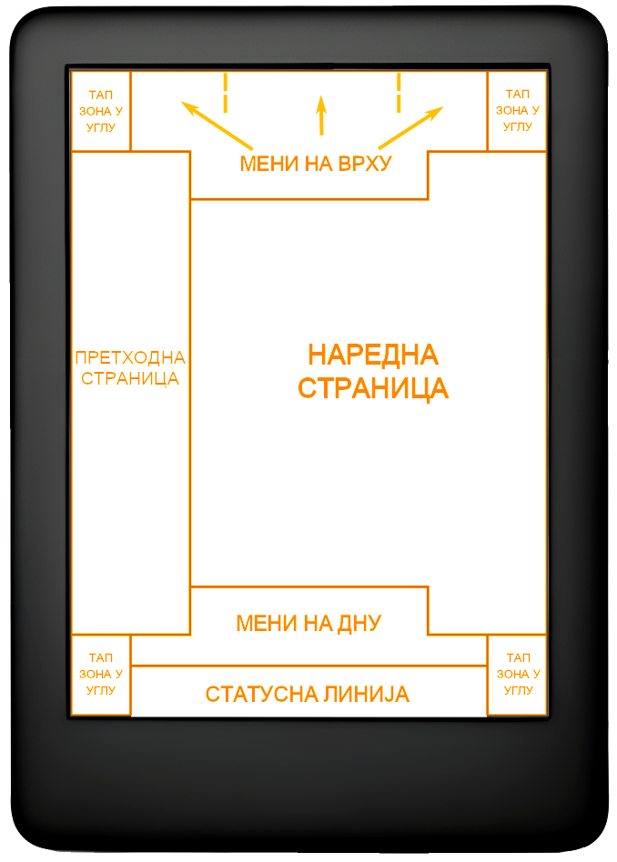
На горњој слици можете да видите подразумеване тап зоне програма KOReader. Ако желите да се прикаже мени на врху или мени на дну можете да тапнете наведене зоне. Такође можете и да превучете наниже по горњој зони ако желите да се прикаже мени на врху. На уређајима који немају екран осетљив на додир, као што је Kindle 4, мени на дну можете да отворите притиском на дугме које одговара акцији ЕНТЕР/OK.
Ако желите да се оба менија отварају у исто време, следећим менијем можете поставити да зона менија на врху истовремено отвара и мени на врху и мени на дну:
 / Тапови и гестикулације / Активирај мени
/ Тапови и гестикулације / Активирај мени
Тап зоне у угловима могу да се користе за више различитих типова гестикулација укључујући ТАП, ДВОСТРУКИ ТАП, ТАП СА ДВА ПРСТА и ТАП и ЗАДРЖАВАЊЕ.
Зоне ПРЕТХОДНА СТРАНИЦА и НАРЕДНА СТРАНИЦА такође истовремено могу да се користе за ДВОСТРУКИ ТАП гестикулације.
Зона Статусне линије може да се тапне тако да се, када је видљива само једна ставка, кружи по ставкама статусне линије. Ако су видљиве све ставке, тапови ће да прикажу и сакрију статусну линију.
- Измена фонта*:
- Повећате величину фонтаМЕНИ НА ДНУ /

- Подебљате фонтМЕНИ НА ДНУ /

- Инвертујете боје на екрану (бело на црном)МЕНИ НА ВРХУ / / Ноћни режим
Остале опције форматирања такође можете да измените и из МЕНИЈА НА ДНУ и тако фино подесите изглед текста. Наравно, ово су само брзи савети који вам помажу да понете са коришћењем. Постоји цео одељак посвећен ПРИЛАГОЂАВАЊУ ИЗГЛЕДА ТЕКСТА
Осветљење екрана можете да контролишете из овог менија. Ако имате топло осветљење (обичне беле LED диоде + наранџасте), можете одвојено да их контролишете из овог дијалога. За овај дијалог можете да дефинишете и гестикулацију:
/ Предње светлоИз следећег менија, као чувар екрана можете да изаберете омот књиге или произвољну слику:
/ Екран / Чувар екранаКао чувар екрана можете да користите JPG/PNG фајлове (најбоље изгледају исправно дитероване слике у тоновима сиве). Пренесите фајлове са компјутера у било који фолдер на уређају. Па из следећег менија изаберите тај фолдер као фолдер чувара екрана:
/ Екран / Чувар екрана / ПодешавањаМолимо вас да погледате следећи пост на Mobileread форуму у вези са напредним информацијама о припреми слика за чувар екрана.
Ако тражите информације у вези са пречицама на тастатури, кликните овде да скочите на тај одељак. Овај наслов објашњава само употребу тастатуре.
- Тап ван поља за унос затвара тастатуру, тап у поље за унос поново приказује тастатуру
- Превуците навише тастере да унесете то велико слово (или мало ако се већ налазите у шифт режиму)
- Можете да измените изглед тастатуре:
МЕНИ НА ВРХУ / / Уређај / Тастатура / Подешавања тастатуре
- Можете да изаберете више од једног распореда:
МЕНИ НА ВРХУ / / Уређај / Тастатура / Распореди тастатуре
- По изабраним распоредима се крећете тако што тапнете на икону у тастатури
Koreader тастатура омогућава унос додатних карактера када тапнете и задржите тастер. Испод су приказани додатни карактери који се најчешће користе. Да бисте добили суседне карактере можете да тапнете и задржите тастер у сивом пољу:
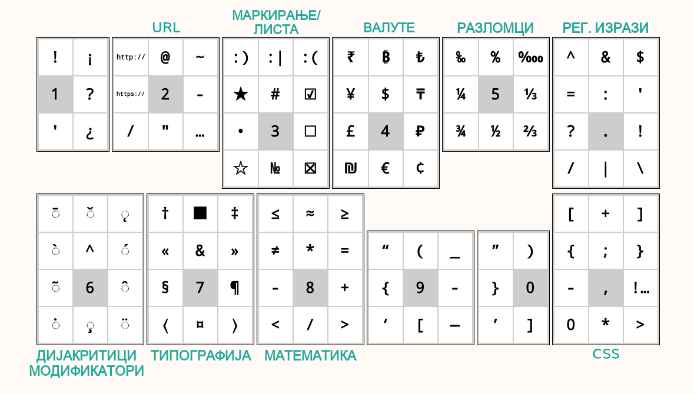
Уз искачући прозор који се добија дугим притиском, ове додатне карактере можете да унесете и превлачењем по тастеру. У примеру испод, можете да превучете навише тастер a када желите да унесете велико А, или да превучете у било ком другом смеру да унесете приказане карактере. Запазите да доњи пример приказује комплетан искачући прозор само да би било јасније објашњење. Нема потребе да отварате овај прозор, можете директно да превлачите по тастерима. Једном када се навикнете на локације додатних карактера, на овај начин ћете бити у стању да их уносите много брже.
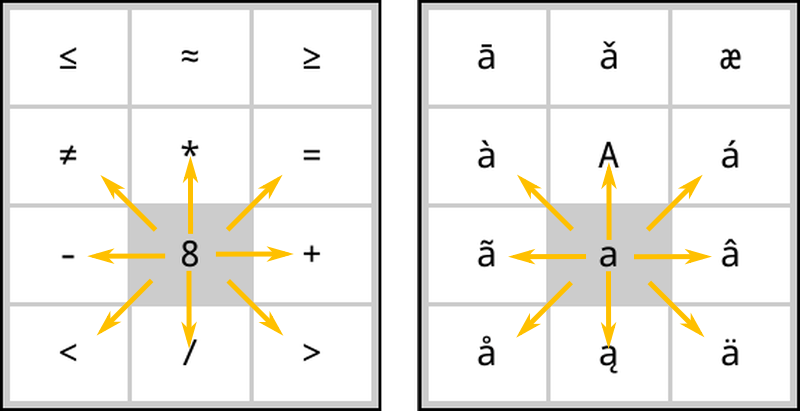
Ако ова функција прави сметње у начину на који користите програм, можете да је искључите тако што уклоните штиклирање са:
/ Уређај / Тастатура / Превуците да унесете додатне карактереТакође постоје још неке пречице које олакшавају манипулацију текста. Следеће тастере можете да тапнете и задржите и извршите следеће акције:
- Лева стрелица - помера курсор на почетак линије
- Десна стрелица - помера курсора на крај линије
Такође, тастер брисања уназад се другачије понаша када на њему извршавате гестикулације превлачења:
- Тап: брише карактер
- Дуги притисак: брише се цела линија
- Превлачење улево: брише се део речи лево од курсора
- Превлачење навише: брише се цела реч
За више информација, погледајте одговарајућу вики страницу.
KOReader такође интегрише кинеску тастатуру потеза којом се уносе упрошћени и традиционални кинески карактери. Више информација о томе можете да пронађете у нашем викију.
Овај додатак вам омогућава да подесите топлину предњег светла на уређајима са природним (жутим/наранџастим) светлом и да аутоматски подесите ноћни режим (инвертоване боје на екрану – бели текст на црној позадини), сагласно са распоредом. Може оба да контролише, или можете да изаберете режим само контрола топлине или само контрола ноћног режима, па да оно друго контролишете ручно.
Када инсталирате KOReader, овај додатак се испоручује подразумевано укључен. Ако се из неког разлога не налази у менију, можете да га укључите овде:
/ Још алата / Аутоматска топлина и ноћни режимТоплину предњег светла екрана можете аутоматски да подесите на два различита начина:
Фиксни распоред: у овом режиму се топлина предњег светла мења према дневном распореду који унесете. Овај режим је статички, не узима у обзир трајање обданице. Распоред остаје исти током целе године.
Позиција Сунца: ова опција израчунава позицију Сунца на вашој локацији сагласно са информацијама о координатама и надморској висини које унесете. Топлина предњег светла се постепено мења у сагласности са овим израчунатим подацима о положају Сунца. Овај режим је динамичан. Пошто се трајање обданице мења током године, додатак аутоматски коригује распоред сагласно са трајањем обданице.
Најпре погледајте следећу слику да се упознате са појмовима који се користе у додатку:
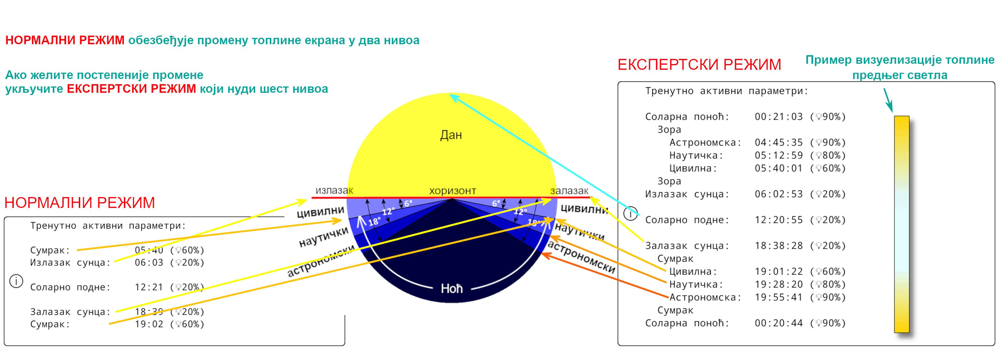
- Идите на мени додатка: МЕНИ НА ВРХУ / / Екран / Аутоматска топлина и ноћни режим
- Запамтите на ставку менија Активирај, па тапните на Сагласно са фиксним распоредом
- Вратите се назад на претходни мени и тапните на ставку менија Подешавања фиксног распореда
- Поставите свој распоред времена преласка уносом времена у разне ставке приказане овде. За објашњење ставки, погледајте горњу слику.
- Идите на мени додатка:
МЕНИ НА ВРХУ / / Екран / Аутоматска топлина и ноћни режим
- Тапните на ставку менија Активирај па онда тапните на Сагласно са позицијом Сунца
- Вратите се на претходни мени и тапните на ставку Подешавања локације. Поставите исправно координате локације (обавезно) и надморску висину (није обавезно) и наведите име своје локације.
- Вратите се назад на претходни мени и тапните на ставку менија Подешавања топлине и ноћног режима
- Поставите свој распоред времена преласка уносом времена у разне ставке приказане овде. За објашњење ставки, погледајте горњу слику.
Тренутни распоред можете да видите из опције менија Тренутно активни параметри.
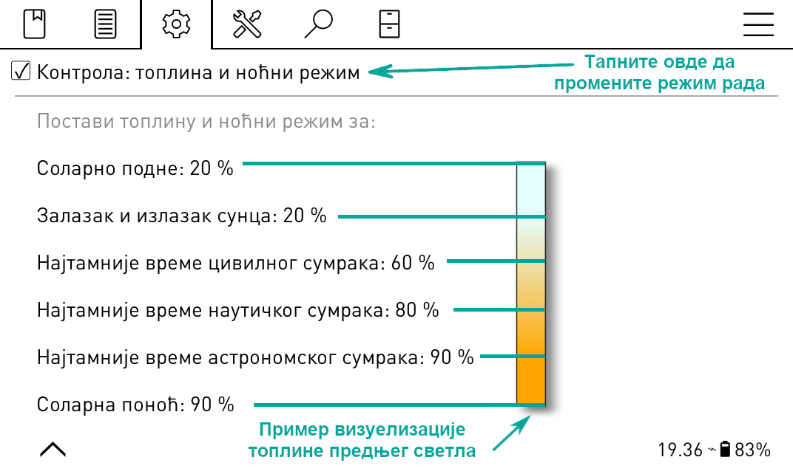
Док постављате проценат топлог светла за различите интервале, за тај интервал такође можете да укључите и Ноћни режим, чиме се инвертују боје на екрану када почне тај интервал. Ако је минимално предње светло још увек превише јако, или ако вам више одговара тамна позадина странице, активирајте ову функцију. Да бисте то урадили, тапните на поље за штиклирање Ноћни режим и тапните Постави.
Када то урадите, у менију ће се поред овог интервала појавити икона месеца. Ако желите да искључите ноћни режим, једноставно уклоните ознаку штиклирања Ноћни режим у том интервалу.
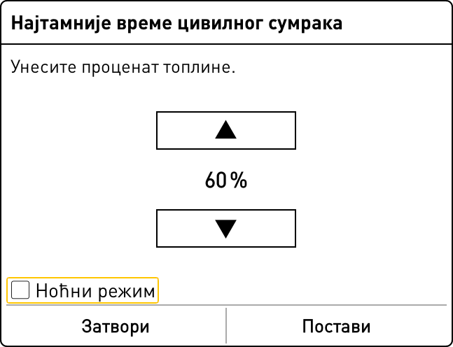
Ова функција укључује предње светло приликом заласка сунца и искључује га приликом изласка сунца сагласно са Тренутно активним параметрима у додатку. Ово можете да преиначите тако што ручно укључите/искључите предње светло. Приликом наредног изласка/заласка сунца, AutoWarmth ће поново изменити стање ако је то потребно. Можете да га активирате тако што у менију овог додатка изаберете ставку Предње светло је искључено током дана.
Ако желите да се уместо постепене измене топлина мења брзо:
- Поставите режим на Фиксни распоред следећи инструкције изнад
- Па поставите подешавања слично као на слици испод:
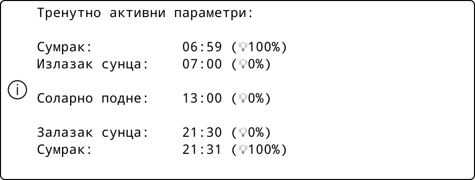
Као што можете видети у горњим подешавањима, разлика у времену преласка између дана и ноћи је само један минут. Тако да топлина екрана иде од 0 до 100 (или обратно) за време од само једног минута. Ово време раздвајања преласка можете да повећате и тако продужите транзицију.
KOReader поседује једноставан, углавном црно-бели кориснички интерфејс јер градијенти и различите нијансе сиве могу да изазову бљескање и појаву духова на e-ink екранима, а то квари уживање у читању.
KOReader има два главна интерфејса: екран читања и прегледач фајлова. Овде ћемо да објаснимо екран читања. Прегледач фајлова је објашњен у овом одељку корисничког упутства.
ЕКРАН ЧИТАЊА има два менија:
- У МЕНИЈУ НА ВРХУ се налазе ставке које се тичу опште употребе KOReader читача. Одавде ћете имати приступ књигама, подешавањима програма KOReader, додацима итд.
- МЕНИ НА ДНУ се концентрише на опције за форматирање документа као што су тежина/величина фонта, проред итд. Док подешавате изглед текста, углавном ћете радити у МЕНИЈУ НА ДНУ.
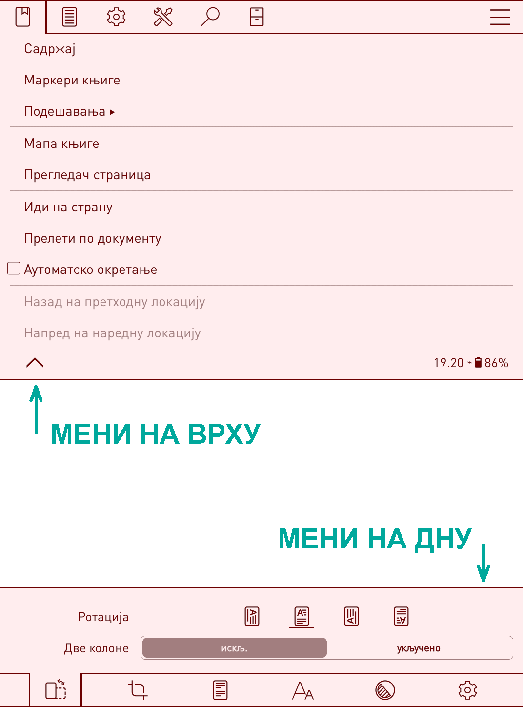
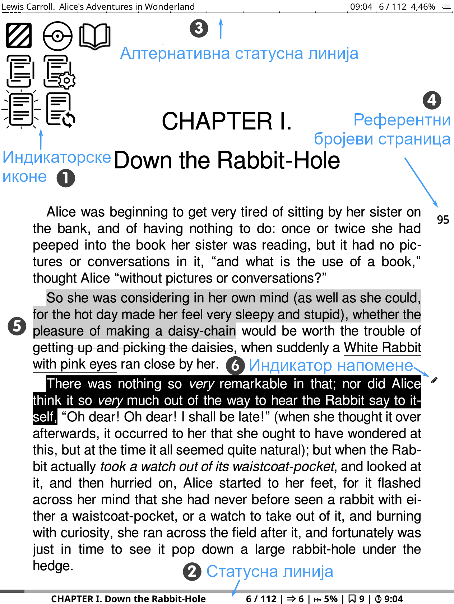
Слика изнад приказује елементе које можете видети на екрану читања док читате књигу:
- Индикаторске иконе: ове иконе вас обавештавају о стањима и о одређеним процесима који се извршавају. Видећете их у горњем левом углу екрана док се извршавају одређене операције. Обично су мање, али их овде приказујемо увећане да би биле јасније. Наредни одељак детаљно објашњава ове индикаторске иконе: Индикаторске иконе
- Статусна линија: ово је област која може детаљно да се подеси и у којој можете да видите разне информације у вези са књигом и KOReader читачем. Кликните овде да скочите на одељак: Статусна линија
- Алтернативна статусна линија: поред подразумеване Статусне линије, имамо и Алт статусну линију која се појављује на врху странице када је укључите. Кликните овде да сазнате детаље: Статусна линија
- Референтни бројеви страница: ако је издавач ваше књиге уметнуо бројеве страница из штампане верзије књиге, видећете их на следећи начин. Кликните овде за више информација: Нумерисане страница и референтни бројеви страница
- Типови истицања: овде можете видети различите типове истицања. Ако ваш уређај има одговарајући екран, можете да направите ми обојена истицања. Кликните овде да скочите на одељак: Маркери, истицања и белешке
- Маркер белешке: икона маркера белешке се појављује када истицању додате белешку. Постоје различити типови маркера белешки. Кликните овде за више информација: Маркери, истицања и белешке
KOReader има одређене индикаторе који вас обавештавају о стањима и одређеним процесима који се извршавају, као што можете видети на слици изнад. Видећете их у горњем левом углу екрана током одређених операција.
Иконе делимичног исцртавања ова група икона припада процедури делимичног исцртавања и вероватно ћете је виђати чешће него остале. Ове иконе видите када промените подешавања у менију на дну. Ова функционалност вам омогућава да много брже видите измене подешавања изгледа текста тако што уместо целе књиге исцртава само текуће поглавље. Захваљујући њој, и ротација оријентације екрана је сада много бржа. Ова функционалност је подразумевано УКЉУЧЕНА . Ако желите, можете да је искључите за одређену књигу (тапом), или глобално (дугим тапом) на: МЕНИ НА ВРХУ /
/ Документ / Укључи делимична исцртавањаКада потврдите измене, комплетна књига мора да се поново исцрта, тако да је ово процедура у више корака. Следеће иконе приказују корак исцртавања, као што је приказано испод: |
У овом кораку, документ је делимично исцртан. Број страница, информације у подножју и многе друге ствари нису прецизне. Можете да видите како изгледа ново подешавање и да наставите са подешавањима. У овом стању такође можете да окрећете странице, скачете на линкове. |
|
Потпуно исцртавање се дешава у позадини. Још увек можете да окрећете странице, следите линкове, мењате подешавања. |
|
Комплетно исцртавање је завршено, али још увек није примењено јер KOReader чека да не радите ништа како би могао поново да учита остатак књиге (не радите ништа=не дирате уређај). Још увек можете да окрећете странице, следите линкове, мењате подешавања. |
|
Нисте додиривали уређај неко време, тако да KOReader сада поново учитава комплетан документ. У овом кораку KOReader је блокиран да би се спречила интеракција. |
Икона истицања ова икона се приказује када се налазите у режиму избора и истицања. KOReader има додатни режим истицања који вам омогућава да започнете истицање и окрећете странице, па тако можете да направите дугачка истицања која могу да се простиру на више страница. О томе можете да читате у одељку МАРКЕРИ, ИСТИЦАЊА И БЕЛЕШКЕ овог упутства. Када у овом режиму започнете истицање, у углу се приказује икона која вас подсећа да се још увек налазите у режиму истицања. Она нестаје када завршите истицање избором краја пасажа или када откажете истицање (поновним тапом на почетак истицања, или на ову икону истицања). |
Икона Покемон лопте ова икона се појављује када извршите дуги притисак на реч (намерно или случајно). KOReader има нормални мени дугог притиска. Постоји и додатни мени веома дугачког притиска, када прст држите дуже од 3 секунде. Ова икона означава да сте активирали овај мени веома дугачког притиска. |
Икона изврнутог режима ова икона се приказује када тапнете горњи леви угао ако:
Овај режим привремено приказује комплетну страницу без опсецања, скалирану тако да стане на екран. У овом режиму можете да окрећете странице. Ако желите да та напустите, тапните на ову икону. |
Типови докумената као што су epub, mobi, html природно немају фиксне бројеве страница јер су то документи који могу да се пресложе. То значи да ови документи могу да се прилагоде величини екрана и оријентацији уређаја (за разлику од, на пример, pdf-ова или djvu фајлова који имају фиксну величину странице).
Ако повећате величину фонта документа који може да се пресложи, ваш број страница ће се такође повећати, јер сада мање текста стаје на једну страницу. Понекада ово прави проблем, јер истицање које сте направили на страници 38, након подешавања фонта може да се нађе на страници 42.
KOReader подржава функционалност Референтних бројева страница која омогућава издавачима да у електронску верзију књиге директно уграде бројеве страница из штампаних књига. Када укључите ову функцију, KOReader сам не израчунава бројеве страница. Уместо тога, он вам приказује уграђене бројеве страница page од издавача. Ово значи да се бројеви страница које видите у Статусној линији подударају са штампаном верзијом књиге the.
Предности референтних бројева страница:
- Референтни бројеви страница омогућавају прецизна цитирања тако што се бројеви страница подударају са штампаним верзијама.
- Референтни бројеви страница могу да помогну при навигацији, поготово читаоцима који су упознати са штампаном верзијом књиге. Помоћу њих се у дигиталној верзији лако проналазе одређени пасажи или цитати.
- Пошто се дигиталне књиге могу читати на разним уређајима и платформама, при чему свака има своју величину фонта и подешавања приказа, исписани бројеви страница се могу значајно разликовати. Референтни бројеви страница обезбеђују стабилну референтну тачку када се иста књига истовремено чита на различитим уређајима као што су е-читач и телефон.
Ови функционалност можете да укључите из:
Ако у истом менију штиклирате и опцију Прикажи у маргини референтне бројеве страница, ови бројеви страница ће се малим фонтом приказивати уз текст.
Имајте на уму да се овај мени приказује само ако су Референтни бројеви страница уграђени у вашу књигу.
KOReader поседује две статусне линије, Доњу статусну линију која је подразумевано укључена. А има и Алт статусну линију која се појављује на вргу странице ако је укључите. Ова Алт статусна линија је доступна само за документе коју могу да се пресложе (epub, html, docx, rtf, txt…).
Доња статусна линија је новија и она се активно одржава. Алт статусна линија је остатак из ранијих верзија KOReader читача тако да у њу не додајемо нове функционалности. Али још увек можете да укључите Алт статусну линију ако вам је корисна. Можете да је укључите из:
/ Алтернативна статусна линијаАлт статусну линију можете да подесите из следећег менија:
/ Статусна линија / Алтернативна статусна линијаУпутства у остатку овог одељка су за Доњу статусну линију.
Доњу статусну линију можете да подесите из овог менија. Слободно истражите подмени ПОДЕШАВАЊА и прилагодите статусну линију по вашој жељи.
/ Статусна линијаПостоји много ставки које могу да се прикажу на статусној линији. Али подразумевано се истовремено приказује само једна, и морате да тапнете на статусну линију да бисте кружили по осталима. Ако желите да се све ставке прикажу истовремено, укључите то овде:
/ Статусна линија / Конфигурација ставки / Истовремено прикажи све изабране ставкеАко сте укључили горњу опцију, статусну линију не можете да сакријете када тапнете на њу. Ако желите да је сакријете, требало би да овде доделите гестикулацију којом се укључује/искључује приказ статусне линије:
Сортирање ставки статусне линије:
/ Статусна линија / Конфигурисање ставки / Ређање ставки у статусној линијиПостоји специјална ставка статусне линије под именом Произвољни текст. Ова ставка вам у статусној линији приказује произвољно унети текст. Такође је можете употребити и да креирате граничник између ставки статусне линије, као што се види у примеру испод:
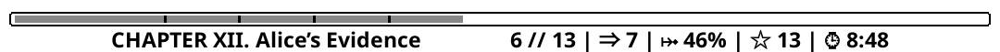
- Најпре је укључите кратким притиском на следеће
МЕНИ НА ВРХУ / / Статусна линија / Ставке статусне линије / Произвољни текст (дуги притисак за уређивање): ‘KOReader’
- Затим поново извршите дуги притисак на њу да се отворе подешавања. Унесите карактер „размак” у прво поље, па затим унесите број понављања у друго поље, чиме се одређује ширина граничника.
Као граничник можете да изаберете и неки други карактер. Ову ставку такође можете да померате као и остале ставке статусне линије, и тако подесите своје групе.
Трака напретка у статусној линији обично приказује ваш напредак читања кроз целу књигу. Али уместо тога, она може да прикаже и напредак читања кроз текуће поглавље. На пример, ово може бити корисно ако књига има много кратких поглавља. У том случају се тешко може пратити напредак читања кроз текуће поглавље, тако да статусна линија поглавља даје корисније информације. Функционалност можете да укључите из следећег менија:
/ Статусна линија / Трака напретка / Уместо тога укљ./искљ. траку напретка поглављаЗа пребацивање између обичне и траке напретка поглавља можете да доделите и гестикулацију. Ову акцију ћете пронаћи под:
Да бисте се упознали са менијем, овде ћемо навести само преглед ставки у структури менија на врху. Детаљне информације се налазе у одговарајућим одељцима овог упутства.
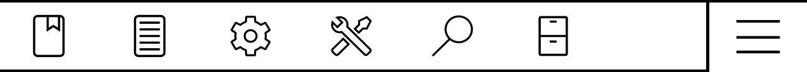
- НАВИГАЦИЈА: Овај мени садржи ставке које вам омогућавају кретање кроз књигу коју читате. Садржај, маркери, мапа књиге...
- СЛОВОСЛАГАЊЕ: Овај мени садржи ставке којима мењате изглед ваше књиге. Поставке фонта, дотеривања стила...
- ПОДЕШАВАЊА: Овај мени садржи подешавања KOReader читача и вашег уређаја. E-ink, осветљење, подешавања гестикулација...
- АЛАТИ: Овај мени садржи додатке који могу да прошире функционалност програма KOReader.
- ПРЕТРАГА: Овај мени садржи ставке у вези са претрагом. Претрага текста, речник, превод, Википедија...
- ПРЕГЛЕДАЧ ФАЈЛОВА: Ово дугме отвара прегледач фајлова, интерфејс којим управљате својом библиотеком.
- ГЛАВНИ: Овај мени садржи алате којима својим књигама приступате кроз историју, омиљене, збирке. У овом менију се такође налазе и информације о књизи, ажурирање и излаз из програма.
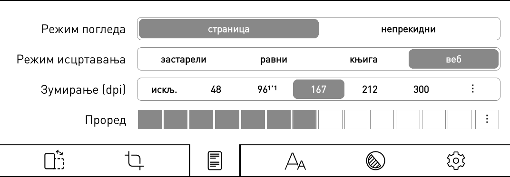
Режим погледа: ако га промените на непрекидни режим, документ можете да скролујете као веб страницу. Овај режим је погодан за екране који не користе e-ink технологију (LCD, OLED). У непрекидном режиму нестају горње и доње маргине тако да текст може да буде одсечен на првој и последњој линији екрана. Да бисте решили овај проблем, можете да укључите Преклапање страница:
Режим исцртавања: ова опција одређује начин на који KOReader исцртава документ на екран. Подразумевана вредност је ВЕБ и у општем случају нема потребе да мењате ово подешавање. Када је књига (или сачувана веб страница) врло компликована (наведене ширине или маргине, негативне маргине, плутајући објекти итд.) и распоред на екрану изгледа лоше или се прелива са екрана, пробајте остале режиме исцртавања.
Зумирање (dpi): ово подешавање може да се сматра за општи фактор зумирања документа (осим за величину фонта). На 96 dpi (што је и подразумевана вредност), слике у документу се исцртавају у оригиналним величинама. У суштини, ово подешавање ћете употребити када желите да слике постану веће, а да величина текста остане иста.
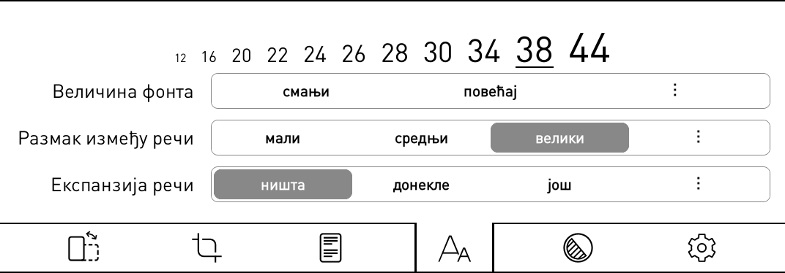
Размак између речи и Експанзија речи: ова два подешавања су у вези једно са другим и она одређују како ће ваш текст да изгледа када се обострано поравна. Када укључите обострано поравнање текста, између речи се додаје размак тако да се обе ивице сваке линије поравнају са левом и десном маргином. Пошто број речи у линијама није исти све време, при обостраном поравнању је потребно да се текст сабије или развуче тако да се испуни простор линије.
Размак између речи: колико карактери размака у линији могу да се сабију тако да стане више речи. Ово подешавање не утиче на речи, оно мења само размак између њих.
Експанзија речи: ако у линији имате превише празног простора, колики део може да се распореди у речи тако што се рашире. Ово подешавање утиче на изглед речи. Ако не желите ширење речи, поставите ову опцију на ништа.
Можете да експериментишете са различитим подешавањима све док вам текст не изгледа лепо, па да их затим у њиховим одговарајућим дијалозима поставите као подразумевана.
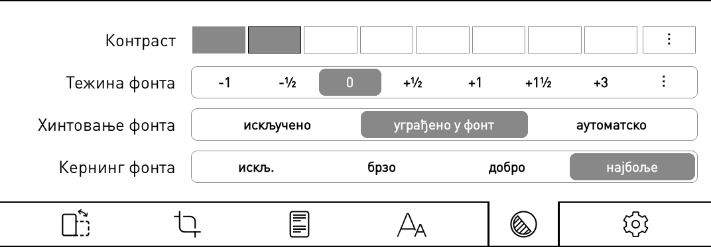
Контраст и Тежина фонта су две опције којима текст може постати тамнији (или светлији). Исти изглед можете постићи било којом од ове две опције, али оне користе различите методе да постигну ефекат. Наравно, обе можете да користите истовремено.
Укратко, разлике између њих су:
+ Не мења ширину фонта, дужина књиге остаје иста
+ Нема потребе да се документ поново исцрта, брже је
- Може лоше да изгледа на LCD или на екранима са малом DPI
+ Ако су инсталирани, употребиће се фонтови одговарајуће тежине
+ Боље изгледа на LCD или на екранима са малом DPI
- Потребно је да се фонтови поново исцртају, спорије је
Хинтовање фонта подешава текст тако да се добије најбоља читљивост на мрежи пиксела вашег екрана. уграђено у фонт користи интерне инструкције за хинтовање у фонту, аутоматско користи алгоритам за хинтовање библиотеке FreeType. аутоматско је сигурнији избор јер инсталирани фајлови фонта могу да имају проблематичне инструкције за хинтовање. Исто тако, аутоматско боље обрађује CJK (кинески, јапански, корејски) текст. Пробајте различита подешавања да видите које боље изгледа на вашем уређају.
Кернинг фонта подешава размак између слова, тако да се добије визуелно лепши резултат. Подразумевана вредност је најбоље, и то може да буде спорије када се отварају фајлови (у зависности од вашег уређаја) али има бољу подршку за лигатуре (за пример, погледајте слику испод), спојене арапске словне ликове и нека остала писма. Ако је ваш уређај спор, покушајте добро јер ради брже, а још увек може коректно да изгледа у случају текстова писаних западним латиницама.
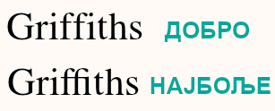
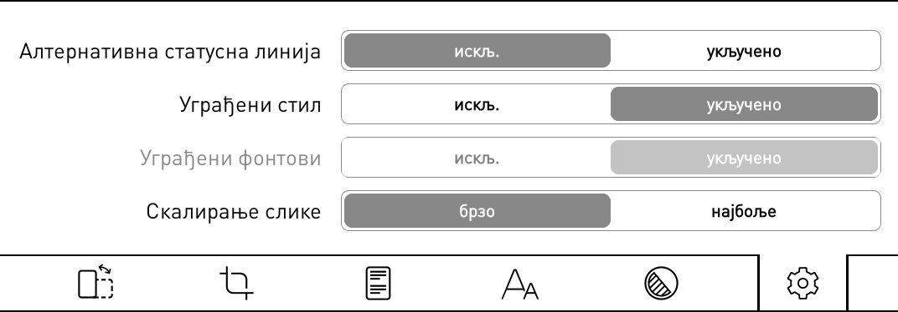
Алтернативна статусна линија укључује алтернативну статусну линију која је доступна само за типове докумената који могу да се пресложе (EPUB, HTML, DOCX, RTF, TXT…). Када се овде укључи, Алтернативну статусну линију можете да подесите из:
/ Статусна линија / Алтернативна статусна линијаУграђени стил и Уграђени фонтови одређују да ли ће се користити (или игнорисати) стилови издавача и фонтови уграђени у документ. Ово су општи прекидачи укључено/искључено. Финија дотеривања докумената можете да извршите из:
Скалирање слике одређује како се исцртавају слике у документу. најбоље изгледа лепше, али је спорије.
Кориснички интерфејс KOReader читача и опције могу да се промене у зависности од типа фајла који отворите. Постоје две главне категорије докумената:
- Документи фиксног распореда (pdf, djvu, фајлови слика…)
- Документи који могу да се пресложе (epub, html, docx, rtf, txt…).
KOReader има доста могућности, тако да систем његових менија осликава ту сложеност. Имамо функционалност Претрага менија којом се брзо проналазе ставке менија. Ако упамтите име ставке менија, али се не сећате где се она налази, употребите следећу функционалност:
За бржи приступ, ову функционалност можете да доделите гестикулацији или да је додате у свој Брзи мени.
Ако у менију на дну тапнете и задржите име опције, приказаће вам се објашњење те опције. |
|
Језик интерфејса можете да промените из: МЕНИ НА ВРХУ /
/ Језик |
|
Ако желите да измените величину корисничког интерфејса, за то постоји DPI подешавање: МЕНИ НА ВРХУ /
/ Екран / DPI екранаМожете да изаберете вредност из менија или да изаберете Произвољна dpi и унесете вредност за фино подешавање: Виша DPI = Већи интерфејс. Приметите да у доњој линији постоји и подешавање Зумирање (dpi). Оно утиче само на документе. Објашњење се налази у наредном одељку. |
Ако тапнете и задржите опцију или ставку менија (тежину фонта, проред итд.), њену вредност можете да поставите као ПОДРАЗУМЕВАНУ. Нова вредност ће се применити само на књиге које се отворе након тог тренутка. Претходно отворене књиге задржавају своја подешавања. Подразумеване вредности можете да препознате по звездици (★) у менију, или као црни оквир око индикатора, као што је приказано испод: 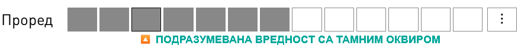 |
Дијалоге који покривају цео екран (Историја, Садржај, Статистика читања итд.) можете да затворите тако што превучете наниже. (Осим прозора Маркери. Да бисте га затворили можете да употребите било коју гестикулацију мултипревлачења) |
Снимак екрана можете да направите извођењем дугог дијагоналног превлачења прстом. Снимак екрана се такође прави и додиром на супротне дијагоналне углове. На пример, ову другу гестикулацију можете да употребите када гледате слику. Такође, ако ваш уређај има тастатуру, снимак екрана можете да направите и пречицом Alt + Shift + G. |
Ако желите да отворите насумично изабрану страницу књиге, имамо акцију Скок на насумично изабрану страницу коју можете да доделите било којој гестикулацији. Налази се у категорији Читач Управљача гестикулацијама. |
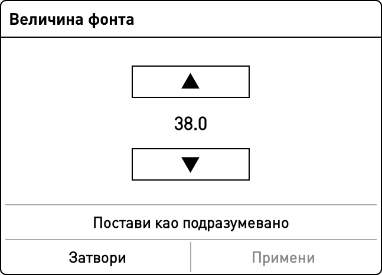 У дијалозима који садрже дугмиће са стрелицама за подешавања, као што су они приказани изнад, стрелицу можете да тапнете и задржите, па да вредност мењате у већим корацима. Овај тип дијалога (који не заузима цео екран) можете да затворите тако што тапнете ван прозора. Овај тип дијалога можете да преместите тако што задржите његов наслов прозора и превлачите. Овај тип дијалога можете да учините полупровидним тако што тапнете и задржите наслов прозора (онда када желите да видите текст испод њега док подешавате вредност). |
Креирање нових фолдера - У ситуацијама када је потребно да изаберете локацију (складиште у облаку, додатак премештања у архиву, додатак за извоз), KOReader вам приказује екран који изгледа као наш Прегледач фајлова. Ако током избора желите да креирате нови фолдер:
|
KOReader подржава претрагу речника у EPUB и скенираним PDF/DJVU документима. Да бисте видели дефиницију у речнику или превод, једноставно тапните и задржите реч. Притисак и задржавање на реч отвара дијалог у којем такође можете да претражите наредна појављивања избора у документу или да га потражите на Википедији. |
Ако желите да видите текући датум, можете да тапнете на сат у МЕНИЈУ НА ВРХУ. |
KOReader има три врсте скроловања додиром. Можете да им приступите из:
/ Тапови и гестикулације / Скроловање- Класично скроловање: овај режим ради на потпуно исти начин као скроловање на телефону/таблету.
- Турбо скроловање: овај режим вам омогућава да скролујете брже у односу на класично скроловање. Такође можете да скролујете више страница без подизања прста. Количина скроловања је пропорционална растојању за које померите прст у односу на тачку из које сте започели скроловање.
- Скроловање при отпуштању: ова врста скроловања је погоднија за e-ink екране. За разлику од осталих типова скроловања, овај режим не освежава страницу непрестано док се скролује. Он ради као исто као и класично скроловање само што се не приказују међукораци. Тако да скролујете прстом, па када подигнете прст, страница скочи на ту позицију. Ово је посебно корисно да се репозиционира и подеси приказ када књига коју читате садржи слике или табеле, па желите да их видите у потпуности.
Ова корисна функција ради на исти начин као дугме Назад у интернет прегледачу. Када скочите на неки други део књиге употребомВиџета за прелетање, Листе маркера, Мапе књиге итд. KOReader памти вашу претходну локацију. Ово је корисно, на пример, ако следите интерни линк или референцу. Једним тапом можете да се вратите на место са којег сте скочили. Овој функцији приступате из:
Из истог менија, такође можете да идете и унапред. Ова функционалност је додељена гестикулацији мултипревлачења. Ако желите, можете ово да доделите некој другој гестикулацији (као што је тап у угао) или да је додате у свој Брзи мени.
KOReader обично извршава потпуно освежавање на страницама које садрже слике (што можете да приметите као бљесак црне). Разлог за то је да се отараси остатака и духова са претходне странице. Али у зависности од уређаја и ваших личних потреба, ово можда и није неопходно. Понашање аутоматског освежавања можете да искључите овде:
/ Екран / E-ink подешавања / Пуна учесталост освежавања / Увек трепћи на страницама са сликамаАко вам смета, одавде можете да искључите трептање корисничког интерфејса:
/ Екран / E-ink подешавањаПостоје различити начини кретања кроз документ у KOReader читачу, и сваки од њих има своје предности. Можете да користите:
- Виџет за прелетање
- Мапа књиге
- Прегледач страница
Виџет за прелетање је врло користан алат за кретање. Можете га користити да:
- Скочите на било који део књиге директним тапом на траку напретка или уносом броја странице
- Кретање по поглављима
- Кретање по маркерима
Како се отвара виџет за прелетање:
- Дугим тапом на простор Статусне линије при дну екрана
- Из следећег менија:
- Можете да му доделите гестикулацију
- Можете да га додате у свој Брзи мени
Погледајмо најпре дијаграм испод. Приметићете да имамо два различита Виџета за прелетање. Они имају исту функцију, само се разликују по величини:
- ВИЏЕТ ЗА ПРЕЛЕТАЊЕ ПУНЕ ВЕЛИЧИНЕ: Ово је подразумевани виџет за прелетање који ћете видети када инсталирате KOReader. Већи је од компактног виџета за прелетање тако да је угодније притискати дугмад. Овај виџет се отвара на центру екрана.
- КОМПАКТНИ ВИЏЕТ ЗА ПРЕЛЕТАЊЕ: Ово је ситнија верзија подразумеваног виџета за прелетање. На пример, може бити кориснији када радите истицања. Пошто је овај виџет мањи и отвара се на врху или дну екрана, он не заклања страницу у толикој мери као подразумевани виџет.
Ако желите да користите компактни виџет за прелетање, изаберите Горе или Доле у следећем менију:
/ Навигација / Позиција дијалога прелетања:САВЕТ Оба виџета за прелетање могу да се померају. Премештате их тако што притиснете на празну површину и превлачите. Ове дијалоге такође можете да прикажете полупровидно трако што дуго притиснете на правну површину виџета. Али полупровидност се окида само на почетној позицији виџета. Једном када га померите, дуги притисак га враћа назад на почетну позицију.
А сада, вратимо се на дијаграм. Можете видети да на неким дугмићима постоје два описа у различитим бојама: плавој и наранџастој. То значи да ово дугме има две функције: акцију нормалног притиска и акцију дугачког притиска. Ако га притиснете на уобичајен начин, извршиће се ПЛАВА функција. Ако га притиснете дуже, извршиће се НАРАНЏАСТА функција.
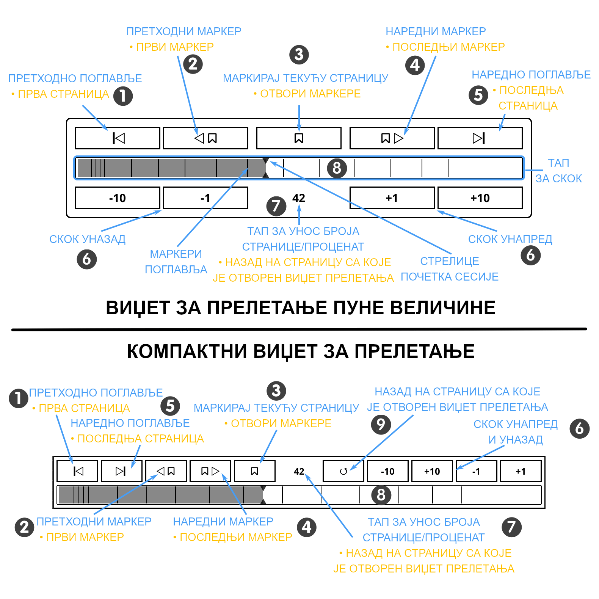
Објашњења нумерисаних ставки (акција дугог притиска је подебљана):
- Скок на почетак претходног поглавља / Скок на прву страницу књиге
- Скок на претходни маркер / Скок на први маркер у књизи
- Маркира текућу страницу / Отвара дијалог маркера
- Скок на наредни маркер / Скок на последњи маркер у књизи
- Скок на почетак наредног поглавља / Скок на последњу страницу књиге
- Скок уназад (-) или унапред (+) толико страница
- Овај број приказује број текуће странице. Ако тапнете на њега, отвара се дијалог који вам дозвољава да унесете број странице или проценат књиге на који се директно скаче. Ако извршите дуги притисак, води вас назад на страницу са које сте отворили виџет за прелетање. На пример, ово је корисно ако желите да брзо погледате неки други део књиге, па да се вратите на место са којег сте скочили.
- Ово је трака напретка. Танке линије су маркери поглавља који приказују почетке поглавља. Можете да тапнете на ову траку напретка и да скочите на тај део књиге. Мале стрелице су стрелице почетка сесије које означавају место са којег сте почели читање ове књиге у текућој сесији читања. Ове стрелице се ресетују када прелазите са књиге на књигу.
- Ово дугме у компактном виџету за прелетање функционише на исти начин као и функција дугог притиска на ставку број 7. Оно вас води назад на страницу из које сте отворили виџет за прелетање. На пример, ово је корисно када желите да брзо погледате неки други део књиге, па да се вратите назад на место читања са којег сте скочили.
САВЕТ Ако желите да отворите насумично изабрану страницу књиге, имамо акцију Скок на насумичну страницу коју можете да доделите било којој гестикулацији. Налази се у категорији Читач Управљача гестикулацијама.
KOReader може да прикаже границе поглавља документа у ВИЏЕТУ ЗА ПРЕЛЕТАЊЕ и у ТРАЦИ НАПРЕТКА.
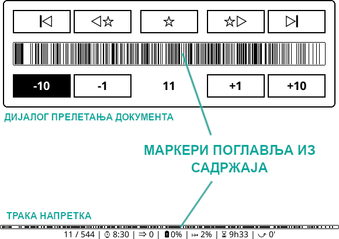
Ако документ има много нивоа наслова, ознаке поглавља могу да буду збијене, као у примеру испод. Дубину видљивих нивоа ознака садржаја можете да измените из:
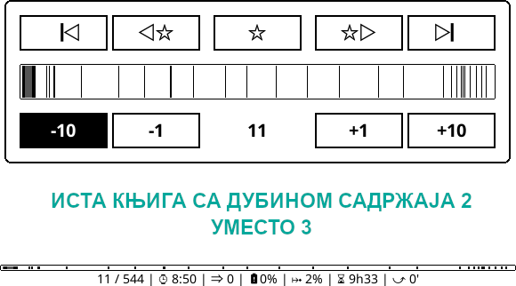
Овај редуковани садржај можете да користите и за:
- наслове поглавља (ако су приказани на Статусној линији)
- кретање по поглављима
- процене времена до краја читања
Ове опције се налазе у истом менију.
Ако документ нема садржај, можете да укључите АЛТЕРНАТИВНИ САДРЖАЈ. Када укључите ово подешавање, KOReader ће да изгради садржај из наслова у документу (ако су доступни) или од појединачних HTML фајлова у EPUB. Да бисте видели додатне информације, извршите дуги притисак на ову ставку менија:
Више информација о алатима за садржај који су доступни у програму KOReader можете да пронађете у одговарајућем одељку овог упутства: АЛАТИ ЗА САДРЖАЈ
Мапа књиге је моћна и јединствена функционалност програма KOReader која може да буде врло корисна за добијање прегледа књиге. На пример, ако читате књигу тако да не следите линеарни ток страница већ прескачете неке делове да бисте их читали касније, било би тешко пратити ваш напредак читања. Један поглед на мапу књиге може да вас информише о томе које делове књиге сте већ прочитали.
Уз то, можете и да:
- Видите колико времена сте провели на свакој страници (ако је укључен додатак Статистика читања)
- Погледате које странице имају маркер, истицања и белешке
- Скочите директно на било који део књиге, исто као и ВИЏЕТОМ ЗА ПРЕЛЕТАЊЕ
Мапи књиге можете да приступите из менија, а можете и да јој придружите гестикулацију за још бржи приступ:
Када читате књигу и по први пут отворите Мапу књиге, она ће се приказати у режиму Приказ мреже , тако да сва поглавља стану на један екран, чиме добијате најбољи почетни преглед садржаја књиге. Ако желите да видите детаљне информације у вези са употребом, тапните на инфо икону у горњем левом углу. Мапу књиге можете да затворите тако што тапнете на X у горњем десном углу или било којом гестикулацијом мултипревлачења (ГОРЕ-ДОЛЕ, ЛЕВО-ДЕСНО итд.).
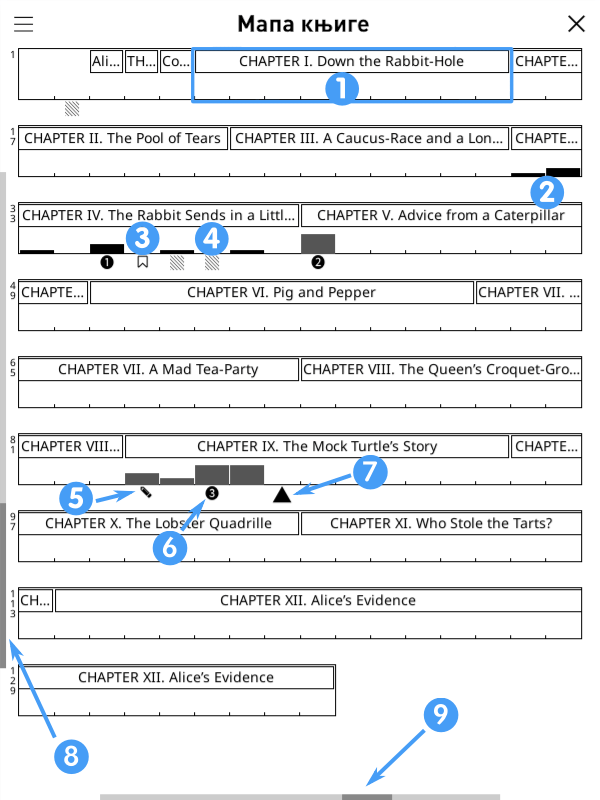
- Границе поглавља
- Црне линије означавају прочитане странице. Више линије значе више времена проведено на страници.
- Икона маркера, као што јој и име говори, означава маркиране странице.
- Икона шрафираног квадрата означава странице са истицањима.
- Икона оловке означава странице са белешкама.
- Бројеви у кругу означавају ваше претходне локације. Када у менију изаберете Назад на претходну локацију , скочићете назад по овом редоследу.
- Троугао означава вашу текућу страницу.
- Вертикална скрол линија приказује текући ниво приказа.
- Вертикална скрол линија приказује текући ниво ширине странице.
Мапу књиге можете да прилагодите следећим опцијама:
- Најпре пробајте да превлачите ЛЕВО и ДЕСНО уз доњу ивицу екрана да промените ширину колона које приказују странице и посматрајте како то мења скалирање мапе.
- Затим пробајте да превлачите НАВИШЕ и НАНИЖЕ уз леву ивицу екрана да измените дубину наслова поглавља и да пређете на Равни приказ. Погледајте примере испод.
Уз подразумевани Приказ мреже који је описан изнад, овде на левој страни можете да видите Равни приказ и Приказ мреже без наслова поглавља на десној страни. Запазите вертикалну скрол линију која се мења у погледима. Ако желите да се вратите назад на подразумевани поглед, можете да извршите дуги притисак на инфо икону у горњем левом углу.
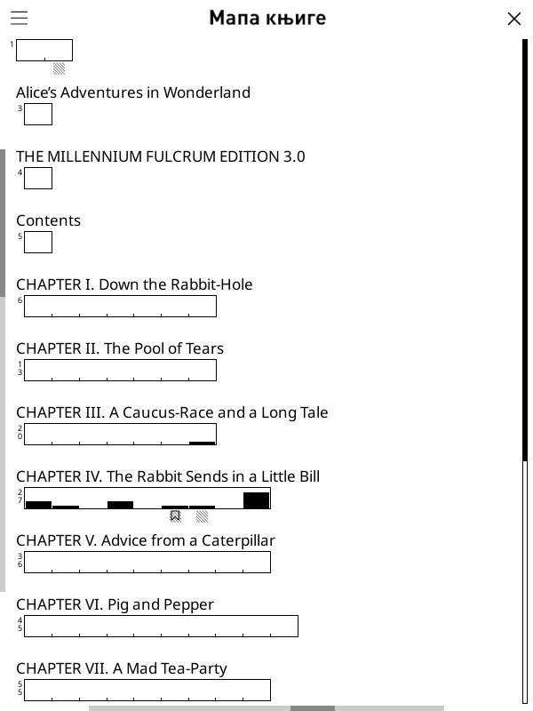
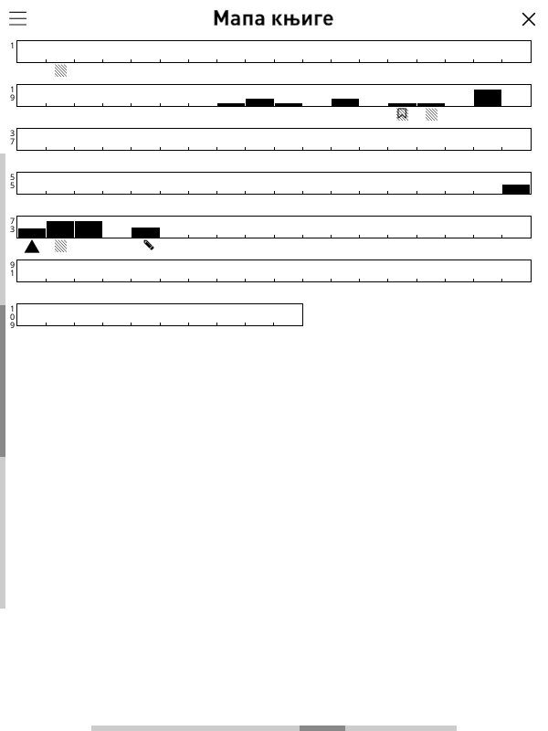
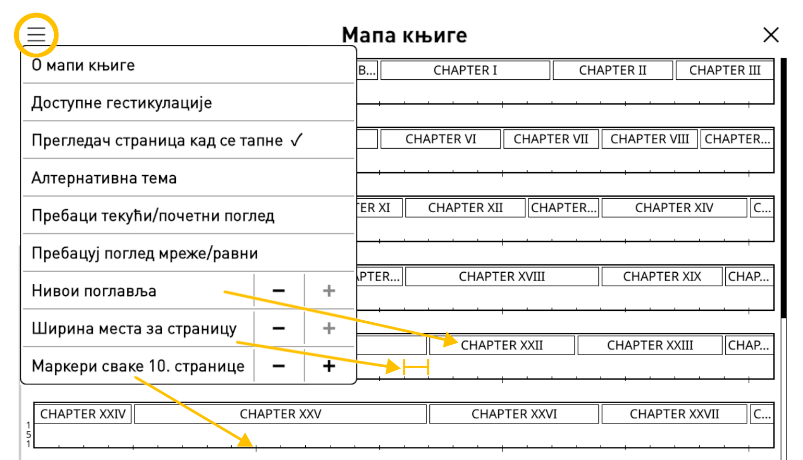
Када тапнете на икону менија у екрану Мапе књиге приказаће вам се мени са горње слике. Испод су објашњене опције менија:
- О мапи књиге: кратко објашњење о начину на који се користи Мапа књиге, као и опис икона.
- Доступне гестикулације: уместо да користите овај мени, подешавања Мапе књиге можете да измените гестикулацијама.
- Прегледач страница када се тапне: ако је ово штиклирано, тапом на Мапу књиге се отвара Прегледач страница. Ово приказује преглед области коју сте изабрали. Ако искључите ову опцију, тап на Мапу књиге вас води директно на ту страницу. Али упамтите, у зависности од фактора као што су величина екрана, осетљивост екрана осетљивог на додир, прецизности тапа итд. може се десити да се нађете на суседним страницама.
- Пребацуј текући/почетни поглед: ако сте прилагодили поглед Мапе књиге, тап на ово врши прелаз између подразумеваног погледа и вашег произвољног погледа.
- Пребацуј поглед мреже/равни: пребацује између погледа одвојених поглавља и погледа непрекидних поглавља.
- Нивои поглавља: мења дубину нивоа поглавља/потпоглавља.
- Ширина места за страницу: проширује или сужава свако место за страницу.
- Маркери сваке 10. странице: како увећавате ову вредност, прво ће се додати маркери на сваку десету страницу, затим ће их повећавати, па ће коначно додати маркери на сваку пету страницу.
Прегледач страница може да се користи за кретање по страницама као у фото албуму, тако што сличице страница приказује као мрежу. Прегледач страница можете отворити тапом на Мапу књиге или из менија. За лакши приступ, можете да му доделите и гестикулацију.
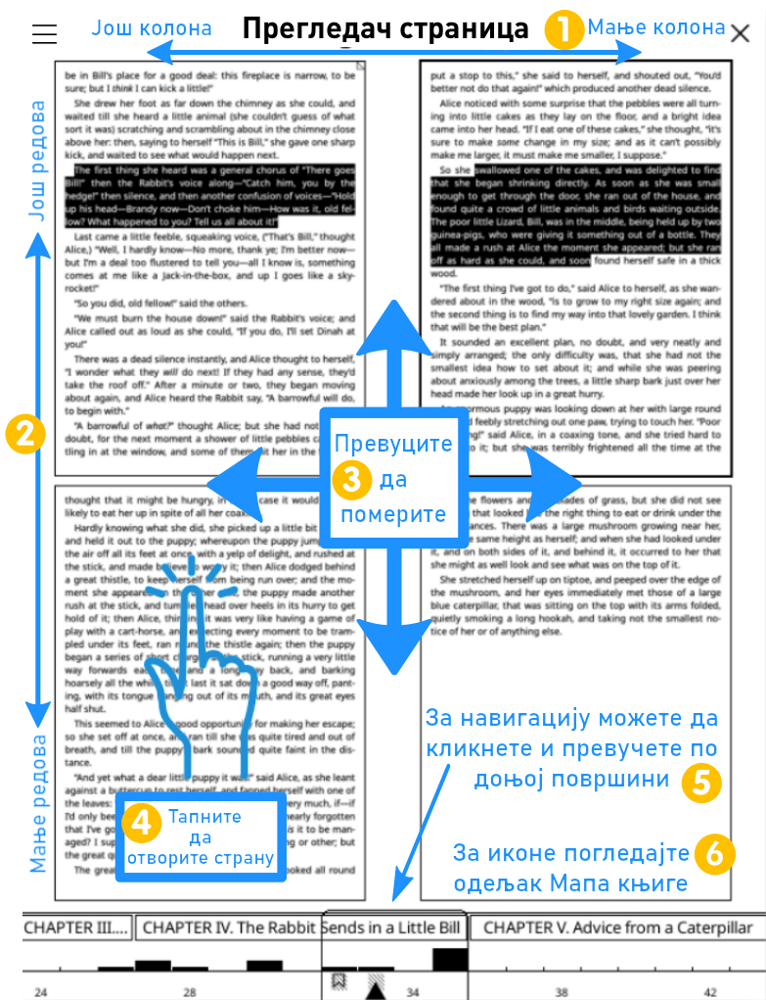
Испод је објашњена употреба Прегледача страница. Такође можете да тапнете на дугме хамбургер менија у горњем левом углу овог екрана и видите ова објашњења. Дуги притисак на исто дугме додаје/уклања наслове поглавља из траке на дну.
- Превуците лево/ десно по овој горњој ивици да повећате / смањите број колона.
- Превуците горе / доле по овој левој ивици да повећате / смањите број редова.
- Превлачите по површи са страницама да померите странице које се виде. Горе / доле да скролујете један ред (2 странице у примеру), лево / десно да скролујете једна екран (4 странице у примеру).
- Тапните на било коју страницу и она ће се отворити у погледу читања.
- У простору на дну, тап на страницу фокусира приказ сличица на ту страницу. Превлачење лево / десно ће скочити за ширину једне траке.
- Иконе у простору на дну су исте као оне које се користе у Мапи књиге и објашњене су у том одељку.
Мапа књиге и прегледач страница имају Алтернативну тему у којој се користи другачија схема сенчења и коју можете да активирате из њихових хамбургер менија. Ова тема користи наизменичне боје за наслове поглавља, тако да су у Мапи књиге и Прегледачу страница границе поглавља лакше видљиве. Али употреба сиве боје у овој теми захтева бљескање на црну, тако да то може сметати неким корисницима. Можете да пробате обе, па да користите ону која вам се више свиђа.
Неке дигиталне књиге на које наиђете можда неће имати прописан садржај. У зависности од тога како је израђена књига, можете искусити следеће проблеме са садржајем:
- У књизи нема садржаја, па не можете да скачете по поглављима и видите време преостало до краја читања
- Садржај постоји, али није од користи јер садржи погрешне наслове поглавља, или неки недостају
KOReader има неке функционалности које можете да употребите када читате књиге са проблематичним одељком садржаја.
Запазите да Алтернативни садржај није доступан за документе фиксног распореда као што су PDF, DJVU итд. јер су за креирање садржаја неопходне HTML ознаке. Функције Произвољни садржај и Произвољни скривени токови су доступне за све типове фајлова.
Прва функционалност је Алтернативни садржај који можете да пронађете у:
Алтернативни садржај покушава да креира садржај из наслова у књизи (ознаке H1 до H6 у HTML фајловима из EPUB књиге). Ако књига не садржи ниједан наслов, покушаће да изгради садржај из фрагмената документа (појединачни HTML фајлови у EPUB књизи) који ће да показују на почетак сваког фајла.
У следећем менију можете да изаберете који нивои наслова улазе (или се игноришу) у садржај:
Функција Произвољни садржај вам омогућава да креирате сопствени садржај из одабраних делова књиге. Тај садржај се састоји само из једног нивоа, тако да када користите ову функцију, не можете имати потпоглавља. Да бисте креирали сопствени садржај, најпре укључите:
Када укључите ову функцију, у корисничком интерфејсу ће се појавити нове ставке менија које вам омогућавају да изаберете поглавља. Поглавље можете да додате у садржај са два места:
- Из истицања: док читате књигу, изаберите текст као да га истичете или урадите дуги притисак на реч. У искачућем менију ћете видети ставку Почетак поглавља садржаја. Када је изаберете, приказаће вам се дијалог који од вас тражи да унесете наслов поглавља. У дијалог ће већ бити унесен текст који сте изабрали. Ако је потребно, уредите наслов и притисните направи.
- Из Прегледача страница: отворите Прегледач страница из
Извршите дуги притисак на сличицу странице која желите да буде почетак поглавља и изаберите из искачућег менија ставку Почетак поглавља садржаја. Приказаће вам се дијалог који од вас тражи да унесете наслов поглавља.
Када завршите са креирањем садржаја и не желите да видите ове додатне дугмиће, можете да их искључите тако што уклоните штиклирање са ставке:
Креирање овог садржаја неће да измени оригинални који долази уз књигу. Ваш Произвољни садржај можете да обришете из истог менија (у случају да желите креирати нови). А можете и комплетно да искључите функцију, на исти начин на који сте је и укључили, у случају да желите повратак оригиналног садржаја. Запазите да ако након креирања произвољног садржаја искључите ову могућност, он се неће обрисати. Још увек можете да се пребацујете између оригиналног и вашег произвољног садржаја.
Неке књиге или документи могу да садрже дугачке одељке фуснота или библиографије. Као нека научна књига дужине 250 страница чијих је 50 последњих страница Додаци, Индекс и Референце. У општем случају, ове странице су део траке напретка и улазе у обзир приликом израчунавања времена читања јер су део књиге. Али ови одељци углавном служе као референца и не читају се у потпуности, тако да има смисла да се изузму како би број преосталих страница и процена преосталог времена читања до краја били тачнији. Или можда имате неку књигу антологије која садржи и приче које сте већ прочитали. Функција Произвољни скривени токови програма KOReader вам омогућава да изузмете овакве делове књиге.
Погледајте слику да стекнете општи преглед процеса. Кораци ће бити објашњени након слике:
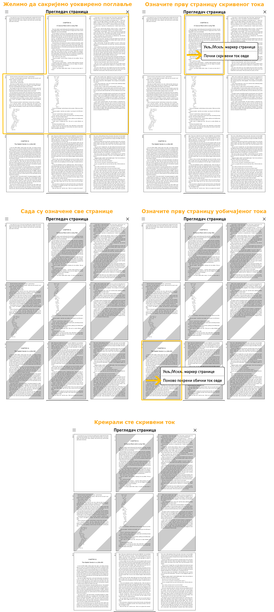
Како се изузима одељак креирањем скривеног тока:
- Идите на прву страницу одељка који желите да изузмете
- Отворите Прегледач страница из:
- Извршите дуги притисак на сличицу странице која представља почетак одељка који се изузима и у искачућем менију изаберите ставку Почни скривени ток овде.
- Видећете да странице почевши од оне коју сте изабрали имају сиво шрафирану позадину.
- Сада идите на последњу страницу одељка који желите да се изузме. Тамо можете да одете из Прегледача страница, или коришћењем осталих начина као што су Мапа књиге, Виџет за прелетање итд.
- Једном кад се нађете на последњој страници одељка који се изузима, поново отворите Прегледач страница (ако се већ не налазите у њему).
- Пронађите последњу страницу вашег скривеног одељка и извршите дуги притисак на наредну страницу. Изаберите из искачућег менија ставку Поново покрени обични ток овде. Видећете да се позадина остатка страница враћа на нормалну боју, што означава крај скривеног и почетак обичног тока.
Рад са скривеним одељцима:
Када креирате скривени ток на начин који је описан изнад, понашање програма KOReader ће бити слично као у ситуацији када из папирне књиге уклоните одељак тако што одсечете одговарајуће странице:
- Ови одељци скривеног тока ће се прескакати приликом окретања страница. На пример, претпоставимо да сте креирали скривени ток за Поглавље 10. Сада се налазите на последњој страници Поглавља 9. Када окренете страницу, видећете Поглавље 11.
- Нумерација страница ће се наставити као да ови одељци скривеног тока не постоје.
- Ови одељци скривеног тока се неће приказивати у Траци напретка (али прочитајте објашњење испод) и неће се узимати у обзир при израчунавању времена до краја читања. Али ће још увек моћи да се виде у Виџету за прелетање.
- Још увек ће да функционишу директни линкови на странице које су део ових одељака скривеног тока. Такође, још увек можете да дођете до ових одељака из Садржаја, Мапе књиге, Прегледача страница, Виџета за прелетање.
Као што смо рекли изнад, скривени токови ће се изузети из Траке напретка. Али ако скочите на један од скривених одељака користећи било који од горе наведених метода, ваша Трака напретка привремено постаје линија напретка тог скривеног одељка. Ово можете да замислите као да се трака напретка зумира у тај одељак скривеног тока. Ако изађете из овог одељка скривеног тока окретањем странице на његовом крају, или ако употребите остале алате за кретање по књизи, ваша Трака напретка се поново враћа на приказ комплетне књиге (који поново не приказује скривене токове).
Уклањање и брисање скривених одељака:
Појединачне одељке скривених токова можете да уклоните из Прегледача страница на исти начин на који сте их и креирали. Такође можете и да их обришете све одједном ако употребите следећу ставку менија:
Док радите на креирању скривених токова означавањем страница као Почни скривени ток или Поново покрени обични ток, неке од раније означених можда више неће имати ефекта. На пример, у случају да сте направили Почни скривени ток неколико страница пре постојећег Почни скривени ток, тај постојећи више нема ефекта. Ово преклапање или застареле ознаке се памте из практичних разлога. Ако опет у претходном примеру тај одељак завршите пре постојећег-који-више-нема-ефекта Почни скривени ток, тај неактивни ће се поново активирати. Ако ометају ваше произвољне токове, можете да обришете све ове неактивне маркере, или када завршите са креирањем скривених токова и задовољни сте резултатом, урадите:
У неким апликацијама читача, када промените подешавање, рецимо фонт који се користи за књигу, та промена важи глобално. Ово значи да ако подразумевани фонт промените на Verdana, свака књига коју након тога отворите, укључујући и оне које већ читате, биће приказана тим Verdana фонтом.
Приступ KOReader читача се разликује од овога. Ми подешавања изгледа књиге чувамо за сваку књигу посебно. Ово вам омогућава флексибилност да измените подешавања текуће књиге и да то не утиче на остале. На пример, ако имате неке књиге епске фантастике, фонт можете да поставите на неки са средњевековним изгледом само за те књиге. Или можете подесити да се неке књиге отварају у положеној оријентацији или у режиму две колоне.
Да бисте подешавање променили глобално, тапните и задржите опцију или ставку менија (тежину фонта, проред итд.), и тако поставите њену вредност као подразумевану. Као што је већ речено, ова нова вредност ће се примењивати само на књиге које се отворе након ове акције. Претходно отворене књиге ће задржати своја подешавања. Подразумеване вредности можете да препознате као звездицу (★) у менију или као црни оквир око индикатора, као што је приказано испод:
Дакле, када подесите жељене подразумеване вредности за документ, као што је подразумевани проред или подразумевани контраст, ова нова вредност ће се користити само за нове документе које отворите након измене. Већ отворене књиге се неће мењати.
Али шта ако желите да се и оне измене? На пример, ако промените подразумевани фонт, вероватно ћете тежину фонта и проред поставити на вредности које су одговарајуће за тај нови фонт. Задовољни сте изгледом текста и сада желите да све ваше књиге тако изгледају. Уз ову функционалност нема потребе да ове вредности ручно постављате за све отворене књиге.
Лако можете да примените та нова подешавања на већ отворене књиге бирајући:
Када тапнете на ову опцију, подешавања текуће књиге ће се променити на најновије подразумеване вредности које сте поставили. Не брините, ово ће да промени само изглед књиге. Ваша позиција читања, истицања, белешке и маркери ће се очувати.
Када подесите изглед књиге онако како вам одговара, на пример, изменом прореда, контраста фонта итд. све њих одједном можете да сачувате као подразумеване вредности. Затим та подешавања можете да примените на остале књиге употребом опције Ресетуј подешавања документа на подразумевана која је објашњена изнад.
Измене можете да сачувате као подразумеване вредности када изаберете:
Ова моћна функционалност вам омогућава да сачувате сва подешавања МЕНИЈА НА ДНУ + тип фонта као профил. То значи да можете имати различите групе подешавања за различите услове или различите типове књига која можете одједном применити уместо да сваки пут ручно мењате подешавања.
На пример, можете да креирате:
- Профил Две колоне са две колоне текста мале величине, положену оријентацију и минималне маргине
- Профил Ноћно читање са већим линеарним фонтом и већим контрастом чиме се добија читљивији текст у условима слабог светла
- Профил Искључени стилови са искљученим уграђени стил и уграђени фонтови у случају лоше структурираних књига
Када поставите подешавања по жељи, профил заснован на њима можете да креирате из:
/ Профили / Нови са текућим подешавањима књигеКада креирате профил са својим подешавањима, имате многе опције за примењивање профила на другу књигу:
- Профил можете да примените из менија Профили
- Можете да му доделите гестикулацију
- Можете да га прикажете у Брзом менију
Кликните овде да скочите на одељак упутства БРЗИ МЕНИ И ПРОФИЛИ.
KOReader подржава фонтове у најраспрострањенијим TrueType (.ttf) и OpenType форматима (.otf). Фајлови фонтова са овим екстензијама могу директно да се копирају у /koreader/fonts/ фолдер на вашем уређају. За више информација, погледајте наш вики.
Када се покреће, KOReader сакупља доступне фонтове из метаподатака/информација у фонту и класификује их по фамилијама и тежинама. Ово значи да можете додати различите тежине и варијанте фонта и KOReader ће покушати да употреби најпогоднији. Пошто информације о фамилији фонта узима из метаподатака, имена фајлова фонтова нису важна када их копирате на уређај. Инсталирани фонтови постају доступни након поновног покретања програма KOReader.
Ево примера неких фонтова који лепо изгледају на e-ink екрану. Више њих можете да пронађете на Google Fonts веб сајту:
Серифни:
Линеарни:
Фиксне ширине:
Ако планирате да користите сопствени фонт фиксне ширине, вероватно већ имате омиљени, тако да овде не нудимо никакве примере. Али многе фонтове фиксне ширине можете да пронађете и да их поредите на programmingfonts.org
Ако ваша књига садржи делове писане фонтовима фиксне ширине (као у случају књига о програмирању), текст фиксне ширине би могао изгледати диспропорционално чак и ако је технички исте величине као и текст остатка књиге. Узрок овога је различита метрика фонта. KOReader има опцију која вам омогућава да подесите релативну величину фонта фиксне ширине и тако поправите ову разлику:
Овде можете да повећате или смањите величину свог фонта фиксне ширине тако што поставите скалирање као проценат подразумеване величине.
У документима који се заснивају на HTML/CSS, као што су EPUB документи, уместо одређеног имена фонта, књиге могу да наведу употребу фамилије фонтова. Ове фамилије могу да буду Серифни, Линеарни, Фиксне ширине, Курзивни, Фантазија, Емођи, Fang Song и Математички. На пример, у некој књизи обични текст може да буде приказан у Линеарном писму, док се дијалози приказују Серифним фонтом. KOReader обично користи ваш подразумевани фонт за све ове фамилији, осим у случају Фиксне ширине и Математички (што се одређује стилом текст чворова, на пример 'font-family: serif'). Ако желите да ове фамилије имају особен изглед, овде можете да им доделите одређене фонтове:
Да бисте променили фамилију фонта за текућу књигу једноставно тапните на име жељеног фонта. Ако ово желите да поставите за све ваше књиге, извршите дуги тап да је поставите као подразумевану (★). Ако књига злоупотребљава ову функционалност фамилије фонта па се ваш подразумевани фонт скоро и не користи, за ту књигу можете да искључите фамилију фонта тако што уклоните штиклирање са придруживања.
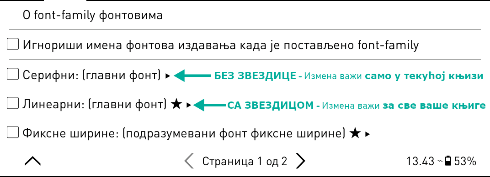
Ако често мењате фонтове (нпр. фиксне ширине за књиге из програмирања и серифне за романе) постоји заобилазно решење које спречава потребу да сваки пут одлазите у мени. Можете да креирате профиле за своје фонтове, као и за сва подешавања у вези са фонтовима као што су проред, контраст, подебљање итд. па да те профиле додате у Брзи мени. Тако да са једном гестикулацијом можете да отворите мени за избор фонта и да промените фонт као што је то приказано на слици испод:
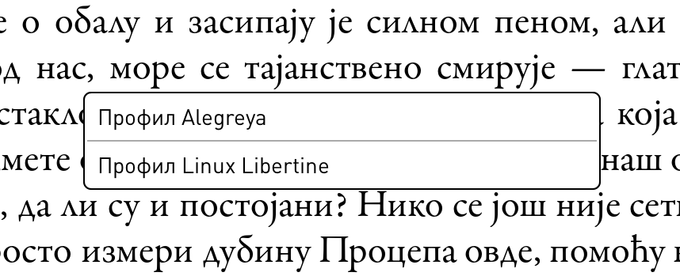
Погледајте одељак БРЗИ МЕНИ И ПРОФИЛИ овог упутства да научите како се то ради.
!!! НАПРЕДНО
Функционалност KOReader читача под називом дотеривања стила вам омогућава да измените начин на који KOReader исцртава вашу књигу. Овде нећемо проћи кроз комплетан CSS курс. Желимо само да вам прикажемо основе, тако да када видите дотеривање стила, имаћете барем основну идеју шта оно ради.
EPUB документ можемо да опишемо као HTML фајл + нека CSS правила. Ова CSS правила одређују како ће се различити делови књиге (наслови, подебљани текст, цитати итд.) приказивати у апликацији читача. Помоћу дотеривања стила, можете изменити начин на који ће се исцртавати ваша књига додавањем нових правила и/или преиначавањем правила која је написао издавач и која су уграђена у вашу књигу.
Хајде да ово видимо на примеру дотеривања стила:
img { width: 10px !important; height: 10px !important }
Простим језиком, ово правило каже: „Игнориши њихову оригиналну величину и учини све слике у овој књизи 10 пиксела широке и 10 пиксела високе.” Дакле, ако у KOReader додате ово дотеривање стила, све слике у вашој књизи ће се приказивати малецке.
Хајде сада да ово дотеривање објаснимо ставку по ставку:
- img - Ово је CSS селектор који циља на све img (image–слика) елементе у књизи.
- { width: 10px !important; height: 10px !important; } - Ово је декларација блока. Садржи стилове који ће се применити на изабране img елементе.
- width: 10px !important; - Овај први део поставља ширину циљаних img елемената на 10 пиксела. Декларација !important је прекидач за преиначавање који обезбеђује да ваша вредност ширине има предност над било којим постојећим width декларацијама примењеним на ове слике.
- height: 10px !important; - Овај део поставља висину циљаних img елемената на 10 пиксела. Поново, декларација !important је прекидач за преиначавање који обезбеђује да ваша вредност висине има предност над било којим постојећим height декларацијама примењеним на ове слике.
Укратко, ово CSS правило је дизајнирано тако да постави фиксну ширину и висину од 10 пиксела свим img елементима у вашој књизи, игноришући њихов оригинални стил.
Ово су нека корисна дотеривања стила која можете да употребите директно или да их измените по својој жељи. Наредни наслов вам објашњава како да их користите у KOReader читачу.
- Додавање граничне линије изнад сваког наслова у књизи:
H1, H2, H3, H4 { border-top: 2px solid black; }
- Додавање мало маргине изнад наслова:
H1, H2, H3, H4 { margin-top: 2em !important; }
- Или ако књига има превелике маргине изнад наслова, уклањају се:
H1, H2, H3, H4 { margin-top: 0 !important; }
- Додавање малог размака између пасуса да би се текст лакше читао:
p + p { margin-top: 0.5em !important; margin-bottom: 0.5em !important; }
- Искључивање свих слика у EPUB:
img { display: none !important; }
-
Уместо да се искључе, слике се приказују у врло малим димензијама:
img { width: 10px !important; height: 10px !important }
-
Одељци блокова кода у књигама из компјутерске науке постају чистији и читљивији (Овде можете видети пример):
pre,code { font-size: 0.6em !important; line-height: 1.8em !important; background-color: #eee !important; margin: 1em 0 !important; padding: 1em 0 !important; }
OК, сада смо видели шта су дотеривања стила. Али како можемо да их користимо? KOReader познаје три врсте дотеривања стила:
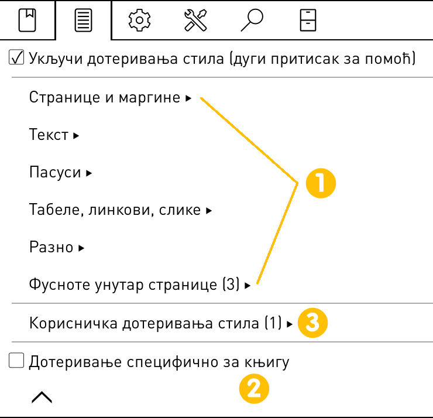
Овај наслов је нов, као и снимак екрана изнад и испод. Треба ли нешто да се дода?
Ова дотеривања се испоручују уз KOReader. Она се најлакше користе, јер је потребно само да се укључе из менија. Нема потребе да пишете било какав CSS кôд:
Јављају се у многим категоријама. Ако желите да дотеривање примените само на текућу књигу, штиклирајте поље. Ако желите да сазнате више информација у вези са овим дотеривањем или да га укључите за све књиге, извршите дуги притисак на његово име. Појавиће се следећи дијалог:
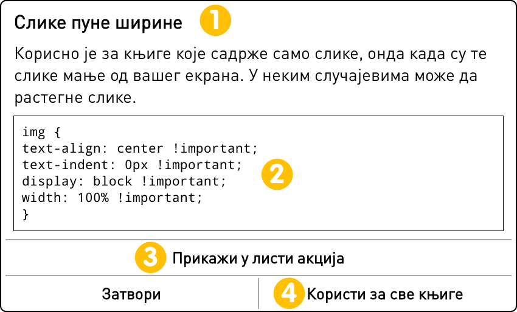
- Ова област приказује име и опис дотеривања
- Ово поље приказује CSS кôд дотеривања. Ако тапнете на ову област, копираћете кôд у клипборд. Затим можете да га налепите и измените у Дотеривању специфичном за књигу, као што је објашњено у наредном наслову.
- Дугме Прикажи у листи акција вам омогућава да ово дотеривање укључујете/искључујете гестикулацијом или да га додате у Брзи мени. За више информација, погледајте испод наслов „Како да се дотеривања користе ефикасно”.
- Дугме Користи за све књиге активира ово дотеривање за све ваше књиге. Уз његово име у менију ће се појавити звезда (★), чиме се означава да се ово дотеривање примењује на све књиге. Истим корацима, ово можете и да искључите.
Као што можете да погодите из имена, ова врста дотеривања је активна само за књигу за коју сте их креирали. Ова функционалност је кориснија за тестирање ваших дотеривања или ако је потребно да поправите нешто у текућој књизи и знате да вам то неће бити потребно за остале књиге. Када креирате ову врсту дотеривања, па схватите да вам је потребно и у осталим књигама (нпр. од истог издавача), можете да га конвертујете у корисничко дотеривање стила, што ћемо управо да објаснимо.
Да бисте креирали дотеривање специфично за књигу, употребите интегрисани едитор који можете да пронађете овде:
САВЕТ У едитору имамо CSS мени на алатној линији у дну. Овај мени садржи доста корисне CSS синтаксе и особина. Када отворите овај мени, молимо вас да најпре прочитате Дугачки притисак за инфо помоћ. Да бисте видели опис, можете и да извршите дугачки притисак на CSS ставке.
Ова група дотеривања се разликује од претходних по начину на који се креира. Такође, за разлику од претходног типа, она нису ограничена на једну књигу. Могу да се примене глобално на све ваше књиге.
Процедура је отприлике оваква, и објаснићемо је детаљно:
- Креирајте свој фајл корисничког дотеривања
- Пренесите га на уређај
- Укључите своје дотеривање из менија
1. Креирање фајла корисничког дотеривања:
Корисничко дотеривање стила је у ствари обичан текст фајл са .css екстензијом. Овај фајл можете да креирате:
- На свом компјутеру
- На свом уређају ако има едитор текста (као што су уређаји базирани на Android ОС-у)
- У интегрисаном текст едитору KOReader читача који можете да пронађете у додацима
Примере које смо навели изнад можете да копирате / налепите у свој фајл.
2. Пренос фајла на ваш уређај:
Након што креирате фајл(ове) који садржи ваша CSS правила, сачувајте га или га пренесите у styletweaks фолдер унутар ваше KOReader инсталације. Назовите фајлове описним именима јер ће име фајла бити наслов дотеривања у систему менија KOReader читача. У именима фајлова можете да користите доње црте „_”, оне ће се у менију третирати као размаци. Након преноса фајлова, морате поново да покренете KOReader тако да може да их учита.
2. Укључивање дотеривања:
Након поновног покретања, отворите књигу и идите на следећи мени:
Сада би у листи требало да видите своје дотеривање са пољем за штиклирање поред имена. Ако дотеривање желите да примените само на текућу књигу, штиклирајте поље. Ако желите да се то дотеривање укључи за све књиге, извршите дуги притисак на његово име. Појавиће се дијалог. Тапните ставку менија Користи за све књиге. Поред његовог имена у менију ће се појавити звезда (★) која означава да се ово дотеривање примењује на све књиге. Истим корацима можете да га искључите. Погледајте пример испод:
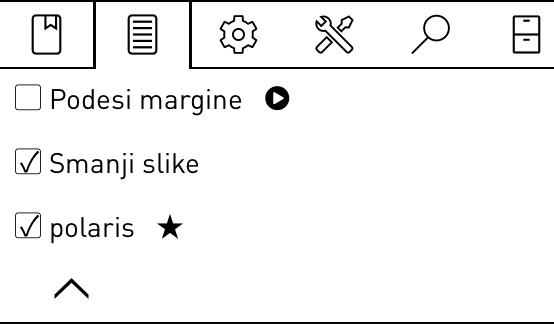
На горњој слици имам 3 фајла дотеривања стила styletweaks фолдеру моје KOReader инсталације. Прво је искључено јер није штиклирано поље. Друго је укључено само за једну књигу јер је поље штиклирано али нема звезде. Треће је укључено за све књиге (★).
Можда сте приметили да поред првог дотеривања постоји и икона десног троугла. Ово значи да се ово дотеривање може активирати гестикулацијама. Ово ћемо објаснити у наредном наслову.
Када креирате своја корисничка дотеривања стила можете да направите више фајлова дотеривања, од којих сваки мења неки део књиге, као у примеру са горње слике. Можете имати један фајл за наслове, остале да измене пасусе, линкове итд. Овакав модуларни систем вам омогућава да укључујете дотеривања у зависности од документа.
Као што смо рекли изнад, корисничка дотеривања стила можете да укључујете/искључујете из следећег менија:
Имамо и лакше начине за активацију и деактивацију ваших дотеривања стила осим одлажења у мени сваки пут.
1. Дотеривању можете да доделите гестикулацију
Да бисмо то урадили, наше корисничко дотеривање стила најпре морамо да додамо на листу акција гестикулација:
- Идите у мени корисничка дотеривања стила и извршите дуги притисак на ваше дотеривање стила
- У дијалогу притисните дугме Прикажи у листи акција
- У менију ће се из ваше дотеривање стила појавити икона десног троугла
Можете га видети на слици за пример изнад, уз Adjust margins дотеривање стила. Сада је ово дотеривање стила додато на листу акција. Можете је пронаћи у категорији Управљачу гестикулацијама > Документи који могу да се преслажу. Додаће се на крај листе.
2. Дотеривање можете додати у Брзи мени
Ако дотеривање желите да додате у свој Брзи мени, оно најпре треба да се дода у листу акција, на начин који је објашњен у претходном наслову. Затим можете да пратите кораке из одељка Брзи мени овог упутства.
Можете чак и да комбинујете обе методе и да креирате специјални Брзи мени за своја дотеривања стила, па да га затим доделите гестикулацији. На овај начин, једноставном гестикулацијом можете да приступите свим својим дотеривањима стила и да их по потреби активирате.
Имајте на уму да наслови у неким књигама можда нису у <H1> или <H2> елементима, већ у нечему као што је <p class="tit123">. Провером изворног кода можете сазнати који селектори се користе за одређени део текста. Да бисте то урадили, изаберите текст у околини елемента који вас интересује, па изаберите Прикажи HTML из дијалога. У горњем примеру, ваше дотеривање стила би изгледало овако:
P.tit123 { border-top: 2px solid black; }
уместо овога:
H1 { border-top: 2px solid black; }
KOReader вам даје могућност да имате интеракцију са својом књигом на исти начин на који је имате и са физичком књигом. Многа подешавања прозора маркера књиге могу да се измене овде:
МАРКЕРИ:
Можете да додате (и уклоните) маркер тако што притиснете горњи десни угао. Ово је исто као да савијете угао странице физичке књиге и приказује сличну икону када га укључите.
ИСТИЦАЊА:
Текст можете да истакнете једним од четири различита стила. На слици испод можете видети обичан пасус након којег следи четири различита стила истицања. Посветли (са сивом позадином), Подвуци, Прецртано и Инвертуј.
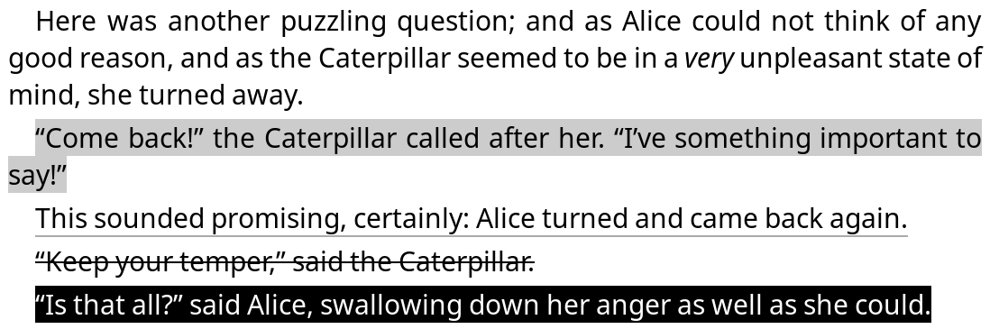
Све ове стилове можете да користите истовремено, као да су маркери различите боје. Или можете да се одлучите за омиљени стил, па да га у овом менију поставите као подразумевани тако што урадите дуги притисак на:
Такође, ако имате уређај са екраном у боји, истицања можете да креирате у различитим бојама:
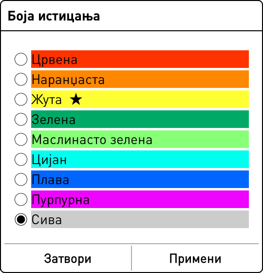
Неки савети за истицања у боји:
- Боју постојећег истицања можете да промените тапом на њега и избором Боја из искачућег менија.
- Боје можете да комбинујете са различитим стиловима истицања, као што су Подвучено и Прецртано и тако креирате моћан систем истицања. На пример, можете да употребите стил црвено прецртано за уклањања или наранџасто подвучено за важне делове итд.
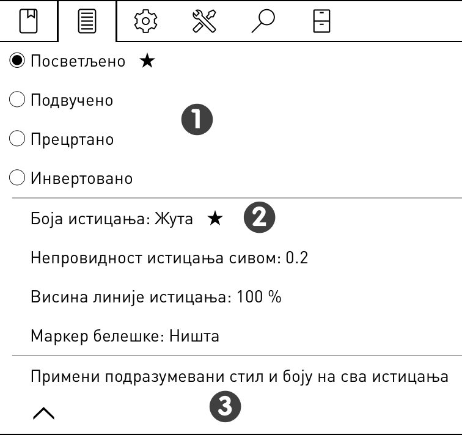
- У менију истицања можете да извршите дуги притисак на тип истицања и тако га поставите као подразумевано (★)
- Након избора боје, можете да извршите дуги притисак на име боје у овом менију и тако ту боју поставите као подразумевану (★)
- Можете да притиснете опцију Примени подразумевани стил и боју на сва истицања и тако учините да сва истицања у књизи изгледају на исти начин. Будите опрезни, не постоји поништавање ове команде!
БЕЛЕШКЕ:
Вашим истицањима можете и да додате белешке. Једноставно тапните на истицање и из искачућег менија изаберите ставку Додај белешку. Такође можете и да изаберете Маркер белешке који приказује која истицања садрже белешку. Постоји три стила: Подвучено, Линија са стране и Ознака са стране (што је икона оловке приказана на десној страни слике испод):
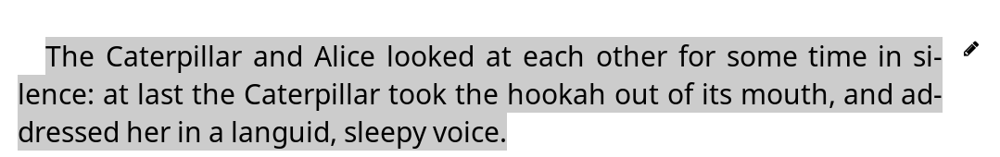
Ако желите да укључите ову функцију и изаберете стил за Маркер белешке, идите на:
KOReader поседује два режима истицања који се користе у различитим ситуацијама:
Нормални режим је сличан избору текста прстом на телефону/таблету и погоднији је истицања која су краћа од једне странице.
- Дуги притисак на почетну реч
- Померите прст на крај пасажа
- Подигните прст са екрана
Када наиђете на границу између две странице, KOReader ће окренути страницу да би могли да наставите истицање (само у EPUB/HTML документима). Ову функцију можете да искључите из:
/ Тапови и гестикулације / Дуги притисак на текст / Ауто скролуј када избор достигне угаоРежим Изабери и истакни је више прилагођен истицању дужих пасажа који се простиру на више страница. Такође може боље функционисати ако имате проблема са осетљивошћу екрана или са контролом моторике својих руку. Јер у овом режиму истицања нема потребе да превлачите прстом по екрану.
/ Тапови и гестикулације / Дуги притисак на текст/ Речник приликом избора једне речиКако се истиче:
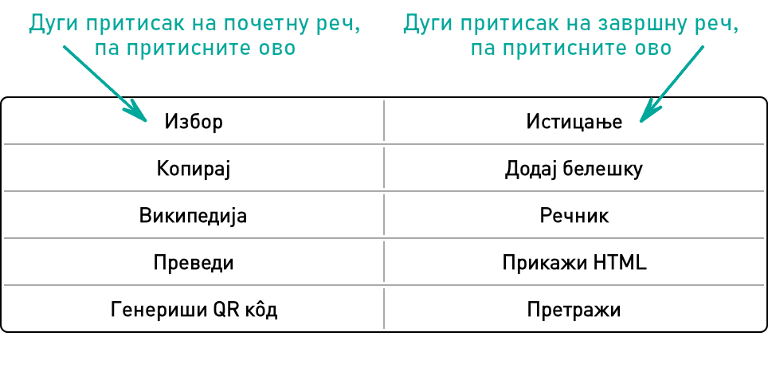
- Дуги притисак (или превлачење ако је укључена претрага речника, као што је описано изнад) на почетну реч, појавиће се искачући мени.
- Тапните на Избор, сада се налазите у режиму истицања. Док се налазите у овом режиму, у горњем левом углу екрана ћете видети индикатор (који можете да тапнете и добијете додатне информације). Истицање можете да откажете тапом на почетак истицања. У овом режиму можете да окрећете странице таповима/превлачењима и да се слободно крећете кроз документ (садржај, прелетање итд.).
- Дуги притисак (или превлачење ако је укључена претрага речника, као што је описано изнад) на завршну реч истицања, поново ће да се појави мени.
- Овај пут тапните на Истицање и завршите истицање пасажа.
Овај дијалог се обично отвара на центру екрана. Ако желите да се отвори ближе месту које тренутно истичете, промените овде опцију Центрирано на Позиција истицања (која се налази на другој страници следећег менија):
/ Тапови и гестикулације / Дуги притисак на текст / Позиција дијалога истицања/ Тапови и гестикулације / Дуги притисак на текст / Изабери и истакниКада вршите истицање, KOReader покушава да у истицање укључи везане знакове интерпункције око текста који изаберете. На пример, ако истичете од прве до последње речи реченице, KOReader ће у истицање аутоматски да укључи знаке интерпункције са оба краја реченице.
Али ако истицање започнете из средине реченице, тачка на крају се неће укључити у истицање јер KOReader претпоставља да желите да извршите делимично истицање. Тако да ако желите да знаци интерпункције буду придодати тексту који истичете, постарајте се да изаберете целу реченицу. Ове знаке можете и касније да додате дугим притиском на дугмиће за Уређивање истицања.
Када тапнете на текст који је већ истакнут (али је без белешке), појавиће се следећи искачући мени. Ставке Обриши и Додај белешку су јасне. Доњи ред ставки менија се користи за проширивање или сажимање истицања.
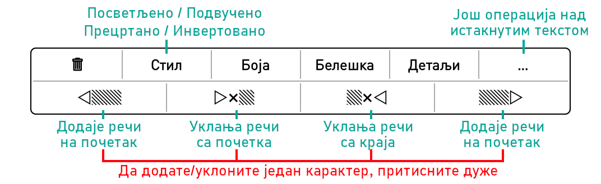
Када тапнете на текст који је већ истакнут са додатом белешком, приказаће вам се следећи искачући мени. Тапните на Уреди истицање и отвориће вам се мени изнад у којем можете да уредите и истицање и напомену везану за њега:
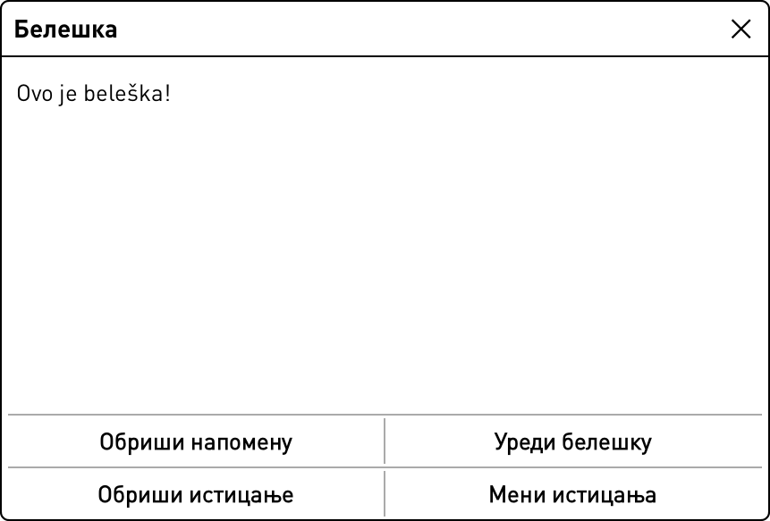
На страници Маркери можете филтрирати приказ тако да се прикаже само један тип маркера тако што притиснете икону менија ( ) Такође можете да филтрирате по стилу истицања:
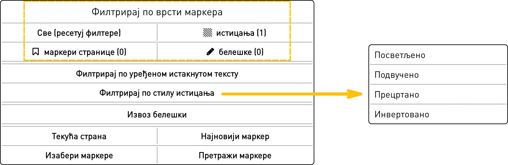
Уз могућност додавања белешке, KOReader вам такође омогућава да уредите сам текст истицања који се приказује у Листи маркера. У неким ситуацијама ово може бити корисније од додавања белешке истицању. На пример, замислите да прегледате текст. Желите да истакнете реченицу која садржи доста датума и један од њих је погрешан. Када пожелите да додате напомену која треба да указује на ову грешку, морате у напомени да наведете који датум је погрешан. Али ако уредите текст истицања, можете уз проблематични датум директно да напишете „(овај датум треба да се провери)”.
Имајте на уму да ово уређивање не мења садржај књиге или истакнутог пасажа на страници. У читачу ћете још увек видети исту истакнуту реченицу. Оно што сте уредили ће се видети само у Листи маркера. Па када касније извезете своја истицања, извешће се тај уређени текст.
Ако желите да уредите истакнуте текст можете да:
- Тапнете на истицање
- Тапнете на Детаљи у искачућем менију
- Тапнете на Уреди текст у дијалогу детаља
То можете да урадите из прозора Маркери:
- Идите на Листу маркера помоћу менија или гестикулације
- Извршите дуги притисак на истицање које желите да уредите
- Притисните у менију Уреди текст
- У дијалогу измените текст и притисните дугме Сачувај
Ако уређени текст желите да вратите на оригинално истицање, следите претходне кораке, па у кораку 3, уместо дугмета Уреди текст, притисните дугме Ресетуј текст.
Обично када отворите листу Маркери, приказује са само садржај ваших истицања. Ако сте истицању доделили белешку, у листи Маркери ћете видети само икону оловке. Можете да извршите дуги притисак на ставку листе и моћи ћете да видите (и уредите) додату белешку. Ако у листи Маркери желите да видите и и текст белешке, поставите то овде:
Имате избор да се прикаже:
- Само истакнути текст (подразумевано понашање)
- И истакнути текст и белешка
- Напомена ако постоји, у супротном истакнути текст
Након што завршите књигу, можете да је преместите у посебан фолдер који служи архивирање или обраду. Укључите додатак Премести у архиву и у његовим подешавањима поставите циљни директоријум (Постави директоријум архиве). Након тога књигу можете да преместите у фолдер архиве:
- Менијем додатка Премести у архиву
- Гестикулацијом или
- Ставком Брзог менија
KOReader обезбеђује различите начине за извоз ваших истицања и белешки са уређаја за читање:
Овај свестрани додатак може да извезе ваша истицања у локалне фајлове или на мрежне сервисе.
Локални извоз
Истицања можете да извезете на уређај у следећим форматима:
- Текст (.txt)
- HTML (.html)
- Markdown (.md)
- Kindle Clippings (.txt)
- JSON (.json)
Жељене формате извоза можете да изаберете из:
/ Извези истицања / Избор формата и сервисаМожете да видите (а ако то желите, такође и да измените) локацију за извоз:
/ Извези истицања / Избор директоријума за извозСервиси на мрежи
Преко мреже такође можете да извезете и на следеће сервисе:
- Joplin - апликација за прављење белешки
- Readwise - апликација за маркере/истицања на мрежи
- Memos - централно место за белешке, отвореног кода, хостовано код вас
- Flomo - мрежни сервис за прављење белешки
- XMNote - Android организатор маркера на кинеском језику
Детаљна упутства за подешавање ових сервиса можете да пронађене на нашој вики страници посвећеној овој теми.
Када изаберете формате, из истог менија додатка можете да извезете белешке за текућу књигу или за све књиге у библиотеци.
Ако желите да извршите извоз само за неке књиге из библиотеке, то можете да урадите из Прегледача фајлова:
- У Прегледачу фајлова изаберите више књига
- Тапните на мени дугме (приказано као знак за штиклирање) у горњем десном углу
- Из менија који се прикаже, изаберите Извези истицања
/ Извези истицања / Изабери стилове истицањаKoHighlights је спољни програм који инсталирате на свој компјутер. Када читач повежете са компјутером, он може приступити вашим белешкама и истицањима у књизи. За преузимање и упутства, погледајте GitHub страницу пројекта.
Calibre је спољни програм који инсталирате на компјутер. Истицања можете да увезете у Calibre базу података његовим KOReader Sync додатком. Тај додатак можете да инсталирате из Calibre апликације. За преузимање и упутства, погледајте страницу пројекта.
KOReader омогућава разне начине за читање PDF/DJVU документа оптимизованих за веће (у општем случају A4 или Letter) формате страница на вашем уређају који поседује мали екран:
1. Можете да укључите Преслагање
/ ПреслагањеПреслагање покушава да издвоји текстуални део документа (ако је доступан) и да га форматира у једну колону. Резултат је углавном задовољавајући. Ово такође можете да подесите и као подразумевано тако што тапнете и задржите.
2. Можете да укључите Зумирај на садржај
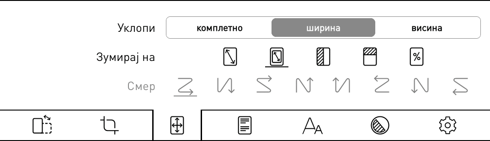
Овом опцијом KOReader покушава да опсече маргине документа тако да текст на екрану може изгледати већи. У истом менију можете да поставите и уклопи на ширину чиме се уместо целе, покушава уклапање само ширине странице, тако да ће текст изгледати већи.
3. Можете пробати да уређај користите у Положеној оријентацији
На овај начин је екран шири, па документ може изгледати довољно велики за удобно читање.
4. Уместо да скролујете екран и читате различите делове, можете да се зумирате на 100 процената
Ово је посебно корисно за стрипове. Најпре у овом менију укључите режим колона:
Затим у истом менију изаберите одговарајући смер тока:
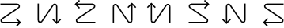
- На пример, ако читате чланак који је сложен у две колоне, скроловаћете наниже све до краја странице читајући леву колону, па ћете затим да наставите читање десне колоне од горњег десног угла странице:
- Или, ако читате стрип, одговараће вам да се крећете „десно / доле лево / десно” по цик-цак линији:
- У случају јапанских стрипова (редослед панела с десна у лево) ово може бити обрнуто:
У овом режиму такође у истом менију можете да подесите и Хоризонтално/Вертикално преклапање и Колоне како би се текст још боље уклапао на екран. Слободно експериментишите са овим подешавањима.
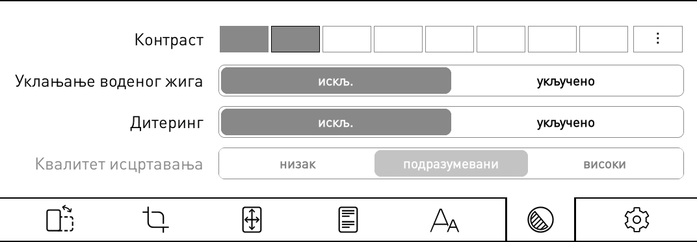
Контраст подешавање подешава нивое црне боје у вашем документу. Имајте на уму да се иста вредност контраста примењује и на текст и на слике документа. Ако га поставите на врло велику вредност, слике ће постати сувише тамне.
Уклањање воденог жига Уклања водени жиг из исцртаног документа. Такође може да се употреби за уклањање сивих позадина. Ова функција може да конвертује документ који користи нијансе сиве или боје у црно-бели формат чиме се добија бољи контраст и олакшава читање.
Квалитет исцртавања (активан само у режиму Преслагања) поставља квалитет процеса који издваја текст и слике и квалитет излаза. Високи је пријатнији али може бити много спорији (неколико секунди за окретање странице) од подразумеваног, у зависности од документа. ако су ваши PDF/DJVU фајлови спори, ово је прво подешавање које би требало да проверите.
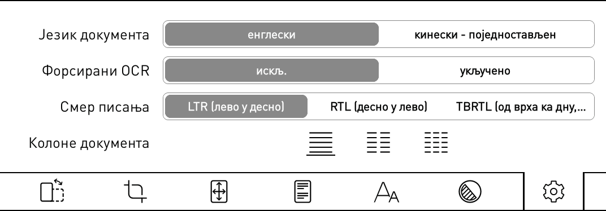
Језик документа поставља језик документа који ће користити механизам за OCR.
Форсирани OCR, као што име каже, форсира употребу OCR (оптичког препознавања карактера) чак и када документ поседује слој са текстом.
Смер писања (активно само у режиму преслагања) поставља смер оригиналног документа. Поставите ово на RTL за језике као што су арапски и хебрејски.
Колоне документа (активно само у режиму Преслагања) поставља број колона текста у оригиналном документу.
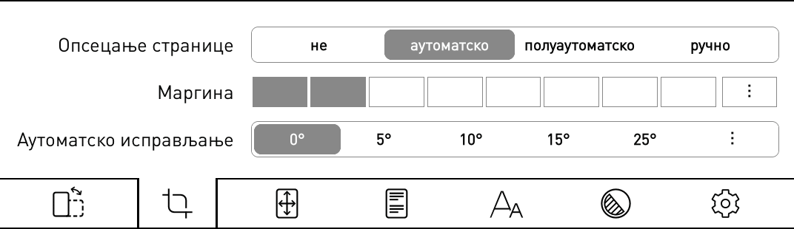
Функција Аутоматско исправљање може да исправи странице проблематичних докумената, на пример, странице PDF документа који је скениран под углом. Доступна је за PDF, DJVU, CBZ/CBT документе и за фајлове слика. Да бисте је укључили, изаберите максимални угао нагнутости који ће KOReader покушати да коригује. Ако не успе, мораћете пробати да изаберете већи угао. Имајте на уму да би у зависности од више фактора, ова функција могла да успори читач.
Ако желите да сачувате своја истицања, употребите KOReader функционалност Извези истицања која је објашњена у претходном одељку.
Ако правите истицања у PDF документу, KOReader такође може да их сачува директно у PDF фајл. Ово може бити корисно у одређеним ситуацијама, јер овом методом истицања постају део PDF фајла. То значи да их можете видети и у осталим апликацијама, без потребе да инсталирате KOReader. На пример, ако фајл са истицањима шаљете неком другом кориснику, он не мора да има инсталиран KOReader да би видео ваша истицања. Једноставно можете да му пошаљете PDF фајл са истицањима која су сачувана у сам фајл и он ће моћи да их отвори и погледа компатибилним PDF читачем.
УПОЗОРЕЊЕ Ако користите додатак Синхронизација напретка, чување PDF истицања ће променити ваш фајл, па синхронизација неће успети. Ако планирате да користите обе функционалности, у подешавањима додатка Синхронизација напретка измените Метода подударања документа на Име фајла уместо на подразумевану вредност Бинарна:
/ Синхронизација напретка/ Метода подударања документаКоји PDF читачи могу да прикажу ова истицања?
PDF читачи се за исцртавање PDF фајлова у општем случају ослањају на неке од стандардних библиотека. Две најпознатије PDF библиотеке су MuPDF и Poppler. KOReader користи MuPDF библиотеку, тако да истицања која KOReader упише у PDF-ове тренутно нису видљива на PDF читачима који користе Poppler библиотеку. Листу компатибилности можете видети испод. ✅ значи да у тој апликацији можете видети KOReader истицања, ❌ значи да не можете. И ⚠️ значи да је апликацији потребан неки додатак да би их приказао. Листа је поређана абецедно по категоријама.
УПОЗОРЕЊЕ Ова листа није комплетна и можда је застарела. Стога вам саветујемо да компатибилност тестирате сами. Једноставно направите истицање у KOReader читачу, упишите га у PDF фајл, па покушајте да га отворите читачем који тестирате и проверите да ли се истицање приказује.
- ✅ Chrome прегледач (све платформе)
- ✅ Deepin Reader (Linux)
- ✅ Firefox прегледач (све платформе)
- ✅ Ghostscript (све платформе)
- ✅ MuPDF (Windows/Android)
- ⚠️ Zathura (ако је укључен MuPDF додатак)
- ❌ Adobe Acrobat Reader
- ❌ Evince (Linux)
- ❌ Foxit Reader
- ❌ LibreOffice Draw (као едитор)
- ❌ Moon Reader (Android)
- ❌ Okular (Linux)
- ❌ SumatraPDF (Windows)
- ❌ Xpdf (Linux)
- ❌ Xreader (Linux)
Пошто креирање истицања за каснију употребу може захтевати значајни труд, ако планирате да користите ову функционалност, требало би да разумете начин на који она ради и тако спречите фрустрирајуће ситуације.
КРАТАК РЕЗИМЕ: ако желите могућност да обришете или извезете своја PDF истицања касније, морате да копирате .sdr фолдер придружен вашој књизи када правите резервну копију или копирате књигу на друге уређаје. Без овог фолдера, KOReader још увек може да прикаже сачувана истицања, али не може да зна где се она налазе у фајлу, тако да не може да их измени. Молимо вас да наставите читање да бисте сазнали више о овоме.
Како у KOReader читачу раде обична истицања
Када у KOReader читачу направите истицање, било да је то EPUB или PDF документ, ово истицање се уписује у фајл подешавања. На пример, ако читате Alice in Wonderland.epub имаћете фолдер под називом Alice in Wonderland.sdr у истом фолдеру у којем се налази и књига. Ваша истицања се чувају у фајлу унутар овог .sdr фолдера. Ово значи да ако обришете тај .sdr фолдер који је придружен књизи, изгубићете и своја истицања.
Како у KOReader читачу раде PDF истицања
Функционалност PDF истицања ради на донекле различит начин од оног који је описан изнад. Као што смо раније рекли, када сачувате своја PDF истицања, она ће се директно уписати у PDF фајл, што значи да постају део самог фајла. То је разлог што тај PDF можете послати неком другом кориснику и он ће моћи да види истицања компатибилним PDF читачем. Неће им требати ваш .sdr фолдер који садржи запис ваших истицања јер су сада истицања директно уграђена у PDF фајл.
Хајде да на примеру објаснимо проблем који може да настане када користимо ову функционалност. Замислите на свом e-читачу PDF књигу читате програмом KOReader:
- Правите истицања и укључена је опција Упиши истицања у PDF, тако да како правите ова истицања, KOReader их чува у PDF фајл.
- Затим желите наставити читање књиге на телефону програмом KOReader, тако да овај PDF фајл копирате са e-читача на телефон (али нисте копирали .sdr фолдер, већ само PDF фајл).
- Када KOReader читачем телефону отворите књигу, видећете да су истицања још увек ту.
Сада је ситуација на оба уређаја иста. KOReader и на e-читачу и на телефону приказује PDF фајл са истим истицањима. Али то само изгледа идентично, у суштини постоји велика разлика.
KOReader на вашем e-читачу зна која истицања у овом PDF фајлу је направио KOReader јер има .sdr фолдер. Али KOReader на вашем телефону то не зна. Он има само PDF фајл.
Разлика се јавља када покушате да обришете pdf истицања или да их извезете. Ваш e-читач може и да обрише и да извезе ова PDF истицања. Али KOReader на вашем телефону то не може, јер као што смо рекли, он нема .sdr фолдер ваше књиге, тако да из његове перспективе, истицања у књизи изгледају као део оригиналне књиге.
Укратко, ако желите могућност да касније обришете или извезете PDF истицања, морате да копирате .sdr фолдер придружен књизи када правите резервну копију или копирате књигу на друге уређаје.
OCR (Optical Character Recognition) је процес издвајања текста из слика. У контексту KOReader читача, ово се у општем случају користи за издвајање текста из скенираних страница књиге у PDF фајловима. KOReader се за овај задатак ослања на Tesseract Open Source OCR Engine.
Ако желите да користите ову функционалност, потребно је да:
- Инсталирате у KOReader Tesseract језичке податке
- Додате ново инсталиране језике у koreader/defaults.lua конфигурациони фајл (неопходно је у случају да је ваш језик није енглески или кинески)
Стриповима је у општем случају потребно чешће освежавање страница него садржају чистог текста. За обичан текст, интервал освежавања странице можете без проблема да поставите на веће бројеве. Али слике могу да оставе више остатака и да изазову појаву такозваних духова, што посебно зависи од врсте панела уграђеног у ваш e-читач.
KOReader вам омогућава да било коју гестикулацију доделите различитим учесталостима освежавања. На пример, можете да поставите превлачење навише по левој ивици на освежавање свака страница када читате стрипове и поставите превлачење наниже по левој ивици на oсвежавање свака x страница за чисто текстуалне књиге. Тако да када отворите стрип, можете да укључите чешће освежавање простим тапом или превлачењем (или обрнуто).
Ова акција се налази у:
/ Тапови и гестикулације / Управљач гестикулацијама / одељак Екран и светла / Освежавање целог екранаОва функција олакшава читање стрипова на мањим екранима. Можете да је укључите док читате PDF, DJVU, CBZ или CBT документ из:
Када је ова опција укључена, KOReader покушава да пронађе границе правоугаоних панела на екрану. Ако на панел извршите дуги притисак, KOReader се зумира и приказује само тај панел.
Као што већ погађате, ова функционалност најбоље ради у стриповима који имају чисте границе панела. Такође, услед овог проблема одређивања граница, у овом режиму нема окретања странице за скок на наредни панел. Морате најпре да затворите зумирани панел, па да извршите дуги притисак на наредни. Да бисте то урадили, једноставно превуците наниже овај зумирани панел. Такође можете да употребите било коју гестикулацију мултипревлачења (било коју комбинацију горе, доле, лево, десно) да напустите овај приказ.
Процедура може да се види испод:
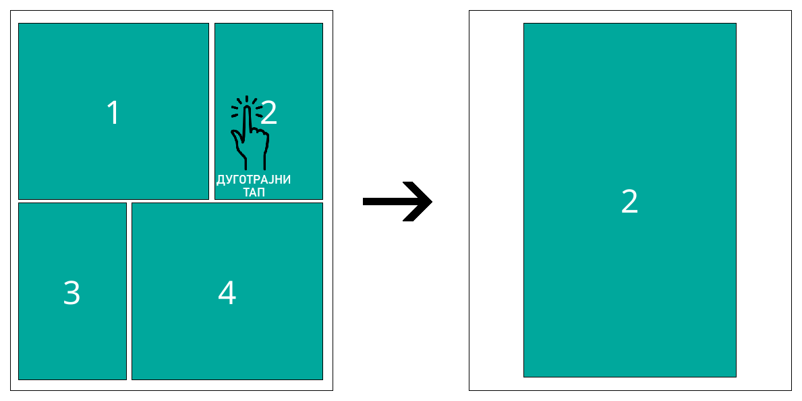
Ако ову функцију желите да користите и са осталим типовима фајлова као што су EPUB, FB2, HTML или фајлови слика, потребно је да фајл отворите другим механизмом: у Прегледачу фајлова извршите дуги тап на име фајла, тапните на Отвори помоћу… и изаберите MuPDF.
Када дођете до последње странице књиге, KOReader вам приказује дијалог. У њему се налази акција Отвори наредни фајл која ће да отвори наредни фајл у истом директоријуму у којем се налази и текућа књига. Тако да серије можете да поставите у посебне директоријуме и да епизоде читате једну за другом, без потребе да одлазите назад у Прегледач фајлова.
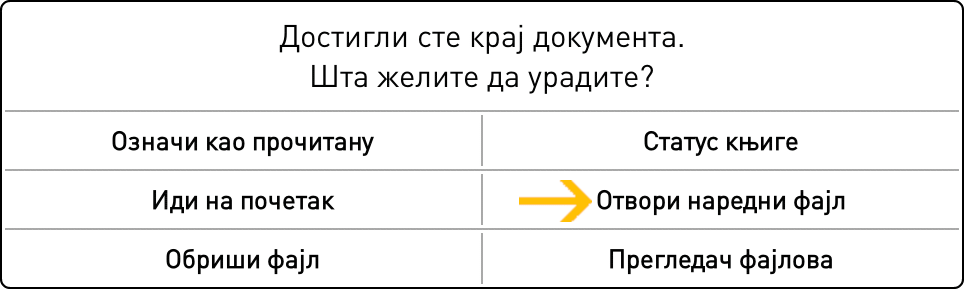
Када отвара овај наредни фајл, KOReader прескаче фајлове које сте означили као завршене. Ова функција је корисна на пример, када имате фолдер манга фајлова и неке од њих сте већ прочитали. Фајл можете да означите као прочитан на крају дијалога приказаног изнад. Такође можете да га означите из Прегледача фајлова тако што извршите дуги притисак на фајл. Након копирања фајлова на уређај можете да:
- Отворите Прегледач фајлова у програму KOReader
- Извршите дуги притисак на оне које сте већ прочитали и тапнете на Означи као прочитану
Сада све фајлове можете да читате тако што на крају књиге тапнете на Отвори наредни фајл. KOReader ће да прескочи оне које сте већ прочитали.
Ако на e-ink уређају читате манга књиге постоје неки савети којима можете да унапредите искуство читања. Ако нисте задовољни како стрипови изгледају на уређају који користите, најбоље решење је да сами припремите манга фајлове.
Типови фајла као што су MOBI и EPUB нису погодни за обраду садржаја који се примарно састоји од слика (нпр., манге/стрипови). Подршка за MOBI у KOReader читачу је минимално до никаква, а приоритети исцртавања текста код EPUB формата могу да изазову проблеме када се приказују слике које покривају целу страницу. За више техничких детаља, молимо вас да посетите овај GitHub проблем.
Најбоља опција је да изградите CBZ фајл који много боље функционише у програму KOReader. Фајл са .cbz екстензијом је zip фајл (без компресије) који представља збирку слика, најчешће .png или .jpeg фајлова, организованих у странице стрипа. KOReader такође може да отвори и CBT фајлове, који су слични са CBZ фајловима, али користе формат TAR архиве.
Најједноставнији начин да конвертујете мангу у CBZ је да са разних веб сајтова преузмете мангу као слике, па да их затим конвертујете програмом Kindle Comic Converter (https://github.com/ciromattia/kcc). Постоје нека корисна подешавања као што су ауто ротирање подела од две странице на положену оријентацију и примена дитеринга тако да су градијенти исцртани на e-ink екрану глатко дитеровани, без појаве назубљених слојева.
Најбољи резултати се добијају ако промените величину слика на тачну величину екрана e-читача. CBZ специфичан за екран који циља на тачну величину екрана уређаја спречава скалирање током читања. KOReader током читања може да смањује слике на величину екрана, али се то не препоручује, јер KOReader пре скалирања додаје корак дитеровања, а тиме се губи квалитет.
Али ако желите да свој ручно направљени CBZ користите на више уређаја, или ако желите да очувате високу резолуцију за накнадне поправке, најбоља опција би била да CBZ направите тако да одговара уређају са највишом резолуцијом. Или да изаберете произвољну „високу” резолуцију, по могућству ону која одговара оригиналима. 300 PPI или боље (до 450 или чак 600), осим наравно, ако је извор ниже резолуције. Ако претпоставимо екран величине 8", 1500×2000 је добра циљна резолуција. У случају већих слика, требало би да их пробате на уређају и видите може ли да се носи са њима. На пример, доста стари Kindle уређаји са мало меморије могу да имају проблема са величинама као што су 3000×4000. Ако аутоматизујете процес, може бити корисно да размотрите истовремено креирање верзија нижег и вишег квалитета (нпр. 200/400 или 300/600 DPI).
/ Тапови и гестикулације / Окретања странице / Обрни тапове и превлачења за окретање странице / дугмадСледи пример процедуре за обраду једног манга фајла:
- Преузмите Kindle Comic Converter (KCC) са адресе https://github.com/ciromattia/kcc
- Преузмите мангу из извора који желите да користите (нпр. HakuNeko)
- Распакујте манга фајл. Сада би требало да имате директоријум који садржи само слике (или поддиректоријуме са сликама, без архива)
- Обрадите овај директоријум са KCC. Сваки директоријум ће да креира један CBZ фајл, тако да ако желите одједном да направите неколико томова, изаберите више директоријума одједном
Нека корисна подешавања програма KCC:
Spread splitter: ова функција детектује двоструке странице и омогућава вам да их ротирате или да из пресечете на две странице.
Upscaling: повећава слике које су мање од циљне резолуције.
Ако у манги желите да уживате на окружујући начин, док креирате CBZ обезбедите да сте у KCC изабрали потпуно исту резолуцију као што је резолуција екрана вашег уређаја. Такође, док читате мангу KOReader можете да сакријете траку напретка на дну. Тако ћете на мангу добити окружујући поглед пуног екрана, без сметњи.
!!! НАПРЕДНО
Када употребите KCC да креирате CBZ фајл, на слике можете да примените додатно дитеровање. На тај начин ће се градијенти на e-ink екрану исцртавати глатко, без назубљених слојева. Овај корак ће креирати фино подешене манга томове који много боље изгледају у програму KOReader.
За обраду слика можете да употребите ImageMagick. ImageMagick је моћна софтверска свита отвореног кода која служи за приказивање, креирање, конвертовање, измену и уређивање растерских слика. Можете да преузмете ImageMagick и да га из командне линије користите за истовремену обраду великог броја слика.
- Распакујте припремљени CBZ фајл који сте креирали програмом KCC,
- Преузмите следећи фајл dither_pack.zip (који се налази на Yandex Disk) и садржи два batch фајла (.BAT) и GIF шаблон боја.
- Распакујте та три фајла уз слике које треба да се обраде
- Уредите _magick_manga_ditherN_resize.bat и промените резолуцију тако да одговара резолуцији вашег уређаја (на оба места у BAT фајлу).
УПОЗОРЕЊЕ Наредни корак ће заменити све слике у директоријуму обрађеним сликама. Обавезно направите копију у неки други директоријум ако желите да задржите и оригинале.
- Покрените _magick_manga_ditherN_resize.bat да измените величину слика и да примените дитер.
- Под претпоставком да имате инсталиран програм 7-Zip, покрените _batch_archive.bat да обрађене слике спакујете у CBZ архиву.
!!! НАПРЕДНО
KOReader можете подесити тако да се странице окрећу слева у десно, тако да су превлачења и тап зоне замењене. Ако то желите да укључите, додајте следеће линије:
["/storage/emulated/0/Books/manga"] = {
["inverse_reading_order"] = true,
["kopt_zoom_direction"] = 0,
},
у следећи фајл:
/koreader/settings/directory_defaults.luaгде је /storage/emulated/0/Books/manga апсолутна путања директоријума који садржи манге. Након ове измене, када отворите фајл из поменутог директоријума, превлачења и тап зоне ће бити обрнути.
Када KOReader покренете по први пут, приказаће вам се интерфејс прегледача фајлова. То је један од два главна интерфејса KOReader читача. Овде ћете обављати све операције са фајловима и фолдерима. Из екрана читања му приступате овако:
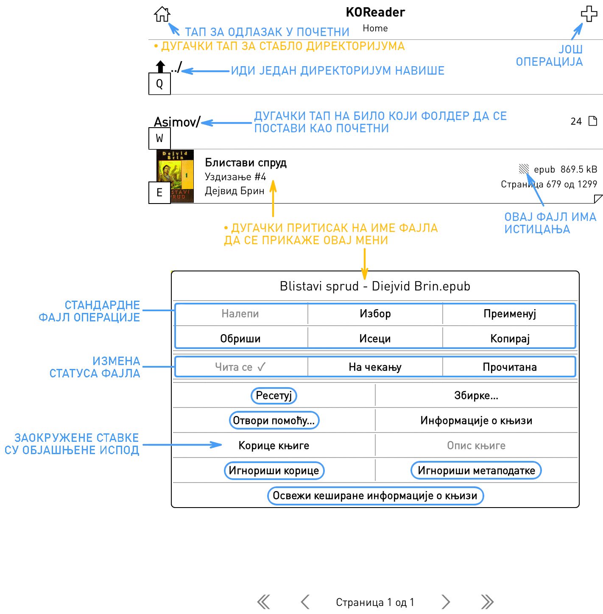
Прегледач фајлова подразумевано приказује ваш ПОЧЕТНИ фолдер, који представља главни фолдер ваше библиотеке. Ово можете да промените дугим притиском на било који фолдер. Можете да промените многе опције прегледача фајлова, као што је начин на који се приказују или сортирају књиге из МЕНИЈА НА ВРХУ који отварате превлачењем наниже у горњем делу екрана.
Испод су објашњене заокружене ставке у слици:
РЕСЕТУЈ: ова опција вам омогућава да ресетујете неке особине документа као што су напредак читања, маркери, произвољна слика омота итд. и које можете да изаберете у наредном дијалогу.
УПОЗОРЕЊЕ Будите веома опрезни када користите ресет дијалог и детаљно проверите које ставке су маркиране, у супротном нехотично можете да ресетујете све у вези са својом књигом.
ОТВОРИ ПОМОЋУ: KOReader поседује различите механизме за исцртавање различитих типова фајлова. У неким случајевима фајл можете да отворите другим механизмом како би добили неке другачије функционалности. Погледајте одељке Приказивање фајлова архиве и Приказивање фајлова слика одмах испод.
ИГНОРИШИ КОРИЦЕ: ако из неког разлога желите да искључите омот за ову књигу (можда поседује погрешни омот или се омот не приказује како треба на e-ink екрану) можете да изаберете ово.
ИГНОРИШИ МЕТАПОДАТКЕ: ако метаподаци ваше књиге нису исправни, поље назива може да приказује бескорисне информације. Изаберите ову опцију да би се уместо метаподатака приказивало име фајла.
ОСВЕЖИ КЕШИРАНЕ ИНФОРМАЦИЈЕ О КЊИЗИ: када је додате у библиотеку, KOReader кешира метаподатке књиге и њен омот. Ако након копирања на уређај извршите неке измене над књигом, може бити потребно да се ове информације освеже. Ако видите погрешан омот или метаподатке, овом ставком менија можете да освежите информације о књизи.
Прегледач фајлова вам омогућава да неке операције (као што је копирање, премештање, брисање, извоз истицања) истовремено извршите над више фајлова. Ова процедура почиње тиме што прво изаберете фајлове. Тренутно постоји три различита начина за избор фајлова над којима ће се извршити масовне операције у прегледачу фајлова:
- У првом методу, извршите дуги притисак на име фајла и изаберите из искачућег дијалога Избор. То ће активирати Режим избора. Сада можете да тапнете на остале фајлове и да их тако додате у избор. Када завршите са избором фајлова, тапните на икону знака штиклирања у горњем десном углу екрана. У дијалогу можете изабрати шта желите да се уради са овим фајловима. Или да из истог дијалога напустите режим избора.
- У другом методу, притисните + (плус) икону у горњем десном углу па у дијалогу тапните на Изаберите фајлове. Ово ће да активира Режим избора и остало је исто као у првом методу описаном изнад.
- У трећем методу, жељене фајлове можете да изаберете Претрагом фајлова. Ово је корисно ако је потребно да се операција изврши над много фајлова који су распоређени у различите фолдере. На пример, ако желите да преместите у нови фолдер све фајлове из своје збирке које је написао Толкин. Кораци за овако нешто би били:
- Из Менија на врху притисните на Картицу претраге (икону лупе) и изаберите Претрага фајлова.
- Штиклирајте опцију Обухвати подфолдере ако желите да се претрага врши и у њима. Ако желите да KOReader претражује и по метаподацима књиге, можете да штиклирате и Такође претражуј и по метаподацима књиге. У супротном, KOReader ће реч коју сте унели тражити само по именима фајлова.
- Претрагу можете да започнете из свог Почетног (кућног) директоријума или Тренутног директоријума притиском на одговарајуће дугме.
- Када се претрага заврши, појавиће се листа фајлова (наравно, само ако је тражени израз пронађен). Сада можете да тапнете на Хамбургер икону у горњем левом углу екрана да уђете у Режим избора.
- Тапните на све фајлове над којима желите да извршите операције и тапните на Икону знака за штиклирање у горњем левом углу екрана. Појавиће се дијалог у којем се налази Изабери у прегледачу фајлова. Тапните на ову опцију.
- Сада се враћате у Прегледач фајлова и фајлови које сте изабрали у Дијалогу претраге ће такође бити изабрани и овде.
- Тапните на Икону знака за штиклирање у горњем десном углу екрана. Сада можете да изаберете шта желите да се уради са фајловима из дијалога.
KOReader вам омогућава да своје омиљене фолдере додате у мени Пречице директоријума којем се брзо приступа. На пример, ако у библиотеци имате директоријум Архивирано под Home>Чланци>Научниc>Архивирано, овом фолдеру Архивирано можете да доделите пречицу и да му касније брзо приђете, чак и док читате књигу.
Додавање пречице директоријума:
Постоје два начина да додате фолдер на листу Пречице директоријума:
- Када се налазите у Прегледачу фајлова, тапните дугме + (плус) мени у десном углу, па затим тапните на ставку Додај у пречице директоријума и унесите описно име ове пречице. Ово додаје фолдер у којем се тренутно налазите.
- Када се налазите у Прегледачу фајлова, урадите дуги притисак на име фолдера тако да се отвори контекстни мени. Тапните на ставку Додај у пречице директоријума и унесите описно име ове пречице. Ово додаје фолдер који сте притиснули.
Директоријуми који се налазе на листи Пречице директоријума ће имати звезду (★) у Прегледачу фајлова.
На исти начин можете да уклоните пречице, дугим притиском на њу и избором Уклони из пречица директоријума.
Приказ пречица директоријума:
Пречице директоријума можете да отворите из Прегледача фајлова или Екрана читања док читате књигу.
- Из Прегледача фајлова: + (плус) мени у горњем десном углу, па избор Директоријумске пречице или доделом гестикулације.
- Из Екрана читања: доделом гестикулације за то.
Налази се у Прегледач фајлова одељку Управљача гестикулацијама. У одговарајућем одељку овог упутства можете да научите како се постављају гестикулације.
Ако имате књиге у .txt формату (што се чешће среће на кинеском и језицима који користе ћирилицу), можете покушати да укључите функцију Аутоматски откриј распоред TXT фајлова. У неким случајевима она може да побољша исцртавање и учини да текст више „личи на књигу”. Када је укључена, механизам за исцртавање ће користити хеуристике (текст обавијен на некој максималној дужини линије, једна или две празне линије означавају пасусе, увлачење или центриран текст се сматра за наслов…) да би погодио како да боље исцрта текст и покуша да креира садржај.
Ову функционалност можете да укључите овде (видљива је само ако читате .txt фајл):
Имајте на уму да би ова функционалност могла да забрља ASCII цртеже и форматирање засновано на карактеру размака. Ако књига коју читате има овакве елементе, можда је боље да се користи подразумевани режим у којем се текст фајл исцртава онакав какав је фонтом фиксне ширине.
KOReader може да чита фајлове сачуване/компресоване у ZIP фајловима. Такође можете да отворите и ZIP, CBZ и EPUB (пошто су и они ZIP архиве) фајлове приказивачем архиве и тако погледате фајлове који се налазе у њима:
- У Прегледачу фајлова урадите дуги притисак на име фајла
- Тапните на Отвори помоћу…
- Тапните на Приказивач архиве
ZIP фајл може да садржи различите типове докумената, као што су html, txt или слике. KOReader може исправно да отвори ваш ZIP фајл само ако му дате назнаку типа фајла који се налази у ZIP архиви. Ако фајлу дате само .zip екстензију, KOReader ће претпоставити да та архива садржи слике и покушаће да је отвори као CBZ фајл.
ПОДРАЗУМЕВАНИ СЛУЧАЈ: имефајла.zip - претпоставља се да је у питању zip фајл слика (и отвара се MuPDF механизмом)
Ако zip фајл садржи један од следећих типова (а не само слике), молимо вас да га назовете на одговарајући начин:
- FictionBook - имефајла.fb2.zip
- HTML - имефајла.htm.zip / имефајла.html.zip
- Text log files - имефајла.log.zip
- Markdown - имефајла.md.zip
- Rich Text Format - имефајла.rtf.zip
- Plain text - имефајла.txt.zip
У случају да фајлови немају оваква имена, највероватније ће се употребити погрешан механизам читача/формата и појавиће се порука За овај фајл не постоји механизам читања или фајл није исправан. Можете да промените име фајла на начин који је описан изнад или да извршите дуги притисак на име фајла и изаберете Отвори помоћу… да изаберете исправни механизам.
Уместо да их отворите као књигу, фајлове слике можете да отворите приказивачем слика. Овако отворени фајлове се не појављују у историји и постоји боља подршка за скалирање и ротирање.
- У Прегледачу фајлова урадите дуги притисак на име фајла
- Тапните на Отвори помоћу…
- Тапните на Приказивач слике
KOReader нуди две опције за читање Markdown докумената.
- Документ можете да отворите директно као књигу, тапом на њега. Овај режим не подржава форматирање. Тако ће ваш .md фајл изгледати као да сте га отворили текст едитором.
- Markdown документ можете да конвертујете у HTML. Ова акција ће да изгради HTML фајл од Markdown документа са исправним форматирањем и креираним Садржајем од наслова.
Ако желите да конвертујете .md фајл, извршите дуги притисак на њега у Прегледачу фајлова и у искачућем менију тапните на Претвори. И истом директоријуму ће се креирати нови фајл са истим именом, али са HTML екстензијом. Имајте на уму да конверзија може потрајати у зависности од Markdown фајла и брзине уређаја.
За типове фајлова које KOReader не препознаје аутоматски, можете такође да подесите и придруживања фајла. Да бисте придружили фајл са једним од KOReader пружаоца услуге, најпре урадите дуги тап на фајл у Прегледачу фајлова па затим изаберите механизам пружаоца услуге који ће да обрађује овај тип фајла. Затим можете да штиклирате:
- Увек користи овај механизам за овај фајл да овај механизам придружите само са овим одређеним фајлом
- Или штиклирајте Увек користи овај механизам за тип фајла да тај пружалац услуге придружите са свим фајловима чија је екстензија иста као и ова
- Из истог дијалога можете да видите придруживања која сте направили тако што тапнете на Прикажи подразумеване вредности за типове фајлова
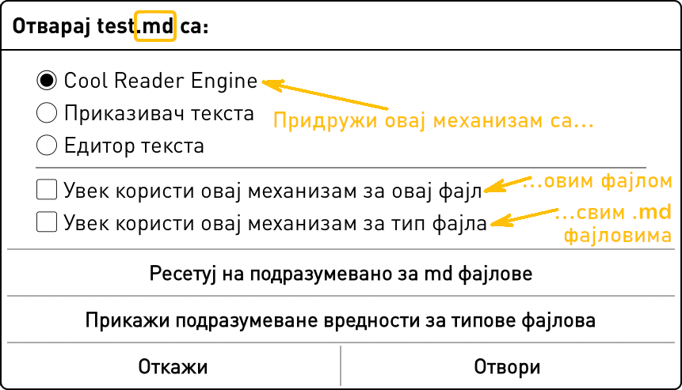
Функционалност KOReader читача Збирке може да вам помогне у ефикаснијем аранжирању библиотеке. Као врло проста дефиниција, збирке су кориснички креиране листе књига. На пример, можете да креирате све збирке по називом Белетристика и Документарна литература и групишете књиге по њима. Наравно, за ово можете да користите и фолдере, али збирке вам омогућавају флексибилнији приступ.
Неке предности збирки у односу на организацију по фолдерима:
- Додавање књиге у збирку не премешта фајл књиге. Тако да се књиге могу налазити у различитим фолдерима, а изгледа да су у истој збирци.
- Једна књига може да се налази у многим збиркама, што није могуће са фолдерима. На пример, можете имати збирке Научна фантастика и Ратна белетристика. Књига истовремено може да се дода у обе ове збирке.
- Збиркама можете да окинете профиле . Ово ћемо објаснити испод ако нисте упознати са KOReader функционалности профила . (Наравно, профиле можете да окинете и фолдерима, али збиркама није потребно да премештате књиге како бисте, на пример, искористили привремене профиле.)
Можете да креирате збирке које опонашају било коју врсту категоризације. Неке идеје за пример:
- Жанрови: Белетристика, документарна литература, мемоари…
- Статус књиге: Тренутно се чита, желим да читам, следећа, незавршене…
- Серије: Господар прстенова, Хари Потер…
- Тип документа: Књиге, научни чланци, веб чланци…
Збирке можете да креирате из дијалога који се налази овде:
Овом дијалогу можете да приступите из погледа читања или из Прегледача фајлова. Када отворите овај мени, приказаће вам листу збирки. Подразумевано ће се ту приказати Омиљено као ставка збирке која садржи књиге које сте већ додали на вашу листу Омиљено.
- Додавање нове збирке: употребите хамбургер мени који се налази у горњем левом углу овог екрана > Нова збирка
- Брисање збирке: дуги притисак на име збирке > Уклони збирку
- Промена назива збирке: дуги притисак на име збирке > Промени назив збирке
- Измена редоследа ваших збирки: употребите хамбургер мени који се налази у горњем левом углу овог екрана > Уреди збирке
У KOReader читачу постоје три места на којима можете да додате књиге у збирке:
1. Из Прегледача фајлова и екрана Историје
Књигу можете да додате у збирке из Прегледача фајлова или екрана Историја. Из екрана Историја можете да додајете књиге једну по једну. Извршите дуги притисак на књигу и изаберите Збирке…. Затим можете да изаберете збирку (или више њих) у коју желите да ставите ову књигу.
Ако додајете неколико књига, урадите то из Прегледача фајлова. Процедура за више књига је следећа:
- Дуги притисак на књигу
- Из искачућег менија изаберите Избор
- Изаберите остале књиге
- У горњем десном углу тапните на икону знака штиклирања (✔️)
- Тапните на Збирке…
Ако додајете само једну књигу, једноставно извршите дуги притисак на њу у Прегледачу фајлова и из искачућег менија изаберите Збирке….
2. Из менија Збирке
Ова метода вам омогућава да додате једну или више књига у Збирке. Највећа разлика у односу на метод Прегледача фајлова је у томе што у збирке можете одједном да додате целе фолдере и њихове подфолдере. Ово је веома корисно ако су вам књиге већ сложене по фолдерима. На пример, ако су све ваше књиге научне фантастике у једном фолдеру, онда креирате збирку под називом Научна фантастика и у једном кораку додате овај фолдер.
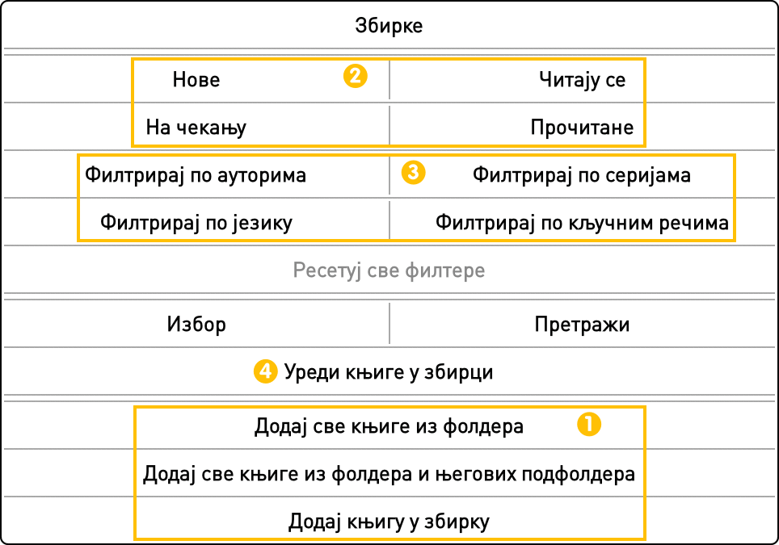
На горњој слици, Поље 1 приказује опције за додавање књиге. Овом менију можете да приступите из хамбургер менија на екрану збирки:
- Додај све књиге из фолдера: као што име каже, ова опција вам омогућава да изаберете фолдер из којег ће се све књиге додати у ову збирку. Имајте на уму да ова опција не додаје књиге из подфолдера изабраног фолдера. На пример, ако изаберете фолдер Белетристика и у њему имате фолдере под именима Научна фантастика и Ратна белетристика, они се неће додати овом опцијом.
- Додај све књиге из фолдера и његових подфолдера: ова опција ће додати све подфолдере фолдера који сте изабрали. Будите опрезни са овом опцијом јер ће док додаје књиге ићи наниже до краја. Тако да ако имате пуно нивоа угњеждених фолдера, може постојати много више књига него што мислите.
- Додај књигу у збирку: ово је основна опција која вам омогућава да додате само једну књигу.
Књиге можете да уклоните из збирки са Прегледача фајлова, екрана Историја или екрана Збирке. У Прегледачу фајлова и екрану Историја, извршите дуги притисак на књигу и изаберите Збирке…. Видећете знак за штиклирање уз збирке у које сте додали ову књигу. Уклоните га тако што тапнете на њега и тако уклоните књигу из те збирке. Такође и из екрана Збирке, извршите дуги притисак на књигу и изаберете Уклони из збирке.
Збирке могу бити попуњене са доста књига, али KOReader вам омогућава да једноставно пронађете жељене књиге тако што вам нуди доста опција за филтрирање. Ако погледате књигу изнад, видећете опције за филтрирање у Пољу 2 и Пољу 3. Поље 2 вам омогућава да књиге филтрате по статусу (нове, чита се, завршене, на чекању), а Поље 3 вам омогућава да књиге филтрирате по метаподацима у књизи (аутор, серија, језик, кључне речи). Такође можете и да комбинујете ове две групе филтера као у следећем примеру: „Прикажи ми нове књиге у овој збирци које је написао Исак Асимов (Филтрирај по аутору -> Исак Асимов) које још увек нисам почео да читам (Филтрирај по статусу -> Нове).”
Метаподатке књиге можете да ажурирате дугим притиском на књигу у Прегледачу фајлова па избором Информације о књизи из менија. У искачућем менију можете да извршите дуги притисак на било које поље и да измените метаподатке као што су аутор или кључне речи. За овај посао такође можете да употребите и Calibre, апликацију треће стране која доста олакшава управљање метаподацима ваше књиге.
Постоје два типа претраге које можете да извршите над збиркама: можете да тражите фразу у насловима књиге и метаподацима или можете такође да тражите и унутар текста књиге. Дијалог претраге можете да отворите из:
Ако желите да извршите претрагу по текстовима књига, молимо вас да имате на уму следеће:
- Ова врста претраге је доступна само ако збирке отворите из прегледача фајлова. Не можете да јој приступите из екрана читања.
- Ова претрага може бити доста спора (око 2 секунде по књизи у збирци). Тако да ако имате велику збирку, претрага може да потраје.
Функција претраге зависи од места на којем се налазите у прозору збирке. Ако се налазите на кореном нивоу на којем се виде све ваше збирке, претрага ће се извршити над свом збиркама. Ако желите да претражујете само у одређеној збирци, морате да тапнете и уђете у збирку. Ово је од посебне важности ако тражите и по текстовима књига јер је то доста спора операција.
Када обавите претрагу, резултати ће се аутоматски сачувати као нова збирка.
Када креирате своје збирке и додате књиге у њих, вероватно ћете пожелети да одржавате у синхронизацији са неким фолдерима. На пример, замислите да сте креирали збирку Научна фантастика. А у библиотеци имате и фолдер SF у који смештате књиге научне фантастике. Ако желите да се збирка научна фантастика самостално ажурира када додате нови фајл у овај фолдер, постићи ћете то уз помоћ функције збирки повезани фолдери.
Помоћу ове функционалности један или више фолдера можете да повежете са својом збирком. Након тога, KOReader ће (поново) скенирати фолдере како би додао или уклонио књиге из збирки под следећим условима:
- Када се фолдер повезује са збирком
- Када се укључује подфолдер повезаног фолдера
- Када се приказује збирка
- Приликом покретања програма
Како да фолдер повежете са збирком:
- Идите на екран Збирке који се види на горњој слици.
- Извршите дуги притисак на име збирке на коју желите да повежете фолдере (1).
- Из искачућег менија изаберите Повежи фолдере (2).
- Отвориће се екран Листа повезаних фолдера.
- Додајте фолдер притиском на ПЛУС икону у горњем левом углу тог екрана, након чега ће се отворити екран Бирача фолдера.
- Поновите последњи корак ако желите да повежете још фолдера.
Збирке са повезаним фолдерима ће имати икону фолдера као што можете видети на горњој слици (3).
Можда ћете пожелети да у синхронизацију укључите и подфолдере фолдера. У кораку 4 изнад, када отворите екран Листе повезаних фолдера, можете да извршите дуги притисак на фолдер и у искачућем менију укључите/искључите подфолдере.
Како да откачите фолдер од збирке:
- Идите на екран Збирке који се види на горњој слици.
- Извршите дуги притисак на име збирке на коју желите да повежете фолдере (1).
- Из искачућег менија изаберите Повежи фолдере (2).
- Отвориће се екран Листа повезаних фолдера.
- Извршите дуги притисак на фолдер који желите да откачите и из искачућег менија изаберите Откачи фолдер.
Збирке можете да користите заједно са KOReader функцијом профила. Ако још увек не знате ништа о профилима, ево описа из нашег одељка Профили:
Профил је у суштини скуп акција које могу да се окину једном гестикулацијом (као макро).
Као пример, замислите да када читате неку врсту књига, увек:
- Ротирате екран у положену оријентацију
- Повећавате величину фонта и контраст и
- Укључујете светло екрана
Уз помоћ додатка профила, све ово можете да извршите одједном, користећи једну акцију.
Профил можете да извршите ручно, али права снага профила може да се ослободи функцијом ауто-извршавања. Помоћу ње можете да окинете профил у зависности од неких услова. Ево линка на одговарајући одељак овог упутства: Ауто-извршавање профила. За сада, овде ћемо објаснити само један услов за окидање: Збирке.
Укратко, можете да креирате профиле и подесите их тако да се аутоматски изврше ако је књига која се отвара у некој одређеној збирци. Неки корисни примери:
- Све манге можете да додате у збирку Манга, направите профил који пребацује смер окретања страница Десно-у-лево и инвертује тапове и превлачења за окретање страница када отворите манга књигу из ове збирке.
- Можете да додате стрипове у збирку, и тако окинете профил који повећава учесталост освежавања на сваку страницу и тиме спречава појаву „духова”.
- Проблематичне PDF фајлове можете да додате у збирку, па када их отворите, профилом се активира Ауто OCR или режим Преслагања.
KOReader може да пресложи PDF документе (ова опција може да се пронађе у менију на дну док читате документ фиксног распореда, као што је PDF) и тако их прилагоди за приказ на e-читачима. Али за најбоље резултате, биће боље да конвертујете своје документе у флексибилнији EPUB формат.
Најчешће коришћене апликације за конвертовање и оптимизацију докумената за преносни уређај за читање су Calibre (фокусирана на EPUB, Kindle) и K2pdfopt (фокусирана на PDF).
Calibre може да конвертује документе између много формата. Такође има и уграђени едитор којим можете да уредите e-књиге (и поправите проблеме) у најпопуларнијим форматима e-књига, EPUB и Kindle.
K2pdfopt оптимизује PDF/DJVU фајлове за мобилне e-читаче и смартфоне. Добро рада на PDF/DJVU фајловима у више колона и може да пресложи текст чак и на скенираним PDF фајловима. Такође може да се користи и као општи алат за PDF манипулацију, који ради копирање/опсецање/измену величине/OCR.
OCRmyPDF је апликација из команде линије која може да дода OCR текст слој скенираним PDF фајловима (који садрже само слике, без текста), чиме се омогућава да се претражују или из њих копира/налепљује текст. Може бити посебно користан за читање старих скенираних књига. Такође може и да оптимизује слике на мању величину фајла.
SingleFile је проширење за интернет прегледач Mozilla Firefox, Google Chrome и Microsoft Edge. Ово проширење омогућава чување веб страница као један .html фајл са уграђеним свим ресурсима (слике, листе стилова, скрипте).
!!! НАПРЕДНО
KOReader чува подешавања и додатне информације у вези са вашим књигама у исти директоријум у којем се налази фајл књиге. Ово зовемо метаподаци који се састоје од:
- Визуелних подешавања књиге
- Напретка читања књиге
- Истицања, маркера и белешки
У скорашњој измени, додали смо нове начине за чување ових метаподатака којима се решавају одређени проблеми у вези са синхронизацијом уређаја. Тренутно постоји три различита метода за чување метаподатака и сваки од њих има своје предности/мане.
Ово подешавање можете да измените из следећег менија:
/ Документ / Локација метаподатака књигеУПОЗОРЕЊЕ Топло саветујемо да пре прављења било каквих измена у потпуности прочитате одељак који следи и разумете разлике и начин на који ради сваки метод. У супротном постоји ризик да изгубите подешавања своје књиге, напредак и белешке.
/ Документ / Локација метаподатака књиге: директоријум са књигамаОво је подразумевани метод који се користи у новој инсталацији KOReader читача. Ако користите овај метод, чим копирате Alice in Wonderland.epub на свој уређај по први пут, у том истом директоријуму у који копирате књигу креираће се фолдер под називом Alice in Wonderland.sdr. Овај директоријум садржи фајлове ваших подешавања, белешке и напредак читања за ову књигу.
Предности
- Можете ручно да правите резервну копију и враћате подешавања за сваку књигу.
- Када вршите синхронизацију директоријума или правите резервне копије системом као што је Syncthing или Dropbox, ваша подешавања ће се синхронизовати заједно са књигама.
- Можете да мењате имена директоријума-родитеља у којима се налазе ваше књиге, то неће збунити KOReader.
Мане
- Ако библиотеку реорганизујете премештањем/изменом имена фајлова књига или њиховог пратећег .sdr фолдера ван прегледача фајлова програма KOReader, изгубићете метаподатке о тим књигама без икаквог упозорења.
- Ови .sdr фолдери ће се видети док прегледате директоријуме своје библиотеке неким другим прегледачем фајлова или компјутером, па то може претрпати приказ.
/ Документ/ Локација метаподатака књиге: .../koreader/docsettingsОвај метод је у суштини исти као подразумевани приказан изнад. Разлика је у томе што се овим методом сви .sdr фолдери ваших књига постављају у један директоријум који се налази унутар главне KOReader структуре директоријума, а не у директоријуму ваше библиотеке, уз фајлове књига.
Предности
- .sdr фолдери књига ће видети и моћи ће да их користи само KOReader. Они неће затрпавати директоријуме ваше библиотеке када је прегледате неким другим прегледачем фајлова или компјутером.
Мане
- Ако библиотеку реорганизујете премештањем/изменом имена фајлова књига или њиховог пратећег .sdr фолдера ван прегледача фајлова програма KOReader, изгубићете метаподатке о тим књигама без икаквог упозорења.
- Пошто се метаподаци књиге неће налазити у фолдерима библиотеке, било каква синхронизација или креирање резервних копија их неће обухватити.
/ Документ / Локација метаподатака књиге: .../koreader/hashdocsettingsОвај метод је сличан претходном у томе што се .sdr фолдери чувају у једном интерном директоријуму. Али овај метод је развијен да се превазиђу ограничења претходног метода. Јер, ако име књиге промените ван KOReader читача (системским управљачем фајловима/читачем уређаја или са повезаног компјутера), име њеног .sdr фолдера се више неће подударати и метаподаци за ту књигу ће бити изгубљени. Ако за операције са фајловима увек користите Прегледач фајлова KOReader читача, ово се аутоматски обрађује, тако да нема последица.
У ХЕШИРАНОМ методу, .sdr фолдери се не идентификују по путањи/имену фајла књиге. Уместо тога, делимични MD5 хеш се користи да се књиге упаре са њиховим подешавањима. Хеш се користи као јединствена идентификација књиге и израчунава се на основу садржаја фајла књиге. Исти тај хеш се користи да именовање њеног .sdr фолдера.
Предности
- .sdr фолдери књига ће видети и моћи ће да их користи само KOReader. Они неће затрпавати директоријуме ваше библиотеке када је прегледате неким другим прегледачем фајлова или компјутером.
- Књигама можете да измените име, премештате их и копирате неким другим прегледачем фајлова или компјутером. KOReader ће наставити да препознаје књиге и након ових операција.
- У овој методи, KOReader свим копијама књиге придружује исти .sdr фолдер, чак и ако се те копије налазе на различитим уређајима. На пример, ако користите Syncthing, овај метод вам омогућава да заједно са фајловима књига синхронизујете и /hashdocsettings фолдер, по многим уређајима који имају инсталиран KOReader читач. Мада су релативне путање тих књига различите на сваком уређају, белешке и напредак ће се ипак синхронизовати по свим вашим уређајима. Ово није могуће постићи осталим методима.
Мане
- Било какве операције које директно мењају фајл (као што је уписивање истицања у PDF фајлове или преузимање са Calibre) ће променити фајл тако да ће се његов MD5 ID променити (за разлику од промене имена или премештања, које представљају сигурне операције за овај метод). У овом случају, KOReader неће моћи да препозна књигу, тако да ће те књиге изгубити своје метаподатке.
- Израчунавање ID вредности може да успори навигацију у Прегледачу фајлова када се прегледају већи директоријуми.
Постоји много врста гестикулација којим можете да контролишете програм KOReader. Неке гестикулације имају ограничења која се тичу места на екрану на којем могу да се користе, као и смерова које подржавају. Ова ограничења су наведена испод.
ТАП / ДВОСТРУКИ ТАП Један или двоструки тап ЈЕДНИМ прстом РАДИ: било где на екрану |
|
|
ТАП И ЗАДРЖАВАЊЕ Један тап и задржавање ЈЕДНИМ прстом РАДИ: само у четири угла |
|
|
ТАП СА ДВА ПРСТА Један тап са ДВА прста истовремено РАДИ: само у четири угла |
|
ШИРЕЊЕ И ШТИПАЊЕ Исто као и зумирање на телефону или таблету. РАДИ: било где на екрану ИНФО У зависности од уређаја који користите, ова гестикулација може радити мање поуздано. У том случају, молимо вас да употребите неку други тип гестикулације. |
|
ПРЕВЛАЧЕЊЕ ЈЕДНИМ ПРСТОМ Покрет превлачења ЈЕДНИМ прстом РАДИ: на ивицама екрана (ХОРИЗОНТАЛНИМ и ВЕРТИКАЛНИМ) Било где осим ивица (ДИЈАГОНАЛНО) |
|
ПРЕВЛАЧЕЊЕ СА ДВА ПРСТА Покрет превлачења са ДВА прста истовремено РАДИ: било где на екрану |
|
МУЛТИПРЕВЛАЧЕЊЕ Више од једног превлачења изведених једно за другим без подизања прста са екрана. На пример, као да се исписује слово U (ДОЛЕ-ДЕСНО-ГОРЕ) РАДИ: било где на екрану |
|
Иконе израдио Econceptive из Noun Project |
Следећа табела приказује гестикулације које се испоручују уз KOReader читач. Можете по жељи да их измените из:
/ Управљач гестикулацијамаГорњи леви угао > Укљ./искљ. окретања странице
Горњи десни угао > Укљ./искљ. маркера
Супротни дијагонални углови, истовремено > Прављење снимка екрана
Лева страна > Иди -10 страница
Десна страна > Иди +10 страница
Кратко дијагонално превлачење > Освежавање целог екрана
Дугачко дијагонално превлачење > Креирање снимка екрана
- Назад на претходну локацију
- Иди на најновији маркер
- Прелети по документу
- Маркери
- Садржај
- Прикажи дијалог предњег светла
- Укљ./Искљ. преслагање текста
- Историја
- Статус књиге
- Иди на страну
- Назад
- Претходно поглавље
- Наредно поглавље
- Отвори претходни документ
- Омиљено
Ово је листа свих акција које можете да доделите гестикулацијама употребом менија Управљач гестикулацијама. За претрагу акција овде можете да употребите функцију претраге интернет прегледача (углавном је то Ctrl+F). Ове акције такође могу да се употребе и у Брзом менију. За више информација, молимо вас да погледате одговарајући одељак упутства.
- Прегледач фајлова
- Отвори претходни документ
- Историја
- Претрага историје
- Омиљено
- Збирке
- Претрага збирки
- Претрага по речнику
- Упит Википедије
- Прикажи мени
- Претрага менија
- Отвори наредни фајл у последњем директоријуму књига
- Отвори претходни фајл у последњем директоријуму књига
- Фајл бележнице
- Снимак екрана
- Прикажи ефемериде
- Претрага Calibre метаподатака
- Прегледај све calibre ознаке
- Прегледај све calibre серије
- Прегледај све calibre ауторе
- Прегледај све calibre наслове
- Бежично повезивање са Calibre
- Прекид бежичне везе са Calibre
- Статистика читања: укљ./искљ.
- Статистика читања: приказ напретка
- Статистика читања: приказ временског периода
- Статистика читања: приказ календара
- Статистика читања: приказ данашње временске линије
- Статистика читања: синхронизација
- Едитор текста: отвори последњи фајл
- Отвори изграђивач речника
- Wallabag добављање
- Wallabag отпремање реда
- Wallabag отпремање статуса
- Напредак читања
- Укљ./Искљ. SSH сервер
- Календарски приказ статистике
- Данашња временска линија статистике
- Синхронизација статистике књиге
- Напусти екран спавања
- Поново покрени KOReader
- Напусти KOReader
- Укљ./Искљ. дуге притиске на углове
- Укључи унос додиром
- Искључи унос додиром
- Укљ./Искљ. унос додиром
- Обрни дугмад за окретање странице
- Ротација
- Укљ./Искљ. оријентацију
- Обрни ротацију
- Ротирај за 90 у десно
- Ротирај за 90 у лево
- Укљ./Искљ. приказ у пуном екрану
- Прикажи информације о мрежи
- Статистика батерије
- Статистика система
- Емулатор терминала
- Покрени USB складиште
- Суспендуј
- Поново покрени уређај
- Искључи
- Укљ./Искљ. понављање тастера
- Укљ./Искљ. акцелерометар
- Укључи Wi-Fi
- Искључи Wi-Fi
- Укљ./Искљ. Wi-Fi
- Прикажи дијалог предњег светла
- Укљ./Искљ. предње светло
- Постави осветљај предњег светла
- Повећај осветљај предњег светла
- Смањи осветљај предњег светла
- Постави топлину предњег светла
- Повећај топлину предњег светла
- Смањи топлину предњег светла
- Укљ./Искљ. ноћни режим
- Постави ноћни режим
- Освежавање целог екрана
- Пуна учесталост освежавања (увек)
- Пуна учесталост освежавања (ван ноћног режима)
- Пуна учесталост освежавања (у ноћном режиму)
- Увек трепни на границама поглавља
- Укљ./Искљ. трептање на границама поглавља
- Никад не трепћи на другој страници поглавља
- Укљ./Искљ. трептање на другој страници поглавља
- Увек трепћи на страницама са сликама
- Укљ./Искљ. трептање на страницама са сликама
- Искључи аутоматску топлину
- Аутоматска топлина користи позицију Сунца
- Аутоматска топлина користи распоред
- Аутоматска топлина користи близину поноћи
- Аутоматска топлина користи близину поднева
- Аутоматска топлина кружи по режимима
- Фонт
- Увећај величину фонта
- Смањи величину фонта
- Величина фонта
- Размак између речи
- Експанзија речи
- Контраст
- Тежина фонта
- Хинтовање фонта
- Кернинг фонта
- Две колоне
- Л/Д маргине
- Синхронизуј Г/До маргине
- Горња маргина
- Доња маргина
- Режим погледа (непрекидне странице)
- Режим исцртавања
- Зумирање
- Проред
- Алтернативна статусна линија
- Уграђени стил
- Уграђени фонтови
- Скалирање слике
- Инверзија слика
- Постави режим приказа
- Сортирај по
- Обрнуто сортирање
- Директоријуми и фајлови измешани
- Прикажи плус мени
- Укљ./Искљ. режим избора
- Освежи садржај
- Пречице фолдера
- Претрага фајлова
- Резултати последње претраге фајла
- Директоријум навише
- Иди на страну
- Натраг
- Извези све белешке у свим књигама из историје
- Каталог типа OPDS
- Прикажи мени на дну
- Укљ./Искљ. статусну линију
- Укљ./Искљ. траку напретка поглавља
- Претходно поглавље
- Наредно поглавље
- Прва страница
- Последња страница
- Насумично изабрана страница
- Окрећи странице
- Иди на страну
- Прелети по документу
- Претходни маркер
- Наредни маркер
- Први маркер
- Последњи маркер
- Најновији маркер
- Натраг
- Натраг на претходно место
- Напред на наредно место
- Прати најближи линк
- Прати најближи унутрашњи линк
- Додај текуће место на историју локација
- Обриши историју локација
- Претраживање комплетног текста
- Резултати последње претраге комплетног текста
- Садржај
- Мапа књиге
- Мапа књиге (преглед)
- Прегледач страница
- Маркери књиге
- Претрага маркера
- Укљ./Искљ. маркер
- Статус књиге
- Информације о књизи
- Опис књиге
- Корице књиге
- Преведи текућу страну
- Обрни тапове и превлачења за окретање странице
- Мењај смер окретања страница
- Укљ./Искљ. произвољни садржај
- Укљ./Искљ. произвољних скривених токова
- Постави акцију истицања
- Кружи по акцијама истицања
- Кружи по стиловима истицања
- Сачувај метаподатке књиге
- Извоз белешки
- Извези све белешке у текућој књизи
- Извези све белешке у свим књигама из историје
- Премести текућу књигу у архиву
- Статистика читања: текућа књига
- Гурај напредак са овог уређаја
- Повлачи напредак са других уређаја
- Укљ./Искљ. окретање страница
- Укљ./Искљ. окретање маркера
- Укљ./Искљ. преслагање текста
- Режим зумирања
- Промени фактор зумирања
- Укљ./Искљ. зумирање табле
- Опсецање странице
- Маргина
- Хоризонтално преклапање
- Вертикално преклапање
- Уклопи
- Зумирај на
- Број колона/редова за дељење странице
- Зум фактор
- Смер
- Режим приказа
- Размак између страница
- Проред
- Поравнање
- Величина фонта
- Промени величину фонта
- Размак између речи
- Преслагање
- Контраст
- Уклањање воденог жига
- Квалитет исцртавања
- Језик документа
- Форсирани OCR
- Смер писања
- Колоне документа
- Аутоматско исправљање
Ако имате уређај са тастатуром, као што су Kindle 2 и Kindle 3, укључујући Bluetooth тастатуре и емулаторе, моћи ћете да за контролу KOReader читача користите тастере тастатуре и дугмад уређаја. Подржан је и Kindle 4 којем недостаје пуна тастатура, мада ипак има довољно тастера да буде употребљив у овом контексту. На овим уређајима, KOReader ће укључити додатни мени који се зове Пречице тастатуре и којем можете да приступите одавде:
/ Навигација / Физички тастери / Пречице тастатуреОвај мени веома личи на интерфејс Управљача гестикулацијама. У њему:
- Можете да видите пречице доступне на вашем уређају
- Можете да видите предефинисане акције за неке пречице
- Можете да доделите акције доступним пречицама
Све акције у Управљачу гестикулацијама су такође могу да се доделе и пречици тастатуре. То значи да овим пречицама можете да контролишете скоро све функције KOReader читача.
У табели испод можете да видите подразумеване доделе тастерима и пречицама:
ИНФО Универзални тастер за снимак екрана је Alt + Шифт + G. Доступан је на свим екранима, режимима и платформама. На Kindle 4, то је Keyboard + Menu.
ИНФО Ако имате Kindle 4, ШИФТ тастер у табели испод је мапиран на ваш тастер KEYBOARD. Тако да су на Kindle 4 пречице Шифт + (ГОРЕ/ДОЛЕ/ЛЕВО/ДЕСНО) мапиране на Keyboard тастер + (ГОРЕ/ДОЛЕ/ЛЕВО/ДЕСНО) .
Режим Прегледача фајлова | |
| Отвори мени на врху | F1 |
| Иди на кућни фолдер | Home |
| Премести у листи фајлова | Горе / Доле |
| Отвори изабрану књигу | Ентер |
| Напусти апликацију | Esc |
Режим читања | |
| Отвори мени на врху | F1 |
| Отвори мени на дну | Ентер |
| Назад/напусти апликацију | Esc |
| Маркери књиге | Шифт + Лево |
| Укљ./Искљ. маркер | Шифт + Десно |
| Претрага по речнику | Ctrl + D (Alt + D на Kindle уређајима) |
| Упит Википедије | Ctrl + W |
| Претраживање комплетног текста | Ctrl + S |
| Претраживање фајлова | Ctrl + F |
Линкови | |
| Изабери линк на наредну страницу | Tab |
| Изабери линк на претходну страницу | Шифт+Tab |
| Отвори изабрани линк | Ентер |
Приказивач слика (дуги притисак на слику) | |
| Повећај зум | Page Down |
| Смањи зум | Page Up |
Истицање | |
| Уђи у режим истицања | H |
| Покрени/заустави истицање | Ентер |
| Помери индикатор истицања | Лево/Десно Горе/Доле |
| Померај индикатор брже | Шифт + Лево/Десно/Горе/Доле |
| Напусти режим истицања | Esc |
Кретање кроз књигу | |
| Окретање странице | Лево-Десно / Горе-Доле Page Up-Page Down |
| Садржај | Шифт + Up |
| Мапа књиге | Шифт + Доле |
| Иди на почетак | 1 |
| Иди на 11% књиге | 2 |
| Иди на 22% књиге | 3 |
| Иди на 33% књиге | 4 |
| Иди на 44% књиге | 5 |
| Иди на 55% књиге | 6 |
| Иди на 66% књиге | 7 |
| Иди на 77% књиге | 8 |
| Иди на 88% књиге | 9 |
| Иди на крај | 0 |
У дијалогу Прелетање по документу | |
| Иди на почетак | Q |
| Иди на 11% књиге | W |
| Иди на 22% књиге | E |
| Иди на 33% књиге | R |
| Иди на 44% књиге | T |
| Иди на 55% књиге | Y |
| Иди на 66% књиге | U |
| Иди на 77% књиге | I |
| Иди на 88% књиге | O |
| Иди на крај | P |
Зумирање странице Само за PDF, DJVU и слике | |
| Зумирај по страници | A |
| Зумирај по ширини странице | S |
| Зумирај по висини странице | D |
| Зумирај по садржају | Шифт + A |
| Зумирај по ширини садржаја | Шифт + S |
| Зумирај по висини садржаја | Шифт + D |
Брзи мени је новија функционалност KOReader читача која вам омогућава да имате персонализовани мени којем брзо можете да приступите као на слици за пример испод. Овај мени можете да доделите гестикулацији и да му приступите једним превлачењем. Мени чак може да буде и дужи од висине екрана, може да се скролује.
У суштини, било која акција која може да се додели гестикулацији може да се дода и у Брзи мени. Његове предности су следеће:
- Нема потребе да памтите много гестикулација за сваку акцију.
- Неке акције које се ретко извршавају не заслужују да им се додели гестикулација, али је потребно доста кретања да се пронађу у систему менија. Уместо тога, овакву врсту ређе коришћених акција можете да додате у овај мени.
- Ако KOReader инсталирате рођаку или пријатељу, њихове омиљене акције можете да додате у овај мени, па они уопште не морају да одлазе у систем менија док користе KOReader.
Пример Брзог менија:
Постоје два метода за креирање Брзог менија: Једноставни и Напредни. Ако вам је потребан само један мени, биће вам довољан Једноставни метод. Ако желите да различите гестикулације отварају различите меније, морате да користите Напредни метод. Још једна предност Напредног метода је једноставније поновно додељивање гестикулације. Ако желите да промените гестикулацију за свој мени, једноставно можете да га преместите у неку другу гестикулацију Напредним методом. Ако желите да користите другу гестикулацију док употребљавате Једноставни метод, мораћете поново да креирате свој мени под новом гестикулацијом.
- Идите на мени Управљач гестикулацијама из:
МЕНИ НА ВРХУ / / Тапови и гестикулације / Управљач гестикулацијама
- Одлучите коју гестикулацију желите да користите за отварање Брзог менија и тапните на њу.
- У менију конфигурације гестикулације изаберите акције које желите да видите у Брзом менију. Наравно, можете да изаберете више акција одједном.
- Када изаберете све акције, наложићете програму KOReader да ову гестикулацију третира као мени. То постижете укључивањем ставке Прикажи као Брзи мени на другој страници, као што можете да видите на слици испод.
- Ставке менија можете да сортирате опцијом Сортирај одмах испод ње.
Сада свој мени можете отворите изабраном гестикулацијом. Ако желите да измените ставке менија, можете да отворите страницу гестикулације и да додате/уклоните ставке.
Брзи мени је у суштини Профил који се на екрану појављује као мени. Тако да најпре морате да научите нешто о Профилима. Ако већ знате како да их користите, наставите да читате, а у супротном прескочите на наслов Профили (наредни одељак), креирајте Профил са неким ставкама, па се вратите овде.
Пре него што наставимо, претпостављамо да се већ креирали Профил као што смо вам саветовали у претходном пасусу. Сада ћемо да претворимо наш Профил у Брзи мени.
1. Идите у свој нови Профил и укључите Прикажи у листи акција (приказано на слици испод). На овај начин ће се ваш Профил видети у Управљачу гестикулацијама. Такође укључите Прикажи као Брзи мени (такође на слици испод) тако да се ваш профил прикаже као мени, а не да се изврши без било каквих порука.
2. Сада нам је потребан начин за приступ том менију. Идите у Управљач гестикулацијама и изаберите из листе гестикулацију која ће се доделити менију. Рецимо да хоћемо да тап на угао екрана прикаже мени. Сада тапните на Тап на угао па изаберите Доле лево. Затим тапните на Опште и пређите на другу страницу. Свој профил ћете пронаћи као Профил x где је x име које сте дали овом Профилу. Тапните на његово поље за потврду да овај профил доделите гестикулацији.
Након свих ових корака, требало би да видите свој мени када тапнете на доњи леви угао. Мени можете да уредите тако што одете на његову страницу Профила и тамо додате или уклоните ставке. Такође постоји и ставка Сортирај по где можете да измените редослед ставки у свом менију.
Као што смо рекли, Брзи мени је у суштини Профил. То значи да постоји могућност да имате више менија. Ако желите, можете да креирате још један Профил и да пратите исте кораке да креирате још један мени.
Обично када изаберете ставку у Брзом менију, он нестаје са екрана. Понекад желите да мени остане отворен након избора ставке. На тај начин можете да измените подешавања као у следећим примерима:
- Инкременталне измене, као што је повећање/смањивање осветљаја, већа/мања величина фонта, претходне/наредне странице или поглавља, итд.
- Група опција коју активирате једну за другом (али не истовремено), као што је укључивање wifi па затим покретање SSH сервера
Ову опцију можете да укључите из следећег менија ако сте Брзи мени направили користећи Управљач гестикулацијама (једноставну методу):
/ Тапови и гестикулације/ Управљач гестикулацијама / „Ваша гестикулација Брзог менија” / Држи Брзи мени отворенИли из следећег менија, ако сте Брзи мени изградили из Профила – (напредни метод):
/ Профили / „Ваш профил Брзог менија” / Уреди акције/ Држи Брзи мени отворенОбично се Брзи мени отвара центриран на средини екрана. Ако е-читач користите једном руком, можете да активирате подешавање које ће мени отворити на позицији гестикулације. На овај начин ће се мени појавити ближе вашем прсту и лакше ћете му приступити. Да бисте користили ову функцију, укључите следећу опцију:
/ Тапови и гестикулације/ Управљач гестикулацијама / „Ваша гестикулација Брзог менија” / Усидри позицију Брзог менија на позицију гестикулацијеПрофил је у суштини збирка акција које могу да се окину једном гестикулацијом (као макро).
Као пример, замислите да када читате неку врсту књига, увек:
- Ротирате екран у положену оријентацију
- Повећавате величину фонта и контраст и
- Укључујете светло екрана
Уз помоћ додатка профила, све ово можете да извршите одједном, користећи једну акцију.
Ако желите да креирате профил, најпре проверите да ли је активиран додатак Профили. Ако га не видите у:
/ Профилионда ћете морати да га активирате у:
/ Још алата / Управљање додацимаУ менију Профили тапните на Нови и дајте неко описно име профилу. Сада би у менију требало да видите ваш нови профил. Тапните на њега и видећете екран приказан на левој страни. Из овог менија такође можете да Обришете, Промените име или Дуплирате профил.
Када тапнете на ставку менија Уреди акције приказаће се мени са десне стране. Ово је исти мени као онај за избор гестикулације и ту постоје акције груписане у многе категорије. То значи да можете да извршите било коју акцију Гестикулације користећи Профил.
Из свих ових категорија можете да изаберете више ставки. Када активирате овај профил, извршиће се све те акције.
Постоји много начина на које можете да активирате профил:
- Профил можете да активирате дугим притиском на његово име из истог менија Профили
- Профил можете да активирате гестикулацијом. Да бисте то урадили, из менија жељеног профила морате да укључите Прикажи у листи акција. Сада можете да га изаберете из:
МЕНИ НА ВРХУ / / Тапови и гестикулације / Управљач гестикулацијама / „БИЛО КОЈА ГЕСТИКУЛАЦИЈА” / Опште / Профил „Име вашег профила”
- Профил можете да активирате и аутоматски у зависности од одређених услова. Погледајте наредни наслов да научите како се користи ова моћна функционалност.
Профил можете да покренете ручно, али стварна снага профила може да се искористи употребом њихове функције ауто-извршавања. Помоћу тога профил можете да окинете у зависности од неких услова и подуслова:
| Окидач | Подуслови |
| Приликом покретања KOReader-а Покреће овај профил сваки пут када се KOReader покрене. Имајте на уму да је ово могуће само када се KOReader покреће са Прегледачем фајлова или Последњим фајлом. | - |
| Приликом буђења Покреће овај профил сваки пут када се уређај пробуди | - |
| Приликом ротације Покреће овај профил када се екран ротира на изабрану ротацију (или више њих). Примери: промени на распоред у две колоне када се уређај ротира на положено. Активирај ноћни режим када се уређај ротира за 180 степени. |
|
| Приликом приказивања директоријума Покреће овај профил када у прегледачу фајлова уђете у овај фолдер. Овај окидач можете употребити да промените режим приказа прегледача фајлова. На пример, када уђете у одређени фолдер режим приказа можете да промените са мозаик на детаљни view. |
|
| Приликом отварања књиге
Овај окидач се извршава када отворите књигу (и по жељи) у комбинацији са одређеним подусловом. Прва 4 подуслова се комбинују ИЛИ, тако да било који од њих окида извршавање профила. |
|
| Приликом затварања књиге
Ова опција је иста као она изнад, али окида када затворите књигу. На пример, ово можете да користите за укључивање/искључивање статистике читања када отварате одређена документа и да их тако изузмете из своје статистике. |
|
Примери профила:
Ево неких примера профила које су урадили наши програмери, помоћу којих можете да стекнете идеје у вези са употребом ове моћне функције KOReader читача. Примери такође укључују и функције услова ауто-извршавања и збирки:
- Укључи режим приказа у све колоне када уређај поставите у положену оријентацију.
- Укључи ноћни режим када уређај окренете наопако.
- Додајте све своје манге у збирку. Затим креирајте профил који пребацује смер окретања странице на Десно-у-лево и инвертује тапове и превлачења за окретање станице када отворите манга књигу из ове збирке.
- Додајте стрипове у збирку, чиме окинете профил који повећава учесталост освежавања на сваку страницу и тиме спречава појаву „духова”.
- Окида се профил који подешава фонт, величину фонта и поставља режим у две колоне када се по први пут отвара фајл из фолдера Периодика.
- Додајте своје проблематичне PDF фајлове у збирку, па када их отворите, профилом се активира Ауто OCR или режим Преслагања.
- Пребацује се режим приказа (омоти, детаљна листа итд.) прегледача фајлова када уђете у одређене фолдере.
- Када отварате књигу из збирке Референтне књиге, искључује се статистика читања. Када је затворите, статистика се поново укључује.
- Ако изложите дотеривања стила у управљачу гестикулацијама, можете да креирате профил који их у зависности од неких услова укључује или искључује. На пример, можете на основу локације књиге/збирке или на основу кључне речи у метаподацима књиге да окинете профил „искључи стилове издавача И примени моја корисничка дотеривања стила”. За више информација, погледајте одељак овог упутства, дотеривања стила.
!!! НАПРЕДНО
У програму KOReader имамо скуп акција/подешавања и тај скуп може да се креира на два начина:
- Као профил (што је објашњено као Напредни метод и чува се у settings/profiles.lua)
- Као листа акција придружена гестикулацији (што је објашњено као Једноставни метод и чува се у settings/gestures.lua)
Овај скуп такође може да се изврши на два различита начина:
- Примењивањем сваке акције по (уређеном) редоследу онда када се окине (као Профил)
- Тако што се прикаже као Брзи мени
Додавање/уклањање акција из скупа и укључивање/сортирање Брзог менија се врше из истог менија акција. Једина разлика је у томе што мени акција у Управљачу гестикулацијама има две додатне ставке (Прођи), па је то разлог што су ставке Прикажи као Брзи мени и Сортирај на другој страници.
ИНФО Можете да направите резервну копију својих профила и да их пренесете на други уређај. Молимо вас да погледате одељак Направите резервну копију KOReader подешавања.
Додаци су мали KOReader програми слични додацима интернет прегледача који проширују могућности основног програма. KOReader има 3 категорије додатака:
Интерни додаци су део језгра програма.
- Њима се директно приступа из KOReader менија додатака.
- Нема потребе да се инсталирају. Можете да их укључите из истог менија.
- Њих проверавају наши програмери, тако да се сматрају безбедним.
- Они се аутоматски ажурирају када ажурирате програм KOReader.
Можете да их укључите/искључите из:
/ Још алата / Управљање додацима!!! НАПРЕДНО
Ова група садрже незваничне додатке који нису део основне логике програма KOReader.
- Морају ручно да се инсталирају, па да се активирају из менија додатака.
- Требало би да се ажурирају ручно.
- Наши програмери их проверавају у тренутку додавања у наш репозиторијум тако да се сматра да су безбедни.
Можете да им приступите са ове странице. У општем случају, они се инсталирају преузимањем директоријума додатка са наведене странице и копирањем у koreader/plugins фолдер на уређају. Али молимо вас да погледате страницу додатка јер могу да постоје и додатна упутства.
!!! НАПРЕДНО
Ови додаци се развијају независно од KOReader тима.
- Морају ручно да се инсталирају, па да се активирају из менија додатака.
- Требало би да се ажурирају ручно.
- Наши програмери их НЕ проверавају, па имајте на уму да може постојати ризик приликом њихове употребе.
Неки угледни примери ових спољних додатак са линковима на њихове GitHub странице:
- AskGPT додатак: можете да постављате питања ChatGPT-ју у вези са деловима ваше књиге. Овај додатак такође можете да употребите за поједностављивање, дискусију или превођење текста на друге језике.
- Assistant: додатак AI помоћника: рачва претходног додатка са напреднијим функцијама као што су вишеструки пружаоци AI услуге и уграђени/произвољни упити.
- Anki додатак: KOReader додатак који омогућава Anki (софтвер отвореног кода за флеш картице) генерисање картица за речи потражене у интерном речнику.
- Zotero додатак: овај додатак вам омогућава да прегледате ваше Zotero (софтвер отвореног кода за управљање референцама) збирке из KOReader читача.
- Syncthing додатак: овај додатак вам омогућава да унутар KOReader читача извршавате Syncthing, програм за директну синхронизацију фајлова (тестиран само на Kobo уређајима, али би, према аутору, могао да ради и на осталим уређајима). Помоћу њега аутоматски можете да синхронизујете фајлове између e-читача и компјутера/телефона.
Такође можете да кликнете на овај линк да отворите страницу претраге на сервису Github да откријете још пројеката KOReader додатка.
Аутоматско предње светло - Аутоматски укључује/искључује предње светло у зависности од количине амбијенталног светла (доступно само на Kindle Voyage и Oasis)
Аутоматска топлина и ноћни режим - Омогућава да се подеси топлина предњег светла на уређајима са природним (жутим/наранџастим) светлом и да се аутоматски према распореду укључује Ноћни режим
Аутоматско чување енергије - Поставља уређај у режим спавања, суспензије или га искључује, након задатих периода неактивности
Аутосуспензија - Суспендује уређај након изабраног периода неактивности (доступно на свим e-ink уређаја осим на андроид оперативном систему)
Аутоматско окретање - Аутоматски окреће страницу након постављеног временског периода
Покретач у позадини - Сервис за остале додатке: омогућава да се задаци редовно покрећу у позадини.
Статистика батерије - Сакупља и приказује статистику употребе батерије на уређају
Пречице књиге - Омогућава да се пречица књиге додели гестикулацији
Calibre - Документе из ваше Calibre библиотеке можете директно да пошаљете на своје KOReader уређаје преко WiFi везе. За начин на који се користи, погледајте вики страницу.
Прегледач корица - Омогућава режиме приказа корица за прегледач фајлова и историју
Слика корица - Чува слику омота текуће књиге у фајл (доступно на Android/PocketBook/reMarkable уређајима)
Извези истицања - Извози истицања и белешке у локалне фајлове или на Joplin (апликацију за узимање белешки)
Тренер флеш картицама - Приказује картице користећи размакнуто понављање (SM2) или истицање из ваше библиотеке
Гестикулације - Омогућава подршку за гестикулације у програму KOReader
HTTP инспектор - Омогућава вам да контролишете уређај са неког другог уређаја преко wifi мреже - За више информација, погледајте испод
Подршка за јапански језик - KOReader подршка за јапански језик која проширује систем избора и уграђени речник
Одржавај будност - Одржава уређај будним да би се спречило аутоматско прекидање везе са WiFi мрежом
Премести у архиву - Премешта текући документ у фолдер архиве
Преузимач вести - Преузима RSS и Atom ставке вести и чува их као HTML фајлове. За начин коришћења, погледајте нашу вики страницу.
OPDS - Омогућава да преузимате књиге из мрежних каталога
Проширивач перцепције - Омогућава вам да користите периферни вид и тако убрзате читање. Погледајте следећи YouTube видео да видите на који начин функционише: How to Triple Your Reading Speed in 20 Minutes (Tim Ferriss)
Профили - Омогућава комбиновање више подешавања и креирање профила који могу да се укључују
Синхронизација напретка - Синхронизује ваш напредак читања по различитим KOReader уређајима. За начин употребе, погледајте нашу вики страницу.
QR из клипборда - Генерише QR кôд из садржаја клипборда
Тајмер читања - Одбројавајући тајмер који након дефинисаног времена приказује поруку
Статистика читања - Израчунава статистику сесије читања и брзину читања која се користи за процене преосталог времена до завршетка поглавља/књиге
SSH - Омогућава да уређају приступите користећи SSH протокол. Можете да употребите FTP апликације или чак свој менаџер фајлова ако подржава SSH. За начин употребе, погледајте нашу вики страницу.
Статистика система - Информације о CPU/RAM/БАТЕРИЈИ можете да погледате помоћу овог додатка под:
Емулатор терминала - Покреће љуску (командни одзив) на уређају тако да можете да покренете комплетне терминалске апликације
Текст едитор - Прости текст едитор за креирање и уређивање чистих текст фајлова
Синхронизација времена - Синхронизује време уређаја са NTP серверима
Подешавања дотеривања документа - Омогућава дотеривање подешавања документа у зависности од спољних фактора пре него што се учита
Wallabag - Преузима најновије чланке са Wallabag сервера као посебне EPUB фајлове. За више информација погледајте нашу вики страницу.
!!! НАПРЕДНО
Овај додатак вам омогућава да свој уређај контролишете са неког другог уређаја преко wifi мреже. Функционише тако што вашем уређају покреће једноставни HTTP сервер који сервира страницу са KOReader контролама. Овој страници можете да приступите преко мреже и тако контролишете свој уређај читача. Али пазите се следећих ствари док користите овај додатак:
- Ово је експериментални додатак, користите га на сопствени ризик
- Овај додатак је подразумевано укључен, али се сервер НЕ покреће подразумевано. Можете ручно да га покренете или да га поставите на ауто старт.
- Овај додатак би требало да извршавате само на мрежама којима верујете, јер је веома небезбедан (нема HTTPS, нема ограничења приступа, нема потврде идентитета)
Пример случаја употребе овог додатка можете да прочитате на MobileRead форуму
!!! НАПРЕДНО
Корисничке закрпе су мали фајлови написани на Lua језику. Они могу да измене функционалност програма KOReader без трајне измене ваше инсталације. Могу да их напишу програмери, остали корисници, или то сами можете да урадите (ако поседујете неопходно широко знање о начину на који функционише KOReader).
Текућу листу Корисничких закрпа можете да пронађете на нашем викију и у GitHub листи проблема означеним ознаком User patch available. Можете их видети ако следите овај линк.
- Креирајте директоријум који се зове patches унутар koreader директоријума на свом уређају (на Андроиду се овај фолдер налази на SD-картици)
- Преузмите фајл закрпе са .lua екстензијом и поставите га у овај patches директоријум
- Поново покрени KOReader
Када креирате директоријум закрпа као што је објашњено, у менију додатака се након поновног покретања програма KOReader појављује нови додатак под именом Управљање закрпама. Овим додатком можете да видите листу и статус својих корисничких закрпа и можете да их укључите/искључите. За више информација можете да тапнете на ставку менија О управљању закрпама.
Редослед извршавања закрпе одређују прва цифра броја у имену закрпе. На пример: 2-TOC-title-patch.lua Ако постоји неколико закрпа које почињу истом цифром, редослед извршавања је природни (1<10<11<12<13<…<109<…<10010). Ако само преузимате већ урађену закрпу, нема потребе да јој мењате име.
Имена која почињу са:
- 0 - Извршавају се врло рано и само једном након ажурирања
- 1 - Извршавају се врло рано приликом сваког покретања програма KOReader (али након 0, ако постоји)
- 2 - Извршава се након што је спреман UIManager приликом сваког покретања програма KOReader
- 3-7 - Резервисано
- 8 - Извршава се пре напуштања програма и пре него што се сачувају подешавања
- 9 - Извршава се непосредно пре напуштања програма
Ако имате проблема са корисничком закрпом, можете да се вратите на претходну конфигурацију тако што обришете фајл закрпе.
Ако је потребно да пређете са једног на други документ (на пример, када их поредите), постоји бржи начин од проласка кроз Прегледач фајлова. KOReader гестикулацијом може да отвори последњи документ ( мултипревлачење). Ако акцију гестикулације дефинишете као Отвори претходни документ, брзо ћете моћи да се пребацујете између два документа, слично као са Alt+Tab функцијом на десктоп компјутерима. Ову функционалност можете да пронађете у:
/ Тапови и гестикулације / Управљач гестикулацијама / „БИЛО КОЈА ГЕСТИКУЛАЦИЈА” / Опште / Отвори претходни документЗа брзи прелазак између докумената такође можете да користите и дијалог Историја. Екран историје може да се отвори гестикулацијом мултипревлачења. Наравно, за ово можете да дефинишете и било коју другу гестикулацију.
Из следећег менија можете да измените слику омота књиге:
Неке књиге немају праве омоте. Или можда имају омот на другој страници, па се онда не приказује како треба. Или омот можда није погодан за e-ink екране (сувише је светао или таман). Или вам се као омот више свиђа нека слика из књиге.
У таквим ситуацијама брзо можете да направите снимак екрана и да га поставите као омот књиге. Подразумевана гестикулација за снимак екрана је дугачко дијагонално превлачење. Снимак екрана ће такође да направи и додиривање супротних дијагоналних углова. Ову другу пречицу можете да употребите када се приказује слика. Када направите снимак екрана из дијалога можете да изаберете Постави као омот књиге.
Овде можете да уклоните овај произвољни омот књиге:
На страници информација о књизи извршите дуги притисак на ставку Слика корица па изаберите Ресетуј произвољно.
Омот књиге такође можете да ресетујете дијалогом Ресетуј, којем приступате дугим притиском на име фајла у Прегледачу фајлова.
Ако документ поседује линкове, па док окрећете странице или користите гестикулације случајно тапнете на њих, из следећег менија можете да искључите Одлазак на линкове тапом:
/ Тапови и гестикулације / Линкови / Тапните да следите линковеКада искључите ово подешавање, на линк можете да одете ако над њим извршите дуги тап и из искачућег менија изаберете Следи линк. Ако имате супротан проблем и желите да олакшате тапкање, у истом менију можете да укључите Обезбеди већу површину за тап око линкова.
У статистици читања можете да промените почетак дана који се користи у израчунавањима. На пример, ово је корисно ако читате након поноћи и желите да се текућа сесија читања рачуна у дан пре поноћи, а не у наредни дан. Ово се односи само на Поглед дневне временске линије и необавезно на Календарски поглед; не односи се ни на један други статистички извештај. Ово време можете да поставите из:
/ Статистика читања / Подешавања / Дневна временска линија почиње у…KOReader може сам себе да ажурира преко Wi-Fi мреже. Проверу доступности новије верзије можете да покренете из следећег менија:
За ово немамо директну опцију у програму KOReader. Али постоји заобилазно решење којим се добија функционалност овакве врсте закључаног екрана. KOReader можете да подесите тако да приказује чувар екрана све док не унесете изабрану гестикулацију. Да бисте ово постигли:
- Изаберите било коју гестикулацију (укључујући сложене са произвољним мултипревлачењима) и креирајте сопствену гестикулацију за „откључавање” тако што одете на:
МЕНИ НА ВРХУ / / Тапови и гестикулације / Управљач гестикулацијама / „ваша изабрана гестикулација” / Уређај / Напусти екран спавања
- Па затим укључите следећу опцију:
МЕНИ НА ВРХУ / / Екран / Чувар екрана/ Подешавања / Задржи чувар екрана на екрану након буђења / Све до ’Напусти екран спавања’ гестикулације
KOReader може да затамни ваше предње светло да би се сачувала батерија уређаја онда када се уређај не дира неко време. Ову функцију можете да подесите из:
/ Екран / Аутоматски затамњивачАко желите да знате колико се линија или речи приказује на текућој страници, погледајте у:
Li-ion батерије испољавају већу деградацију на крајевима својих нивоа напуњености. Да би се ова деградација свела на најмању меру и продужио век трајања батерије, имате могућност да ограничите ниво пражњења на 20% и максимални ниво напуњености на 80% (као електрична возила и неки новији телефони). То значи да пуњење уређаја почиње када се батерија испразни на 20% и раскида веза са пуњачем када се достигне 80% (или 25%-75% ако сте посебно опрезни).
KOReader може да вас упозори тако што вам приказује упозорење када ниво батерије достигне дефинисане границе:
/ Уређај / Упозорења о статусу уређаја/ Ниво батеријеДетаљну статистику о искоришћењу батерије можете да видите следећом ставком менија:
/ Још алата / Статистика батеријеИнформације о систему као што су CPU/ПРОСТОР НА ДИСКУ/RAM можете да видите следећом ставком менија:
Неки корисници су пријавили рушења на старијим Kindle уређајима услед ограничене количине меморије. Искоришћење меморије програма KOReader може да порасте ако у једној сесији отворите превише фајлова. Ову вредност посебно повећавају PDF фајлови. На СТАТУСНУ ЛИНИЈУ можете да додате индикатор меморије и да поново покренете KOReader у случају да вредност постане превише велика. На тај начин спречавате рушења и поновна покретања.
/ Статусна линија / Ставке статусне линије / Заузеће меморије KOReaderТакође можете подесити да се KOReader аутоматски поново покрене ако искоришћење меморије пређе границу из:
/ Уређај / Упозорења о статусу уређајаАко решење свог проблема не можете да пронађете у овом упутству, отворите га као проблем на страници GitHub пројекта или поставите пост на KOReader теми Mobileread форума. За детаље, молимо вас да погледате последњи одељак овог упутства.
KOReader има две различите верзије:
- СТАБИЛНА Ова верзија је главна и можете да је пронађете на Releases страници GitHub пројекта. Име јој је овакво: "KOReader 2024.11" што значи да је ова верзија издата у новембру 2024. Ово је обично месечно издање, али понекад може да буде већи размак између издања.
- НОЋНА Ове верзије су свакодневно компајлиране верзије програма KOReader у које се континуално додају оптимизације и исправке. Ноћна издања су намењена уској групи тестера и програмера, тако да могу бити мање стабилна.
У општем случају, ако сте просечан корисник, стабилна верзија је она коју би требало да користите. Али у неким специфичним случајевима ћете морати да користите ноћну верзију:
- Ваш уређај је врло нов (на пример, недавно издат Kobo модел) и KOReader подршка је управо додата у скорашњем ноћном издању.
- Постоји баг или проблем који се јавља само на вашем уређај и који је већ исправљен, али још није ушао у издање. А не желите да чекате на стабилну верзију да се то исправи.
- Када ажурирате KOReader, приметите да је функционалност коју сте користили уклоњена. Не желите да изгубите ту функционалност, па инсталирате ноћну верзију која је још увек имала ту функционалност. Наравно, можете да се вратите и на претходно стабилно издање, али ноћно би било новије, тако да би могло да садржи више функционалности и исправки.
Овај одељак је само општи увод у ову тему. За детаљне информације и добијање помоћи у вези са ноћним верзијама, посетите страницу дискусије: FAQ: How to track latest nightly builds
САВЕТ Ако KOReader користите на Android уређају, искористите Work Profile функционалност Android ОС-а да тестирате Ноћну верзију без утицаја на вашу главну KOReader инсталацију. У овоме вам могу помоћи апликације отвореног кода као што су Shelter и Island.
У ретким случајевима када желите да направите резервну копију и вратите KOReader са свим подешавањима, можете да направите резервну копију следећих фолдера и фајлова унутар KOReader инсталационог фолдера. Затим можете да их препишете након чисте инсталације и тако вратите своја подешавања:
- settings
- styletweaks
- data/cr3.ini
- defaults.persistent.lua
- history.lua
- settings.reader.lua
- settings/profiles.lua
- Фајлови у data/dict/ и /data/tessdata/ директоријумима (ако постоје)
Узрок овога може да буде Упиши истицања у PDF функционалност KOReader читача, ако сте је укључили. Чување PDF истицања ће да измени фајл тако да синхронизација неће успети да се изврши. Ако планирате да користите обе функције, у подешавањима додатка Синхронизација напретка промените Метода подударања документа на Име фајла уместо подразумеваног Бинарног подударања:
/ Синхронизација напретка / Метода подударања документаKOReader је оптимизован тако да ради брзо чак и на ограниченом хардверу читача е-књига. У општем случају, књига од хиљаду страница може да се отвори за неколико секунди и окретање страница је тренутно. Овде ћемо говорити о разлозима услед којих је ваша књига веома спора приликом отварања, окретања страница или приликом подешавања изгледа.
Ако је проблематична књига PDF:
- Сам PDF фајл може да буде сувише велики за меморију вашег уређаја.
- PDF фајл може да садржи огромне фајлове слика. Чак и у документима са слојем обичног текста (који можете да изаберете и истакнете) може да постоји уграђен још један слој са сликама (обично је то скен странице). Ово успорава отварање документа и окретање странице јер те велике слике морају да се скалирају тако да стану на ваш екран, а тај процес може интензивно да користи CPU.
- PDF фајл би могао да има много појединачних елемената који захтевају прецизно позиционирање, као што су странице магазина са много слика и оквирима текста. У овом случају KOReader мора да прорачуна и исцрта све ове елементе, а за то је потребно време.
- Функција Аутоматско исправљање (која вам омогућава да подесите нагнутост странице) би такође могла да успори читач.
- Ако је ваше подешавање КВАЛИТЕТ ИСЦРТАВАЊА постављено на ВИСОКИ док је ПРЕСЛАГАЊЕ је УКЉУЧЕНО, текст ће изгледати лепше, али окретање страница може да буди много спорије (и до неколико секунди по окретању) у односу на ПОДРАЗУМЕВАНИ, што зависи од документа.
МЕНИ НА ДНУ/ / Квалитет исцртавања
Ако је проблематична књига EPUB:
- EPUB фајлови се у суштини састоје од текста и слика са неким правилима која одређују како се они приказивати на екрану. У идеалним условима, ово је прилично једноставан процес, тако да је у општем случају рад са EPUB фајловима у програму KOReader брз. Али неке EPUB књиге додају велики број правила за форматирање, тако да KOReader мора да обави много израчунавања само да прикаже једну реченицу. Ово ће да успори отварање књиге, окретање страница и измену особина приказа као што су тежина фонта или проред.
ИНФО KOReader не подржава EPUB документе фиксног распореда. Они ће се отворити, али ће се исцртавати као EPUB документи који могу да се преслажу, па највероватније неће изгледати како треба и неће моћи да се читају.
- EPUB су ZIP архиве које садрже HTML фајлове. Неке књиге могу да буду један једини HTML фајл, док друге могу да се састоје из више HTML фајлова, тако да је свако поглавље књиге смештено у посебан HTML фајл. Ако су ваше књиге један једини HTML фајл, делимично исцртавање не може да функционише. Тако да ће измене изгледа бити спорије него у случају књига са подељеним поглављима, јер KOReader за сваку измену ипак мора да израчуна комплетну књигу, а не само текуће поглавље.
- Још један редак случај мале брзине је када се садржај постави унутар HTML table ознаке. KOReader мора да исцрта сваку ћелију приликом сваког окретања странице, па ако се ћелија (која садржи много пасуса) простире на 50 страница, то ће значајно да успори окретање странице. За решење, погледајте испод.
Ако је све споро:
Разлози поменути изнад у општем случају важе само у онда када су неке од ваших књига споре. Ако су све ваше књиге споре, можда је проблем везан за уређај:
- Веома спор CPU или мала количина RAM меморије.
- Могуће је да се флеш меморија (место на коме се чувају књиге) деградирала, што је у општем случају последица старости уређаја.
- Понестаје вам простора за складиштење.
- Ако користите уређај који функционише на Android оперативном систему, можда Android ОС смета програму KOReader или неки позадински процес користи ресурсе система.
РЕШЕЊА:
Нажалост, у случају лоших PDF фајлова немате много доступних решења. За проблематичне PDF и EPUB документе је обично најбоље решење да покушате пронаћи њихову бољу верзију. Или ако може да се преузме други тип фајла, као што је EPUB уместо PDF (или обрнуто), пробајте тај формат.
Следећа решења су за EPUB фајлове и за примену могу да захтевају напредно знање:
- Можете да у менију на дну поставите Уграђени стил на ИСКЉ. и видите да ли игнорисање свих листа стилова документа убрзава документ (наравно, највероватније ћете изгубити свако фино форматирање, али барем ћете дефинитивно знати шта прави проблеме).
- Ако познајете HTML и CSS, можете директно из програма KOReader да погледате HTML и CSS фајлове и сами процените њихов квалитет, или непотребну сложеност. Да бисте то урадили, можете да извршите дуги притисак на неки текст и у искачућем менију изаберете Прикажи HTML.
- Ако је у питању „садржај унутар табеле” проблем као што је описан у претходном одељку, можете да додате ово дотеривање специфично за књигу table, tr, td { display:block; } у:
- Едитор е-књига програма Calibre може да провери имају ли EPUB фајлови проблеме и поседује алате којима неки од њих могу да се поправе.
Calibre можете да преузмете овде.
Упутства за алат Check book tool програма Calibre можете да пронађете овде.
- Апликација EPUBCheck може да провери исправност EPUB фајлова и открије многе врсте грешака. Пример проблема, детектованог програмом EPUBCheck, можете да прочитате овде.
Верзију за командну линију можете да преузмете овде.
Или верзију са графичким корисничким интерфејсом овде.
Отварање новог проблема:
Ако отварате проблем о овом проблему, важно нам је да погледамо проблематични фајл. Можете директно да га поделите превлачењем и упуштањем у вашу GitHub поруку након што га компресујете као ZIP фајл. Ако је проблематична књига EPUB и не желите да делите фајл због ауторских права или проблема са приватности, постоји додатак за Calibre под именом ScrambleEbook, за који можете да приступите преузимању и упутствима на овој страници Mobileread форума.
Овај додатак ће да прочита незаштићени фајл е-књиге (EPUB/KEPUB/AZW3) и креираће копију у којој је текст замењен случајним карактерима. У дискусији о свом проблему можете да поделите ову скрембловану верзију. Текст књиге неће моћи да се прочита и неће бити кршења било каквих ауторских права, а још увек можемо да га употребимо у дијагностичке сврхе.
Ову процедуру можете видети у реалном проблему који се тиче врло проблематичног EPUB фајла овде.
Ти мали бројеви се називају Референтни бројеви страница. Укратко, то су реални бројеви страница из штампане верзије ваше књиге. За више информација, молимо вас да кликнете овде Екран читања и одете на одговарајући одељак.
Вероватно сте тапнули на зону додира СТАТУСНЕ ЛИНИЈЕ на дну екрана. Вратићете је ако поново тапнете на исту зону.
Ово може да се деси у случајевима као што су дрхтаве руке или проблеми са екраном одељивим на додир. Ако имате овај проблем, можете пробати да повећате Интервал тапа. Повећавајући овај интервал, програму KOReader налажете да игнорише брзе тапове по истој локацији.
/ Тапови и гестикулације / Интервали гестикулације / Интервал тапаАко су два узастопна тапа размакнута, ово се не примењује. Тако да и даље можете брзо да прелазите по страницама наизменичним брзим тапкањем са два прста.
На Android уређајима KOReader не може да уписује на спољно складиште услед ограничења Android оперативног система. Ако желите да промените локацију на којој се чувају снимци екрана, пазите да то буде интерно складиште уређаја.
Чак и када се програм KOReader подеси тако да обавља комплетно освежавање након сваке странице, још увек можете да видите мало духова/остатака након окретања странице. То је ограничење технологије e-ink екрана и може да се примети и на уређајима најновије генерације, посебно када се читају документи са мешаним садржајем (текст+слике). Као заобилазно решење, након окретања странице можете ручно да извршите још једно освежавање у случају да вам ови артефакти баш сметају (помоћу подразумеване гестикулације кратко дијагонално превлачење).
Омоти за спавање обично користе магнет уграђен у омот који омогућава догађаје буђења и спавања окидањем сензора у вашем уређају. Овај сензор се понекад помиње као Hall сензор или сензор Hall ефекта. У неким случајевима као што су неисправно постављени или слаби магнети, ово окидање може бити проблематично. Ако због омота имате проблема са буђењем вашег уређаја, искључите ову функционалност из следећег менија:
/ Уређај / Игнориши све догађаје омота за спавањеАко имате наслове или граничнике који нису центрирани, или неочекивано увлачење текста, покушајте да промените стил документа. epub.css на html5.css. Ова врста проблема се дешава јер неки издавачи претпостављају да ће се њихова књига читати само на читачима који су базирани на исцртавачима за веб прегледаче тако да се не труде да „ресетују” стилове.
- Наша подразумевана листа стилова оријентисана на књиге HTML/EPUB (epub.css), са text-align: justify, text-indent на P елементима. Погоднија је за књиге без стилова, а може и да олакша читање неких књига које поседују стилове.
- У случају да ваша књига има проблеме са увлачењем текста поменуте изнад, можете пробати да се пребаците на HTML5 (html5.css). Овај стил обезбеђује базну листу стилова као што то раде веб прегледачи када врше исцртавање: text-align: left, no text-indent на P елементима, вертикални размак између P елемената. Али то не изгледа лепо када издавач није подесио никакав стил.
KOReader чува кеш омота књига да би могао брже да их приказује. У обичним условима овај кеш не постаје сувише велики. Ако уклањате много књига или мењате имена директоријума, пожелећете да прочистите своју кеш базу података како би повратили просто. То можете да урадите из следећег менија:
Када читате PDF/DJVU документ, KOReader чува кеш последње странице коју сте читали. Тако да када поново отворите књигу, то ће се извршити брже. Али кеш може да постане прилично велики после дуже употребе програма KOReader и читања доста PDF/DJVU докумената. Ови фајлови кеша се држе у инсталационом директоријуму програма KOReader унутар cache фолдера. Да бисте обрисали овај кеш и ослободили простор можете да одете на:
/ Још алата / Подешавања за програмера / Обриши кеш меморијеKOReader као своју базу пројекта користи GitHub. На нашој GitHub страници можете да пријавите проблеме и дате предлоге. Потребан вам је само бесплатан GitHub налог. Кликните на следећи линк да отворите нашу страницу GitHub проблема.
На страници Issues кликните на дугме New Issue. Али пре него што то урадите, саветујемо вам да употребите линију за претрагу да видите постоји ли већ отворен проблем у вези са истом темом. Такође можете да погледате остале отворене проблеме да стекнете идеју о процесу.
Када кликнете на дугме New Issue појавиће вам се две опције:
Кликните на одговарајућу и следите упутства на страници да пријавите свој проблем или дате предлог.
Ако пријављујете баг, детаљни дибаг дневници су од непроцењиве помоћи за утврђивање узрока проблема. Можете да их укључите из:
У истом дијалогу за пријаву такође можете да видите и број верзије вашег програма KOReader, као и тип уређаја.
Ако имате предлоге или питања у вези са овим Корисничким упутством, пишите на следећи низ GitHub дискусије
|
. . .да пронађете остале KOReader кориснике на MobileRead форумима |
. . .да нам се обратите на Gitter чету |
. . .да подржите пројекат преко Liberapay |